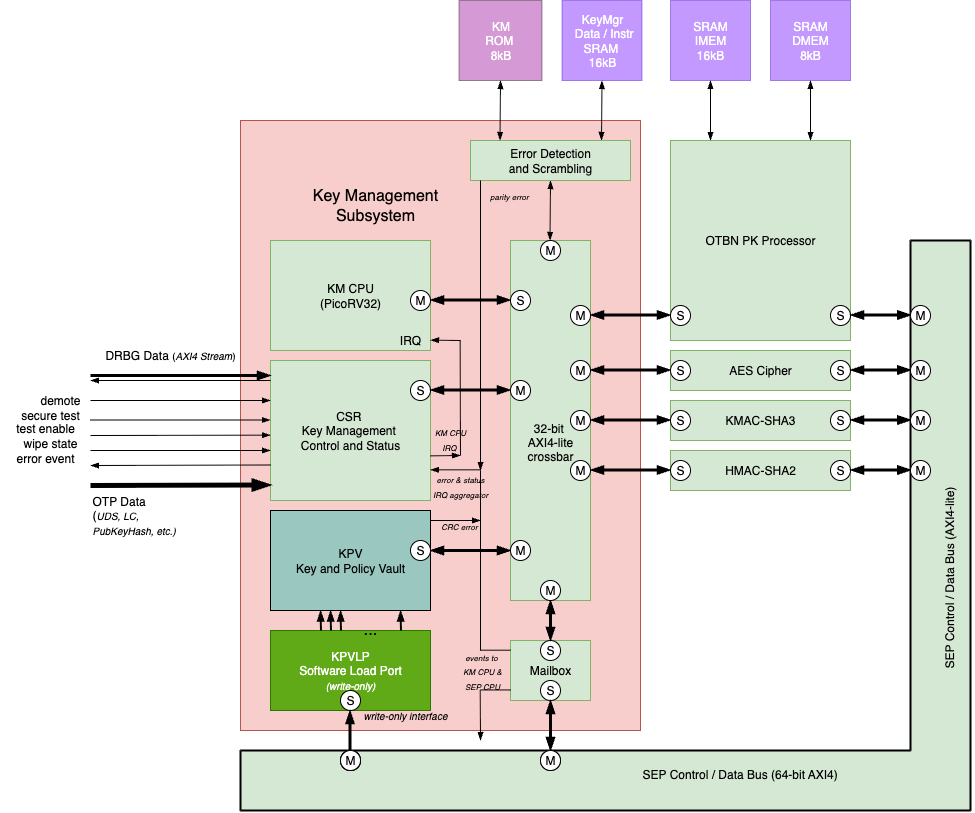
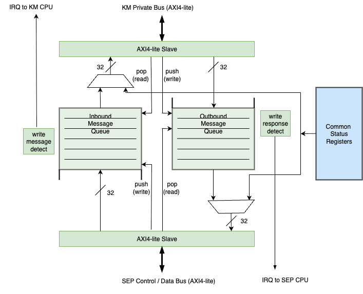
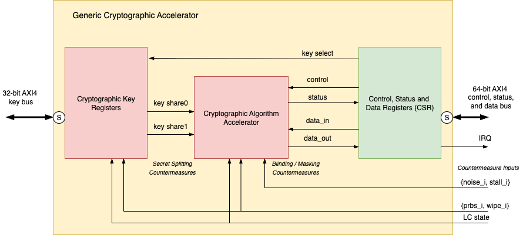

1. Key Manager (KM)
The KM module aims to support a superset of the OpenTitan Key Manager use cases. It utilizes a small RISC-V CPU for control which provides flexibility to implement all currently required key management operations:
-
Derivation
-
Storage and destruction
-
Policy Checking
-
Transfer to cryptographic accelerator
The CPU implementation enables future key management feature enhancements to be delivered with firmware. One example of this is TPM 2.0 attestation.
The Key Manager register map is reported in the SEP detailed register map.
To summarize, KM uses a collection of device identity and root key data to generate a set of keys using a derivation function. This data comes from the following sources:
-
Entropy stream from DRBG
-
Life Cycle (LC) state stored in OTP and managed by the LC controller
-
Demotion state (CSR)
-
OTP secret fields: CHIPLET_UID, SIP_UID, SYS_UID, CLASS_KEY
-
Once these fields have been pushed into the Key Manager, the corresponding read lock bits will be set in order to prevent software from accessing these values
-
-
OTP public fields: SEP_CHIPLET_ID, SEP_SIP_ID, SEP_SYS_ID
-
Per-owner public identity values that personalize each owner’s identity root. Being public they are not read-locked; only their integrity matters
-
-
Test control signals
-
Configuration parameters e.g. version numbers
The SEP cryptographic subsystem physically separates key and data processing facilities. The KM straddles the two domains and enforces separation for enhanced security. The KM can receive SEP host command requests via the mailbox interface. The KM firmware reads those requests, determines whether the actions are permitted and performs those in an isolated environment. The host never has direct access to any of the generated keys.
Key material provisioned into the KPV by SEP is handled via the mailbox command protocol; the KM firmware writes into KPV slots on the SEP’s behalf.
KM communicates with the cryptographic accelerators (OTBN, AES, KMAC, HMAC, and the Adams Bridge post-quantum engine) and the SEP OTP/eFuse controller via a single AXI4-Lite crossbar that routes transactions to internal slaves and external master ports based on address decoding. The crossbar enforces address-based separation between internal peripherals and external engine master ports. All secret data such as keys are transferred over internal bus paths mastered by the KM CPU and are not directly accessible by any other external hosts. SEP host firmware communicates with the KM via the mailbox component. SEP host can send commands and data argument messages into the KM and receive response data in return. KM can also send unsolicited messages to the SEP host via the mailbox response data.
Both the KM ROM and SRAM memories are protected by byte-wise odd parity bits to detect errors. No attempt is made to correct errors. A detected parity error interrupts the KM CPU, which treats it as an unrecoverable fault: the KM notifies the SEP host and halts (see Unrecoverable Faults).

Parameters
| Parameter | Type | Default | Description |
|---|---|---|---|
|
|
16384 |
Size of the KM boot ROM in bytes (16 KB). |
|
|
16384 |
Size of the KM data SRAM in bytes (16 KB). |
|
|
16 |
Minimum FIFO depth for each mailbox direction (must be a power of two). |
|
|
|
When set, the PicoRV32 core treats memory read data as latched (hold until next request). |
Memory Map
The KM CPU addresses its internal peripherals through a flat 32-bit address space. The AXI4-Lite crossbar decodes the address and routes transactions to the corresponding slave port.
| Address Range | Component | Description |
|---|---|---|
|
ROM |
16 KB boot ROM (read-only, parity-protected). |
|
SRAM |
16 KB data SRAM (parity-protected, optional scrambling, region-based write-lock). |
|
KPV |
Key and Policy Vault register and key storage region. |
|
KMCSR |
Key Manager Control and Status Registers. |
|
DRBG Sampler |
DRBG random data, configuration, and status registers. |
|
Mailbox |
KM-side mailbox read/write and control registers. |
|
OTP/eFuse |
External AXI4-Lite pass-through to SEP eFuse controller. Hardware remaps KM-local addresses to |
|
Crypto Masters |
External AXI4-Lite master ports: OTBN, AES, KMAC, HMAC, ABR (4 KB each). |
Reset Conditioning
The KM exposes two independent external reset inputs that map to two distinct reset domains. This split allows the SEP host to recover the KM CPU and volatile state without disturbing non-volatile configuration or forcing a full power-on style reset of the subsystem.
| Input port | Polarity | Synchronicity | Integration tie-off (SEP) |
|---|---|---|---|
|
Active-low |
Asynchronous |
SEP system cold reset ( |
|
Active-low |
Synchronous to |
SEP KM sub-component software-reset CSR bit ( |
The km_reset_conditioner submodule conditions these inputs and the
KMCSR-sourced soft reset into two clean, glitch-free, active-low output
resets:
Cold path (rst_cold_aasd_no)
-
Source:
cold_rst_nionly. -
Conditioning: a single
prim_rst_syncsynchronizer providing asynchronous assert / synchronous deassert (AASD). The raw incoming cold reset is used directly — there is no pulse-stretching hold counter on the cold path. -
Scope: resets the entire KM (all components and all reset domains).
Warm path (rst_warm_sync_no)
-
Synchronous sources:
warm_rst_ni(external pulse from the integrator) orsoft_rst_ni(the KMCSR software-triggered reset, see below). Both are assumed synchronous toclk_i. -
Cold coupling:
rst_cold_aasd_nois wired as the asynchronous reset of the warm-path hold counter flop. A cold-reset event therefore immediately assertsrst_warm_sync_noas well, guaranteeing that all warm-reset state is also cleared on a cold reset. (Cold reset is deliberately kept out of the synchronous trigger term to avoid a CDC hazard inside the posedge-only counter.) -
Pulse extension: the warm reset is held asserted for a minimum of
MIN_RESET_CYCLESclock cycles (default 10) after the trigger deasserts. -
Scope: resets the KM CPU and volatile state only — see the domain table below.
Scan-mode multiplexers (scan_rst_ni / scanmode_i) allow the DFT
infrastructure to override both output paths consistently. An assertion
guarantees that the warm reset is always asserted whenever the cold reset
is asserted.
Reset domain assignment
The two output resets are distributed across the KM components as follows:
| Reset domain | Components |
|---|---|
Cold only ( |
ROM/SRAM memory interfaces and parity logic; non-volatile SRAM scrambler
lock state ( |
Warm + cold ( |
PicoRV32 CPU core; the KM-internal AXI4-Lite crossbar/fabric (reset to
guarantee no in-flight transaction lingers across a warm reset — see
below); the KMCSR warm subset ( |
Fabric quiescence across a warm reset
Because the warm reset is applied to the entire KM-internal AXI4-Lite
crossbar in addition to the CPU, no outstanding read or write transaction
can linger on the KM system fabric across a warm reset. In the
PeakRDL-generated register blocks this is reinforced by the WARM_RST_N
reset signal carrying cpuif_reset, which resets each block’s AXI CPU
interface state machine so that a partially completed transaction does not
survive the warm reset.
As discussed earlier, the KM acts as a server to the SEP host CPU and does not provide it with direct access to its private resources. The SEP CPU requests service by sending command messages to KM via the Mailbox component which queues them up and notifies the KM CPU.
Command messages correspond to function calls in the KM CPU firmware. The messages encapsulate a function call identifier, a sequence number along with a declared number of arguments. Commands can perform a number of different programmable operations such as
-
Key generation
-
Key destruction
-
Key transfer
-
Software key provisioning
-
Key Manager Instruction and Data Memory loading
The command/response message format is intended to be very general to facilitate adoption of new features when required. The message format is illustrated below. It is flexible and can be redefined in future firmware versions. The message format, CRC verification, and command legality checks are entirely firmware-defined. The mailbox hardware does not parse message headers, compute or verify CRCs, or enforce command legality — it behaves as a raw 32-bit word FIFO transport.
| header_crc8[31:24] | message_length[23:16] | function_id[15:8] | sequence_number[7:0] |
|---|---|---|---|
Data_1[31:0] |
|||
Data_2[31:0] |
|||
… |
|||
Data_N[31:0] |
|||
CRC32[31:0] - checksum |
|||
Command/response messages without a data payload (message_length = 0x00) drop the payload CRC32 and only contain the header:
| header_crc8[31:24] | 0x00 | function_id[15:8] | sequence_number[7:0] |
|---|
The mailbox consists of two FIFO queues (inbound: SEP→KM, outbound: KM→SEP, minimum depth 16 words each) which buffer message words. Each word stored in the FIFOs has an associated separator bit; the sender sets this bit when writing the last word of a message into the FIFO (write-only for sender). The receiver can compare the length field in the message header to the number of words read and check the separator bit to verify message completeness.
When a new word is written on the inbound channel, the mailbox asserts a level-sensitive interrupt to the KM CPU that remains asserted while the inbound queue is non-empty. The CPU firmware reads (pops) the message out of the mailbox, checks the header and message CRC in firmware, and decides whether or not to execute the corresponding function. When the function has completed, the CPU firmware pushes a response into the outbound channel; the mailbox asserts a level-sensitive interrupt to the SEP CPU that remains asserted while the outbound queue is non-empty.
The mailbox provides status registers indicating queue fill levels and empty/full conditions. When a write is attempted to a full FIFO, the mailbox returns an AXI error response (SLVERR by default, configurable to OKAY), drops the new data, and preserves all existing FIFO contents. Reads from an empty FIFO also return an AXI error response (SLVERR by default, configurable to OKAY). Overflow and underflow conditions set sticky interrupt status bits (one per FIFO direction per condition).
Both KM and SEP sides have a flush control bit (write-1-to-trigger). Writing 1 flushes all FIFOs (inbound and outbound). When SEP flushes, KM receives a sticky interrupt (if enabled). When KM flushes, SEP receives a sticky FLUSHED\_BY\_KM interrupt (if enabled).
All mailbox interrupt sources on each side (data available, overflow, underflow, flushed-by-other) are aggregated into a single IRQ output per side: one to KMCSR, one to the SEP interrupt controller.
The mailbox and command processing firmware act as a firewall and the KM will only execute legal commands. The number of framed message words received must be consistent with the header’s message_length field, and the CRC checks for both the header and message payload must be valid. When illegal commands are detected, the receiver firmware will issue an interrupt as well as push an illegal/abort message into the status FIFO. When corrupt or improperly framed messages are received, the receiver will flush the entire mailbox and an interrupt will be transmitted to the sender. The SEP will perform the exact same message validations as the KM.

Cryptographic keys are stored in the Key and Policy Vault (KPV) block.
The life cycle and demotion states are provided to the KM CSR register
block and are consumed by KM firmware as key-derivation inputs. The
test-mode signal (secure_tm) is a hardware input to the same block but
is not a firmware-readable value: it gates the secret-bearing scan and
scan-dump paths and inhibits key derivation in hardware during scan test
(see Scan and Scan-Dump Protection). The KPV key-entry contents are secret-bearing:
they may be placed on a scan chain for test coverage but must never be
scan-dumpable (see Scan and Scan-Dump Protection).
The HMAC-SHA256 algorithm is used as the Key Derivation Function (KDF). It is implemented in firmware running on the KM CPU. This function is stored in the KM ROM. Other KDFs could also be implemented in firmware loaded into the instruction/data SRAM.
The 32-bit memory map of the KM subsystem is shown below. KM only consumes the bottom 4MB of address space leaving the remaining space unallocated.
| Base Address | End Address | Size | Unit | Description |
|---|---|---|---|---|
0x0000_0000 |
0x0000_3FFF |
16 kB |
KM ROM |
Key Manager Program ROM |
0x0000_4000 |
0x0000_7DFF |
~15.5 kB |
KM SRAM |
Key Manager Prgm/Data SRAM |
0x0000_7E00 |
0x0000_7FFF |
512 B |
KM SRAM (warm-persist) |
ROM warm-persistent region ( |
0x0000_8000 |
0x0000_CFFF |
Reserved |
||
0x0000_D000 |
0x0000_DFFF |
4kB |
KPV |
Key and Policy Vault |
0x0000_E000 |
0x0000_EFFF |
4kB |
KMCSR |
Configuration, Status, Interrupt and Interrupt Mask Registers |
0x0000_F000 |
0x0000_FFFF |
4kB |
DRBG |
DRBG Sampling Interface |
0x0001_0000 |
0x0001_0FFF |
4kB |
MB |
Mailbox Message |
0x0001_1000 |
0x0001_1FFF |
4kB |
OTP/eFuse |
SEP eFuse pass-through. KM-local addresses remapped to SEP the value of |
0x0001_2000 |
0x0001_7FFF |
Reserved |
||
0x0001_8000 |
0x0001_8FFF |
4kB |
OTBN |
Public Key Cryptography Accelerator key storage |
0x0001_9000 |
0x0001_9FFF |
4kB |
AES |
AES block cipher key storage |
0x0001_A000 |
0x0001_AFFF |
4kB |
KMAC |
KMAC key storage |
0x0001_B000 |
0x0001_BFFF |
4kB |
HMAC |
HMAC key storage |
0x0001_C000 |
0x0001_CFFF |
4kB |
Adams Bridge |
ABR key storage |
0x0001_D000 |
0xFFFF_FFFF |
Reserved |
Separating the key and data domains explicitly as described above increases security as it makes it more difficult for an adversary to compromise the secret key information via a software based attack. In the figure below, the secrets which must be protected reside in the red blocks. The secret data is physically separated from the software accessible bus.
Physical key recovery attacks such as side channel analysis and differential fault injection are still possible, but these require direct access to the device and are more difficult to achieve. These types of attacks are, for the most part, only possible on physically accessible devices such as automobiles and not those in data centers. To detect faults, we recommend including a CRC32 checksum field to the key data structure as described below.

Adams Bridge Key Sideload Interfaces
The KM provides dedicated sideload interfaces to the Adams Bridge (ABR)
post-quantum engine, exposed as a single AXI4-Lite register block mapped at
0x0001_C000–0x0001_CFFF. The block has two directions: four seed inputs
the KM drives into ABR, and one shared-key output ABR drives back into the KM.
Seed sideload inputs (KM → ABR). The four seed inputs carry key material the KM side-loads into ABR:
| Interface | Width | Description |
|---|---|---|
ML-DSA seed |
256-bit |
Seed for ML-DSA key generation. |
ML-KEM seed D |
256-bit |
ML-KEM seed D. |
ML-KEM seed Z |
256-bit |
ML-KEM seed Z. |
ML-KEM message |
256-bit |
ML-KEM message input. |
Each seed uses the two-share masked layout (two key-share register banks
whose XOR is the real value, plus a key_valid bit) and is write-only to KM
firmware. The seeds are valid dest_valid destinations (bits 4–7), so they
are targets of CMD_KEY_TRANSFER and CMD_ENGINE_SHRED, and ROM shreds them
during the mutable-firmware handover.
ML-KEM shared-key output (ABR → KM). ABR computes an ML-KEM shared key and
presents it to the KM. The interface comprises a 256-bit (8-word) key register
array, a KEY_CTRL register holding key_valid, and an IRQ_STATUS /
IRQ_ENABLE interrupt pair.
-
The key words and
KEY_CTRL.key_validare read-only to KM firmware: hardware setskey_validand loads the key words when ABR delivers a new shared key. Firmware consumes the key by writingKEY_CTRL = 0, which clearskey_validand hardware-zeroizes (hwclr) the key words. Software can clearkey_validbut cannot set it. -
IRQ_STATUS.key_validis a sticky, write-one-to-clear bit (hwset
stickybit+onwrite=woclr). Hardware sets it on the key-ready event; firmware clears it by writing 1. The masked interrupt to the KM CPU isIRQ_STATUS & IRQ_ENABLE, on a dedicated PicoRV32 interrupt (bit 5).
The KM firmware ISR acknowledges the IRQ by clearing IRQ_STATUS and flags the
main loop; it does not consume the key. The shared key is later captured into a
KPV slot in response to a SEP CMD_ABR_SK_TRANSFER command (see the firmware
documentation).
Key Manager CPU Interrupt Processing
The KM receives interrupts from the KM Management CSR register block. The register block collects error and information status from the following sources and aggregates these into a single interrupt:
-
ROM parity error
-
SRAM parity error
-
ROM write attempt
-
SRAM write-lock violation
-
AXI SLVERR (read and write response monitoring)
-
AXI DECERR (read and write response monitoring)
-
DRBG sampler error (aggregated from timeout or stream error)
-
CPU software writeable via IRQ\SET register (for ISR testing)
-
Wipe state (rising edge of wipe\state input)
-
Mailbox inbound data available (from mailbox aggregated IRQ)
-
Demote - debug in product LC mode
These events are captured in sticky interrupt status registers (WOC) and aggregated into an interrupt signal which is forwarded to the KM CPU. All event signals can also be triggered by a parallel software interrupt register to enable testing of interrupt service routines (ISR).
Key and Policy Vault (KPV)
The Key and Policy Vault (KPV) is a custom implementation with a single-port AXI4-Lite interface for full read/write access by KM firmware.
KPV has the following registers:
-
32 Key Entry registers, each of 512 bits (16 words)
-
32 corresponding 32-bit control registers
RSA3K keys will not naturally fit into a single key entry, so will be concatenated into several as indicated by the new control register field xxx[2:0].
KM control registers for each slot have the following fields:
-
Lock_write[0]
-
Prevents KM firmware from overwriting this key entry’s data register and the control fields extend and last_dword until the next KM reset (cleared by either a cold or a warm reset — the KPV per-slot lock bits are in the warm reset domain). The control bits lock_write and lock_use (lower two bits) remain writable even when lock_write is set. Writes to the CTRL register when lock_write is set block all but the lower three bits (no update to blocked fields). Writes to key entry data when lock_write is set trigger AXI SLVERR and do not update storage. This field is read-any, write-one-only.
-
-
Lock_use[1]
-
Prevents KM firmware from reading this key entry’s data register until the next KM reset (cold or warm). Key entry reads when lock_use is set return AXI SLVERR with read data 0. This field is read-any, write-one-only.
-
-
Erase[2]
-
Write-one to start a hardware erase of this slot. The hardware overwrites all 16 key words of the slot with pseudorandom data and clears the slot CTRL register — including lock_write and lock_use — so the slot becomes reusable. Erase is intentionally not blocked by lock_write or lock_use. The hardware self-clears this bit when the erase completes; firmware can poll it to detect completion. This field is read-any, write-one-only.
-
-
Reserved[3]
-
Extend[6:4]
-
Indicates the zero-indexed number of slots for wide key fields. For example, RSA3K modulus requires 3kbit, so occupies 6 consecutive key slot entries with extend set to 5. This is enforced by firmware.
-
-
Reserved[8:7]
-
TBD
-
-
Reserved[16:9]
-
Last_dword[20:17]
-
Last valid key entry word index [1,15] e.g. last_dword=7 for a 256-bit AES key. All invalid key words return 0 if read.
-
-
Reserved[31:21]
-
TBD
-
Reset values: All KPV control registers (CTRL) reset to 0. All KPV key entry data registers (32 slots × 512 bits) have no reset value: they power up with random (undefined) values for security. The implementation must not connect reset to key entry storage flops.
KPV Scrambling
The KPV supports address and data scrambling during normal operation for all key entry data reads and writes, using the same PRESENT-based approach as SRAM scrambling. When enabled, the stored representation of key data is scrambled; the KM port sees the logical (unscrambled) data on the bus, with scrambling/descrambling performed transparently by the KPV.
The KPV has a scrambler key register (32-bit) and a scrambler control register with an enable bit and a lock bit. These registers are accessible only via the KM port. The lock bit is write-one-only (0→1): software sets lock by writing 1; writing 0 has no effect; lock cannot be cleared until the next cold KM reset. The KPV scrambler enable and lock are non-volatile state in the cold reset domain — they are preserved across a warm reset and cleared only by a cold reset. Scrambling is disabled by default after a cold reset.
When scrambling is enabled, the KPV uses the same scrambler algorithm as
SRAM but sized for 512×32 words (32 slots × 16 words). The scrambler
address input is the linear register index (0..511): slot_index × 16
word_index. Address scrambling maps the logical index to a scrambled
physical storage index. Data is scrambled before storage and descrambled
after retrieval. Only key entry data words are scrambled; CTRL registers
are not scrambled.
The KPV scrambler key register has no reset value (powers up random/undefined for security). The scrambler control register (enable and lock) resets to 0. On an emergency wipe (rising edge of wipe_state), the entire KPV is reset to zero including key data, control registers, and the KPV scrambler key and control registers.
Wipe State
The KM has a wipe_state control input for emergency wipe. The wipe_state signal must be held high for at least one complete KM clock period.
On every rising edge of this signal, the KM sets the wipe state interrupt in the KMCSR.
On the next clock cycle after the rising edge, the KPV is synchronously reset to zero: all 512 key entry data registers, all 32 KPV control registers, and the KPV scrambler key and scrambler control registers (enable and lock) are cleared to zero.
In the SEP, wipe_state is driven by the software-controlled
sep_cpu_ctrl.KM_WIPE_CTRL.wipe_state register bit. SEP firmware triggers
a wipe by writing the bit to 0 and then to 1; the bit must be returned to 0
before a subsequent write can produce a new rising edge. Because the bit is
a registered level, the one-clock-period hold requirement is satisfied by
the register itself. The emergency wipe is software-initiated only: no
hardware tamper or alarm source asserts wipe_state.
Scan and Scan-Dump Protection
For simplicity, the entire KM — every register and downstream logic block, including the KPV, KMCSR, mailbox, and DRBG sampler — is treated as Class 2 in the SEP scan-chain protection model (see the SEP Lifecycle Controller chapter, Asset and Scan-Chain Protection):
-
Scannable for test. KM registers may be placed on a scan chain so DFT achieves maximum coverage. During scan test the secure-test-mode signal
secure_tm = 1disconnects the secret-source shadow registers (*_UID,CLASS_KEY) at the eFuse boundary, before they reach the Key Manager, so the Key Manager captures no real secret and key derivation is starved of key material while registers are being shifted. -
Never scan-dumpable. During debug (
secure_tm = 0) the dedicated KM scan chain is tied off, so no KM register or key material can ever be extracted via scan dump — in any LC state and for any owner (chiplet or SiP). This protection is governed solely bysecure_tm; it is not gated by, and cannot be overridden by, the*_DBGfeature-control bits.
The complete Key Manager forms one Class 2 scan boundary. This boundary includes the processor, key vault, control and status logic, mailboxes, entropy sampling, memory-scrambling logic, internal interconnect, reset conditioning, and register blocks. Classifying the full subsystem intentionally includes some non-secret control state and avoids fragile per-register policy.
Unique identifiers and the class root key supplied by OTP are Class 1 assets and remain outside every scan chain. In secure test mode, these sources are replaced with a valid zero value at the eFuse shadow boundary, so the Key Manager only ever observes zero and needs no isolation logic of its own. Lifecycle and demotion policy remain available.
The Key Manager copies of the unique identifiers and the class root key are volatile: they are cleared by cold reset and by warm reset, which also carries the firmware soft reset, and they reload from the shadow bus on the cycle after the reset releases. Lifecycle and demotion captures persist across a warm reset because firmware relies on them for policy decisions.
Firmware-enforced runtime access policy is independent of scan and scan-dump protection.
The writable Key Manager SRAM is a Class 2 companion memory because it may retain firmware, key, or message working state. Its memory-test policy must enforce the same never-dump requirement. Immutable ROM is excluded because it cannot retain runtime secrets.
General-logic debug enablement does not apply to the Key Manager’s secret-bearing scan chain.
Remote Attestation Support in KPV and PCRV
This section describes facilities to support TPM 2.0 attestation. Here are the basic constraints and procedures:
The Endorsement Key (EK) is a public-private key pair. We will support ECDSA P256 and P384, but not RSA. The public and private keys are injected into the device (or generated on the device) and stored in OTP. The public key is recorded in the HSM database. The EK is only used for proving identity. It only performs decryption operations and no signing.
The Attestation Key (AK) is also a ECDSA public-private key pair but is generated inside the device during device manufacturing. The private key is stored in the OTP while the public key is exported for recording in the HSM database. The private key is used as a limited signing key of internal device measurements such as PCR quotes.
The EK and AK are stored in the KPV storage structure described above.
Platform Configuration Registers (PCR) are a set of registers which store system integrity measurement data. These are stored in a dedicated component called the PCR Vault (PCRV). PCRV implementation is deferred to a future OCAH version.
Another use case is loading the EK and AK attestation keys into the KPV. The SEP host provisions these keys over the mailbox command protocol; KM firmware validates the request and writes the supplied key material into KPV slots on the host’s behalf, then asserts the slot lock control field. The host has no direct write path into the KPV — all provisioning is mediated by KM firmware. Once the entries are in place, the KM can read them and derive further keys, populating other KPV slots with the KDF results.
PK Key Generation support
KM must be able to generate a public-private key pair during device test and provisioning manufacturing steps. RSA is a complicated process as two primes need to be generated and this requires running the Miller-Rabin test on large random numbers. It is also much larger than equivalent security ECC keys. The primary use case is TPM 2.0 attestation signing keys and we primarily will be using ECDSA P256 and possibly P384. The keys are only 256 or 384 bits long and are relatively simple to generate. Once generated, the private key stays on the device and the public key is exported. Export is performed through the outbound mailbox path.
Key Manager Control and Status (KMCSR)
This block of 32-bit registers is separate from the Key and Policy register block. Its purpose is to manage the configuration and operation of the Key Manager. It receives a number of external inputs described below which alter the state or operation of the Key Manager. Behavior is changed for example, when the device finds itself in different Life Cycle states and in debug mode. Inputs from the OTP such as UDI and DRBG random data are used in the key derivation process.
Any differentially encoded register fields are checked for validity. An error will be triggered if the encoding is violated on any of those fields and will be forwarded to the interrupt status register.
The KMCSR is implemented in km_csr using a PeakRDL-generated register block (km_csr_reg). The register set contains the following functional groups.
The VERSION register (offset 0x000) is a read-only register that reports
the Key Manager hardware revision using semantic versioning. It uses the
following canonical 32-bit layout, mandated so all software and testbenches
decode the version identically:
| Bits | Field | Description |
|---|---|---|
|
|
Patch version component. |
|
|
Minor version component. |
|
|
Major version component. |
|
|
Reserved; reads as 0. |
The current hardware revision reads as version 1.0.0 (MAJOR=1, MINOR=0,
PATCH=0) after reset with no software initialization. The register is
read-only: a write completes with an AXI SLVERR response and does not change
the value.
The interrupt aggregation logic collects eleven hardware event sources into a single CPU interrupt. Each source has a sticky status bit in IRQ_STATUS (write-one-to-clear), a mask bit in IRQ_ENABLE, and a software-trigger bit in IRQ_SET for ISR testing. The aggregated interrupt output is the logical OR of the masked status bits (IRQ_STATUS & IRQ_ENABLE).
| Bit | Source | Description |
|---|---|---|
0 |
ROM Parity Error |
Parity mismatch detected on a ROM read. |
1 |
SRAM Parity Error |
Parity mismatch detected on an SRAM read. |
2 |
ROM Write Error |
A write was attempted to the read-only ROM region. |
3 |
SRAM Write-Lock Violation |
A write targeted a locked 512-byte SRAM region. |
4 |
AXI SLVERR |
An AXI4-Lite slave returned SLVERR. |
5 |
AXI DECERR |
An AXI4-Lite slave returned DECERR. |
6 |
DRBG Error |
The DRBG sampler reported a timeout or stream error. |
7 |
Wipe State |
Rising edge detected on the |
8 |
OTP Change |
A monitored OTP readout field’s decoded value changed (see |
9 |
OTP Integrity Violation |
OTP dual-rail integrity violation (value and complement not complementary). |
10 |
Execute Violation |
Instruction fetch from a non-whitelisted (non-executable) memory region. |
Bits [31:11] of IRQ_STATUS are reserved. Two interrupt sources are not part
of the KMCSR IRQ_STATUS aggregation and are serviced separately: the mailbox
sources (FIFO data-available/space-available and overflow/underflow/flush
conditions), and the Adams Bridge ML-KEM shared-key interrupt on its own
PicoRV32 interrupt (bit 5, see Adams Bridge Key Sideload Interfaces).
The CPU IRQ entry vector is programmable through two registers. IRQ_ENTRY_ADDR
holds the effective IRQ entry address and resets to the built-in default
0x0000_0010; firmware may write any 32-bit value (the hardware performs no
alignment or validity checking) and the register is always readable, returning
the current effective entry address. IRQ_ENTRY_LOCK is a write-one-only lock
bit that can only transition from 0 to 1: while it is 0 firmware may reprogram
IRQ_ENTRY_ADDR freely; once it is 1, writes to IRQ_ENTRY_ADDR are ignored
(the value remains readable and unchanged) and further writes to
IRQ_ENTRY_LOCK have no effect. Both registers are in the warm reset domain:
every reset that re-enters ROM (cold, external asynchronous, and KM soft reset)
restores IRQ_ENTRY_ADDR to 0x0000_0010 and clears IRQ_ENTRY_LOCK.
The scrambler lock logic in the KMCSR is described in the SRAM Scrambling section of this document. The SRAM write-lock uses the SRAM_LOCK register, which is implemented as write-one-to-set (RDL woset). Each bit corresponds to a 512-byte SRAM region. Once a bit is set, it is cleared by the next warm or cold KM reset — SRAM_LOCK is in the warm reset domain. The SRAM scrambler key/enable/lock (SCRAMBLER_KEY, SCRAMBLER_CTRL) remain non-volatile state in the cold reset domain and are preserved across a warm reset. Because SRAM_LOCK clears on warm reset, the ROM is responsible for re-applying the write-lock policy on every boot (cold and warm) before handing control to mutable firmware.
The soft reset mechanism is guarded by a magic code. Firmware must write the value 0x53525354 (ASCII "SRST") to the SOFT_RST_CODE register; when the code matches, the KMCSR asserts an active-low soft reset (soft_rst_n) that feeds the warm path of the reset conditioner. This produces a synchronous warm reset of the KM CPU and volatile state (see Reset Conditioning) — it does not reset the cold-only domain. The warm reset remains asserted until the hold counter expires (MIN_RESET_CYCLES).
The BOOT_STATUS register (offset 0x02C) carries a single
COLD_BOOT_DONE flag. It is a write-one-only (RDL woset-style) status
bit: ROM firmware writes 1 at the end of its cold-boot initialization
sequence (in rom_boot_init), and the bit then remains set until the next
cold reset. COLD_BOOT_DONE deliberately uses the default (cold) reset
and is not tagged with the warm reset signal, so it survives warm
resets. Firmware reads this bit to distinguish a cold boot (reads 0) from
a warm reboot (reads 1) and can branch its initialization accordingly.
Execute-Permission Whitelist (NX)
The PicoRV32 enforces a whitelist of executable memory regions on every
committed instruction fetch (mem_valid && mem_instr). Any fetch from
outside the whitelist immediately pulses KMCSR.IRQ_STATUS.EXEC_VIOLATION,
which (if unmasked) routes to the ISR and triggers the unrecoverable fault
ROM_KM_UFAULT_EXEC.
The whitelist mode is controlled by the KMCSR.SRAM_EXEC_MODE.enable bit
(write-1-only, warm-reset domain):
enable |
Executable regions | Forbidden regions |
|---|---|---|
|
ROM ( |
All SRAM; Peripheral/AXI |
|
ROM, VROM*, and write-locked SRAM regions ( |
Unlocked SRAM; Peripheral/AXI |
-
VROM (
0x1000_0000) is a testbench-only virtual ROM used in the block TB. It is treated as always executable in both modes so that firmware running from VROM in simulation is not falsely faulted. VROM does not exist in production silicon.
SRAM_EXEC_MODE.enable is set by the stack-less handover assembly
(rom_handover_jump.S) immediately before the jalr to mutable firmware,
after SRAM write-lock regions have already been committed. This minimises
the window between enabling SRAM execution and the first fetch from SRAM.
The bit is write-1-only and cleared by warm reset, so the ROM-only
whitelist is re-applied on every boot cycle.
Error Events
Unrecoverable Faults
These events cause the CPU to halt when the corresponding interrupt is unmasked and the ISR determines recovery is not possible. They include, but are not limited to, the following conditions:
-
CPU trap events
-
ROM or SRAM parity errors
-
Invalid writes to ROM or SRAM
-
AXI bus faults (SLVERR or DECERR)
-
Instruction fetch from a non-whitelisted (non-executable) memory region
-
Any other unhandled exception or fault
The PicoRV32 includes a trap state that asserts a trap signal. When the CPU enters this state execution halts. The CPU will enter this state under the following conditions:
-
An EBREAK or other illegal instruction is encountered and the associated interrupt is masked.
-
The CPU encounters a misaligned access and the associated interrupt is masked.
-
An EBREAK or other illegal instruction is encountered within an ISR.
If an ISR determines that an error event is not recoverable, it will call the EBREAK instruction to trap and halt the core. The CPU trap signal is passed out of KM to indicate an unrecoverable fault. This signal indicates the KM has encountered an unrecoverable fault and is no longer executing (it will not respond to further commands). The signal remains asserted for as long as the KM remains in the trap state. The trap is cleared by resetting the KM CPU — either a cold reset or a warm reset (the PicoRV32 core is in the warm reset domain) restarts the core and clears this signal.
Recoverable Faults
These events do not cause the CPU to halt. They include:
-
Receiving corrupt or malformed command messages.
-
Detection of possible tampering or attack conditions that are not immediately terminal.
-
Any one of the previously listed error interrupts from which the corresponding ISR is able to gracefully recover.
The KM provides an output signal that indicates when a recoverable fault has been successfully handled. This signal is driven by a dedicated register bit in the KMCSR. When an ISR recovers gracefully from an error, it sets this register bit. The bit remains set until the SEP sends a firmware command to the KM to clear it (KM firmware clears the register bit in response to that command).
DRBG Sampler
There are four DRBG Sampler registers: a DRBG data register, a configuration register, a status register, and a prefetch data register. The data register is read by the KM firmware to obtain random words provided by the DRBG component. The data is transferred into the sampler via the AXI4-Stream interface. The Key Manager (sampler) is the slave device on that interface; the DRBG is the master device. The KM slave interface has the following signals to manage flow control and data transfer:
-
TREADY (output)
-
The sampler asserts TREADY when it is requesting data from the DRBG. We expect that TVALID from the DRBG should almost always be asserted (data available) so when TREADY is asserted, the sampler can immediately accept TDATA. Consider this signal equivalent to a request.
-
-
TVALID (input)
-
DRBG asserts when valid data words are being transferred. It is illegal for the DRBG to assert TVALID and then deassert it before TREADY is asserted; if this occurs, the sampler treats it as an error.
-
-
TDATA[31:0] (input)
-
DRBG sends the data words to the sampler.
-
-
TSTRB[3:0] (input)
-
DRBG can indicate individual byte validity. This will generally be tied to 0xF with all bytes being valid. When TSTRB is not 0xF, the sampler collects only the valid bytes and issues further requests until a full 32-bit word is assembled before returning data to the CPU or updating the prefetch register.
-
The DRBG data register is read by the KM firmware to obtain a word of random data. A read triggers the sampler to assert TREADY and wait for the DRBG to assert TVALID; if the DRBG has not yet provided data, the sampler holds the KM system bus until a word is received or a configurable timeout expires (then the read completes with SLVERR and zero data). The sampler may prefetch up to one word; when prefetch is disabled, the prefetch data register is cleared. Every read returns a fresh random sample or an error; the same sample is never returned twice. Prefetching is not subject to timeout; only active KM CPU read transactions are subject to timeout.
TSTRB handling: When the DRBG indicates TSTRB not equal to 0xF, the sampler collects only the valid bytes and issues further requests to the DRBG until a full 32-bit word is assembled before responding to a CPU read or updating the prefetch register. Byte order of the random data is not significant.
TVALID protocol violation: In AXI-Stream it is illegal for the source (DRBG) to assert TVALID and then deassert it before TREADY is asserted. If this occurs, the sampler treats it as a protocol violation: it responds SLVERR for the active read (RDATA zero), sets STREAM_ERR (W1C) in the status register, increments COUNT_BAD, and sends the aggregated error interrupt to the KMCSR (IRQ_STATUS.DRBG_ERR).
Error interrupt aggregation: The DRBG Sampler sends an aggregated pulsed interrupt to KMCSR whenever a sampler error occurs (timeout or stream error). KMCSR sets IRQ_STATUS.DRBG_ERR (sticky, W1C) when this interrupt is received; KMCSR provides a corresponding IRQ_ENABLE bit and IRQ_SET bit for testing.
Write rejection: Write requests to the DRBG sampler receive an AXI SLVERR response.
The configuration register is written by the KM firmware; the status register is read-only and updated by the sampler hardware. The configuration register has the following fields:
-
PREFETCH[0]
-
Enables prefetching. When disabled, the prefetch data register is cleared. Default: 0 (disabled).
-
-
TIMEOUT[31:16]
-
The number of cycles to wait for the DRBG before timing out an active CPU read. A value of 0 disables timeout. Default: 256. On timeout, the response is SLVERR with RDATA zero.
-
The status register holds the following read-only fields:
-
DRBG_READY[0]
-
TVALID is asserted on the AXI-Stream bus from the DRBG.
-
-
PREFETCHED[1]
-
The sampler has prefetched data available.
-
-
TIMEOUT_ERR[2]
-
Set whenever a DRBG read from the KM CPU times out. Write one to clear.
-
-
STREAM_ERR[3]
-
Set when there is an error on the DRBG AXI-Stream interface (e.g. TVALID deasserted before TREADY). Write one to clear.
-
-
COUNT_BAD[15:8]
-
The number of failed transactions (timeout or other error).
-
Saturates at 0xFF.
-
Clearing: writing any value other than 0 to this field resets the counter to 0; writing 0 has no effect.
-
-
COUNT_GOOD[31:16]
-
The number of successful words transferred to the KM CPU (excludes prefetched words).
-
Saturates at 0xFFFF.
-
Clearing: writing any value other than 0 to this field resets the counter to 0; writing 0 has no effect.
-
The prefetch data register is exposed as a read-only register in the DRBG sampler memory map for debugging.
Reset behavior: On KM reset (cold or warm — all DRBG Sampler CSRs are in the warm reset domain), DRBG Sampler control and status state (counters COUNT_GOOD and COUNT_BAD, TIMEOUT_ERR and STREAM_ERR status bits, CFG register PREFETCH and TIMEOUT, and any in-flight request or byte-assembly FSM state) are cleared or set to defined reset/default values. DRBG Sampler datapath registers (prefetch data register, assembled word buffer, response data slot) have no reset value: they power up with random (undefined) values.
The sampler hardware is implemented as a five-state FSM in km_drbg_sampler. The states and their transitions are summarised in the table below.
| State | Description |
|---|---|
|
No active request. If a CPU read arrives for the DATA register and a prefetched word is available, the FSM returns the prefetched value and transitions to |
|
The sampler asserts |
|
Valid bytes indicated by |
|
The assembled word is returned on the AXI read data channel with OKAY. The |
|
Entered from |
OTP
The KM consumes two things from the OTP/eFuse, both delivered over private hardwired paths so their values cannot be spoofed by software:
-
the fuse-provisioned UIDs —
CHIPLET_UID,SiP_UID,SYS_UID— the root secrets from which the KM derives the root keys; and -
the life-cycle state, one of the contexts a derived key is bound to (see [chip-configuration]).
UID delivery and protection. The UIDs are held in a KM-local copy. ROM reads that copy to derive the root keys, after which it is protected by the KM’s own warm-domain read-lock (see [uid-provisioning-and-access]) so mutable firmware cannot read it. This KM-local lock is separate from, and additional to, the eFuse controller’s own locks.
Life-cycle state. The life-cycle state is hardwired into the KM as authoritative, software-readable status. Being non-secret it is neither locked nor wiped; the KM uses it directly when binding a key, and ROM can compare it against the value a live key was bound to (see [key-revocation]).
eFuse access path. The KM also has a programmatic (AXI-Lite) path to the eFuse controller — for example to request a read or a program operation. That path is treated exactly like a system-host access: same access filtering, and it honors the eFuse controller’s native per-field read/write locks, so the KM gains no read privilege over the fuse array beyond the SEP host’s. Key binding always uses the hardwired life-cycle value above, not a value fetched over this path.
Demotion and PCR. The owner demotion state is hardwired from the Life Cycle Controller (LCC); PCR values come from the KM’s internal PCR Vault (PCRV). Together with the life-cycle state, these are the life-cycle/runtime contexts a key can be bound to (see [chip-configuration]).
KMCSR readout registers. The OTP-derived fields above are exposed to KM
firmware in the KMCSR region as hardware-driven, read-only registers. Each field
is delivered to the KMCSR as dual-rail complementary values ({~value, value})
and decoded within the KMCSR, which continuously verifies the complement
relationship.
| Register | Width | Contents |
|---|---|---|
|
8-bit |
Differential-encoded life-cycle state |
|
4-bit |
Two 1-bit demotion flags, each differentially encoded into 2 bits: |
|
8 × 32-bit |
256-bit CHIPLET_UID dual-rail words. |
|
8 × 32-bit |
256-bit SIP_UID dual-rail words. |
|
8 × 32-bit |
256-bit SYS_UID dual-rail words. |
|
8 × 32-bit |
256-bit CLASS_KEY dual-rail words. |
|
6-bit |
Write-one-to-set read-lock bits (warm reset domain), one per field. Cleared by warm or cold reset. |
|
6-bit |
Write-one-to-set read-lock bits (cold reset domain), one per field. Survives warm reset; cleared only by cold reset. Effective lock = |
|
6-bit |
Sticky write-1-to-clear flags: set when a monitored field’s decoded value changes. |
Dual-rail integrity. The hardware continuously checks that each value word is
the bitwise inverse of its complement word. Any violation raises the
OTP_SIGINT interrupt, which ROM firmware treats as an unrecoverable fault.
Change detection. When a monitored field’s decoded value changes, the hardware
sets the corresponding OTP_CHANGE_STATUS bit and raises the OTP_CHANGE
interrupt. ROM firmware reads the status, invokes an overridable change hook, and
clears the flag. Spurious change events are suppressed until a valid OTP value
has been captured after cold reset.
Unique Identifiers (UID) — provisioning and access
The KM consumes three fuse-provisioned Unique Identifiers — CHIPLET_UID,
SIP_UID, and SYS_UID (256 bits each) — provisioned respectively by the
chiplet creator, the SiP owner, and the system owner. Each UID is the root
secret from which the KM derives that owner’s software and hardware root
keys (see the Root keys and the key hierarchy section below).
The KM is a ROM-firmware-based key server: its CPU runs immutable ROM firmware as its steady-state firmware, at cold boot and throughout run time, and keeps servicing commands from ROM while the main SEP CPU is in its own run time. SRAM-loaded firmware is an optional future extension for adding KM functions; the baseline performs all required key-management functions, including run-time key derivation, from ROM alone. Consequently the UIDs and hardware root keys are only ever handled by trusted, immutable code.
UIDs and hardware root keys are ROM-only secrets: they must never be readable by mutable (SRAM-loaded) KM firmware, nor by the SEP host. In the ROM-only baseline this holds by construction — no mutable firmware runs — and the SEP host has no access path to them. For the future SRAM-firmware extension the KM provides a confidentiality safeguard: a read-lock (write-one-to-set, warm reset domain) on the UID and hardware-root-key registers. Before ROM ever transfers control to SRAM-loaded firmware it wipes the hardware secrets and sets these locks, so the mutable firmware cannot read them; once locked, reads return zero and the lock cannot be cleared by software — only a reset clears it.
The read-locks live in the warm (not cold) reset domain because the KM CPU core is itself warm-reset: any cold, warm, or soft reset restarts the CPU at its ROM reset vector and re-runs boot before any SRAM-loaded firmware can execute. ROM therefore re-establishes the protection on every boot — it re-reads the UIDs, re-derives key material, wipes the hardware key from any downstream crypto engine, and re-applies the read-locks before handing control to mutable firmware. Because the CPU is always forced back into ROM first, there is no window in which mutable firmware can run with the locks clear; the locks need not survive a warm reset, and no cold reset is required to restore keys in the ROM-only baseline.
Concretely, this safeguard is the OTP_READ_LOCK register: one
write-one-to-set bit per OTP readout field (life-cycle, demotion, and the four
256-bit secrets). Setting a bit causes the hardware to return zero for that
field’s value and complement words. ROM applies the lock using a triple-write
convention (three consecutive writes) so it commits even under a single-bit
glitch. OTP_CHANGE_STATUS shares the same warm reset domain for the same
reasons.
A parallel cold-reset-domain register, OTP_READ_LOCK_COLD, provides the
same write-one-to-set, per-field locking semantics but survives warm reset
(including soft reset) and is cleared only by cold reset. The effective
read-lock for each field is the OR of the corresponding bits in OTP_READ_LOCK
and OTP_READ_LOCK_COLD; either register alone is sufficient to suppress CSR
readback. The SEP host can set cold-domain lock bits at any time by issuing
CMD_OTP_READ_LOCK_COLD (0x28) over the KM mailbox. This allows the SEP host
to establish read-locks that persist across warm resets for the entire duration
of a power cycle, independently of the warm-reset lock applied by ROM firmware.
Root keys and the key hierarchy
From each UID the KM (ROM firmware) derives two domain-separated root keys. The current life-cycle state is an input to both derivations:
-
a software root key —
SW_root = KDF(UID, "SW_ROOT", lc_state) -
a hardware root key —
HW_root = KDF(UID, "HW_ROOT", lc_state)
The distinct domain-separation labels make the two roots cryptographically
independent even though they share a UID, and the life-cycle binding makes the
roots — and every key derived from them — specific to the life-cycle state they
were derived under. The demotion state is deliberately not a root input: it
is a volatile control, cleared on reset and set by firmware during boot, so it
is undefined at root-derivation time. Keys that must be bound to demotion bind
it at leaf-key derivation instead (see [chip-configuration]). The roots are
then used, with additional context, to derive the key hierarchy. A leaf key
is KDF(selected_root, context || user_input || label), where || denotes
concatenation and context is the selected configuration (life-cycle state,
demotion, PCR, …).
A core KM principle applies throughout: derived secret keys are never returned to the requester and are never readable by any agent other than the consuming crypto engine. The KM side-loads each derived key into the engine’s write-only key registers; only non-secret results (for example a generated public key) are returned over the mailbox. Side-loading — not key return — is the reason the KM exists.
Because ROM is the KM’s steady-state firmware, derivation runs on demand at
run time, and both branches can bind to run-time inputs: PCR values, read by
the KM directly from the PCR Vault, and user_input, supplied in the mailbox
command that requests the derivation. After a warm reset ROM re-reads the UID
and re-derives keys as needed; no cold reset is required in the ROM-only
baseline.
The two roots differ only in their exposure to mutable KM firmware (the optional SRAM-loaded extension):
-
Software root (
SW_root) — may be read by KM software, including future mutable firmware, so an extension can derive further keys from it. -
Hardware root (
HW_root) — never readable by mutable firmware; it is used only by immutable ROM and side-loaded into crypto engines over a private hardware path into their write-only key registers (never returned to software). If the SRAM extension is ever used, before transferring control ROM wipes the hardware key from any downstream crypto engine still consuming it and read-locks the UID copy and the KPV slot(s) holdingHW_root(ROM cannot clear a KPV slot, but a read-lock renders it inaccessible and unusable), preserving this property.
Chip configuration and key lifetime
The chip configuration is the named bundle of context that a derived key is
bound to. The requester selects the chip configuration for a derivation;
together with user_input it determines the key:
| Field | Description |
|---|---|
|
Which owner’s root is used: chiplet, SiP, or system. |
|
Hardware-only flag: selects the hardware root (a hardware-confined key) versus the software root, and sets the key’s confidentiality policy. |
|
Life-cycle state the key is bound to. Always bound for UID-derived keys: the roots themselves bind the life-cycle state (see [root-keys-and-hierarchy]), so explicit selection is meaningful only for keys derived from injected user-input keys. |
|
Demotion 1 (local-debug / DBG_1) state the key is bound to. |
|
Demotion 2 (inter-chiplet debug-bypass / DBG_2) state the key is bound to. |
|
Which PCR(s), if any, the key is bound to; the KM reads their authentic digests from the PCR Vault. Omitted for keys that are not PCR-bound. |
user_input (a 512-bit value carried in the mailbox derivation command) is a
further per-derivation input.
Selection. The requester chooses which configuration fields to bind — any
subset of the fields above (for example a demotion state only, or a PCR plus
both demotion states) — and there is no restriction on the values it may
select (access control over uid_select is left open for a future revision).
The KM derives the key bound to exactly that selected subset, and ROM records
the binding so the key’s lifetime can be tracked. A UID-derived key is
life-cycle-bound regardless of this selection, through its root ancestry.
Lifetime. The lifetime of every UID-derived key is tied to the specific fields it is bound to. When a bound demotion state or PCR changes, that key becomes stale and is revoked; keys that do not bind the changed field are unaffected. The life-cycle state is the exception: because the roots bind it, a life-cycle transition invalidates the roots and, with them, the entire UID-derived hierarchy — regardless of each key’s selected binding. A revoked key must be re-derived before use. The mechanism is described in Key revocation below.
Key revocation
ROM maintains a registry of every derived key, recording its configuration binding (the specific fields and values it was derived under), its KPV storage location, its crypto-engine binding, and its derivation parent.
Triggers. A key is revoked when either:
-
any configuration field it is bound to changes value — a life-cycle transition, a demotion, or (for a PCR-bound key) an extend of the bound PCR; or
-
its derivation parent is revoked — revocation cascades to every key derived from it. (This is also how an explicitly revoked user key takes its derived keys with it.)
A life-cycle transition additionally invalidates the roots themselves — the roots bind the life-cycle state — so it revokes the entire UID-derived hierarchy through the parent cascade, regardless of each key’s selected binding.
Action. Revoking a key erases it from its KPV slot — using the per-slot hardware Erase control, which overwrites the key data through the KPV scrambler and clears the slot CTRL register (including its lock bits) so the slot is immediately reusable — and shreds its crypto-engine binding (zeroes the side-loaded key and drops its valid indication). A revoked key must be re-derived before it can be used again.
Mechanism. Revocation is performed entirely by ROM firmware; there is no hardware key-use interlock. On any change to a bound configuration field, ROM walks its key registry and revokes the affected keys — hardware-erasing them from the KPV and shredding their crypto-engine bindings — together with any keys derived from them; the keys are re-derived on next use. Hardware support is the per-slot KPV Erase controller plus the interrupts that notify the KM CPU:
-
Life-cycle state and demotion — typically configured per boot, but ROM does not assume they are immutable at run time: a change at any time triggers the same registry walk and revocation. A demotion change revokes only the keys that bound demotion; a life-cycle change sweeps the entire UID-derived hierarchy, roots included.
-
PCR — a run-time field. A PCR change raises an interrupt to the KM CPU, which then revokes the keys that bound that PCR.
-
Parent revocation — an explicit revoke (for example of a user input key, requested over the mailbox) raises the KM inbound interrupt and triggers the same sweep, cascading to derived keys.
A cold reset wipes all key material unconditionally; a warm reset re-enters ROM, which re-establishes keys under the current configuration.
User input keys
Besides the UID-derived hierarchy, the SEP host may inject its own keys — user input keys — for the KM to manage and derive from. Unlike the UID keys and hardware root keys, user input keys are software-visible: they are supplied by the host and live in the software-accessible key domain, not in the ROM-only secret class.
Injection. The host injects a user input key over the mailbox command protocol; KM firmware writes it into a KPV slot and registers the key (integrity check and slot write-lock) so it can be tracked, derived from, and revoked.
Derivation. A user input key may serve as a derivation root: the KM offers the same derivation support for user input keys as for UID roots, deriving child keys with the same chip-configuration context and domain-separation labels. Keys derived from a user input key bind to the selected configuration exactly as UID-derived keys do, and therefore carry the same configuration-tied lifetime. As with all derived keys, the resulting secret keys are side-loaded into the crypto engines and are never returned.
Revocation. The SEP host revokes a user input key by a request over the mailbox, which raises the KM inbound interrupt; ROM then removes the key and cascades to every key derived from it — those derived keys are wiped from KM key storage and shredded in the crypto engines — using the same parent-revoke mechanism as configuration-driven revocation (see Key revocation above).
ECC key metadata in signatures
The metadata associated with a derived ECC private key is the selected chip configuration under which that key was generated (the same configuration fields recorded for the key’s lifetime; see Chip configuration and key lifetime).
When the key signs, this metadata may optionally be included in the hash that is signed — the KM hashes the message together with the metadata. This binds the configuration into the signature, so a relying party can determine from the signature how the signing key was generated (under which life-cycle state, demotion, PCR, and so on). Inclusion is selected per signing operation; only inclusion in the signed hash cryptographically attests the configuration.
CRC Accelerator
The KM CPU is fitted with a CRC accelerator attached through the PicoRV32 PCPI (Pico Co-Processor Interface). It provides hardware versions of the CRC functions the firmware uses on its high-value integrity paths — message header CRC-8/ROHC, message payload CRC-32C, and key-data integrity CRC-32C — so these computations consume far less CPU time than a software loop. The accelerator is always present in the KM build; firmware invokes it unconditionally and does not retain a software fallback path.
The accelerator exposes three R-type custom instructions on the PicoRV32
custom0 opcode. Each instruction takes two operands — the current CRC
chaining state (rs1) and the next input unit (rs2) — and writes the
updated chaining state to rd.
| Instruction | funct7 |
funct3 |
opcode | Input unit |
|---|---|---|---|---|
CRC-32C word update |
|
|
|
|
CRC-32C byte update |
|
|
|
|
CRC-8/ROHC byte update |
|
|
|
|
Behavioral properties:
-
The CRC-32C word-update instruction consumes its 32-bit operand as four bytes in little-endian order (
[7:0],[15:8],[23:16],[31:24]). -
The CRC-32C instructions expose the internal running remainder before the final XOR. Firmware seeds the chaining state with
0xFFFF_FFFFand applies the final XOR only when it needs the externally visible CRC value, so word updates, byte updates, and intermediate states chain freely. -
For non-word-sized buffers, firmware processes whole words with the word-update instruction and any remaining
1–3tail bytes with the byte-update instruction; no software tail path is used. -
The CRC-8/ROHC instruction carries its 8-bit state in
rd[7:0]and zero-extendsrd[31:8]. -
Empty-input results are identical to the software definitions: with no input units consumed, the seeded state (after the firmware’s final XOR for CRC-32C) is the empty-input CRC.
The three instructions share a single byte-update datapath. CRC-32C word
mode runs four byte-update cycles per operation; the two byte modes run
one cycle each. The datapath uses reflected CRC update behavior with the
reflected polynomial 0x82F6_3B78 for CRC-32C and 0x0000_00E0 for
CRC-8/ROHC (the reflection of the 0x07 CRC-8/ROHC polynomial), and never
applies the CRC-32C final XOR. The CRC parameter definitions (init,
reflection, and final XOR) are given in the firmware CRC function library
documentation.
Any other encoding in the custom0 CRC instruction family is not
recognized by the accelerator: it does not assert the PCPI ready/wait/write
handshakes, so PicoRV32’s normal illegal-instruction handling is
preserved. The feature introduces no new top-level KM ports or CSRs, and
the PicoRV32 built-in multiply/divide support remains enabled and
unchanged.
Key Manager ROM Code
The KM ROM will be as minimal as possible and support just a few functions described next. Any other functions will be loaded dynamically into the Instruction/Data SRAM by BL1 software or higher via the SEP CPU.
Memory Scrambler Provisioning
Instruction and data SRAM contents are protected by a simple, key based scrambler.
-
Provision the key by reading the DRBG register and moving the data into the scrambler key slot
-
Set the write-lock bit to prevent any updates on this key slot until the next cold reset (the scrambler key and its lock are non-volatile, cold-domain state preserved across warm resets)
-
Enable data content and address scrambling on write and descrambling on read operations
Basic Interrupt Service Handler
Support inbound mailbox message handling.
Mailbox Message Handler
This utility is triggered by the ISR and will support handling all inbound mailbox message processing tasks. The most important message task type is supporting the ability for the SEP host CPU to load KM CPU program images into SRAM. This is the method by which we bootstrap more KM functionality. Below are some of the tasks the message handler must support.
-
Respond to interrupt, and determine it comes from the inbound mailbox
-
Retrieve inbound mailbox data from the mailbox by copying it to a segment of local SRAM
-
Check validity of the data and command encapsulated in the message and unlock data or perform action if message is deemed to be valid and legal
Key derivation function (HMAC-SHA256)
HMAC-SHA256 is the underlying primitive for both deterministic key derivation and random key generation. The two uses are kept distinct:
Deterministic derivation (root keys and the key hierarchy). Root keys and
all UID-derived hierarchy keys are derived deterministically: the inputs are
the UID / root-key material plus a fixed context (domain-separation label,
life-cycle state, demotion, PCR, user input, …), and no fresh DRBG
entropy is mixed in. Determinism is required so the same inputs always
reproduce the same key — it lets ROM re-derive keys after a warm reset and
binds each key to its selected configuration. When a derived key must
incorporate randomness, the requester supplies it as user_input, which
keeps derivation deterministic; the KM mixes DRBG entropy into a derivation
only in rare cases. The derivation:
-
Collects the input arguments from the management CSRs and root-key storage into dedicated KDF argument locations.
-
Computes the HMAC-SHA256 digest and writes the result to its destination (a KPV slot, or a side-load to a crypto engine).
-
Optionally repeats the computation and compares the two digests to detect a fault attack, reporting pass/fail as an interrupt-status error event.
Random key generation. When a fresh, non-reproducible key is required (rather than a derived one), the KM instead draws DRBG entropy (via the DRBG sampler) as the key material. Such keys are random, not re-derivable, and are not tied to a configuration; they are used where a unique secret — not a deterministic derivation — is needed.
ROM and SRAM Error Detection
Data will be stored with byte-wise odd parity. This feature cannot be turned off, but the interrupt mask register can disable this event from propagating up the interrupt tree to the KM CPU as well as to the external error event signal output.
Parity Error Protection
Parity bits will be ``out-of-band'' from the data and hence not part of the scrambled word. The motivation for this is to minimize any data path extra latency on top of what is already added by scrambling and descrambling. Parity is on a byte-wise basis so will add an additional 4 bits next to the 32-bit data word.
SRAM Write Locking
The SRAM interface incorporates a write-locking mechanism to designate specific 512-byte memory regions as read-only. This feature is primarily designed to protect dynamically loaded KM firmware from unauthorized modification.
Control of this functionality resides within the KM Control and Status Registers (CSRs). Once a memory region is locked, it cannot be unlocked within the current boot session. It will remain in the read-only state until the next warm or cold reset of the KM. The write-lock state is in the warm reset domain and is cleared on every warm or cold reset.
Protection across warm resets is maintained by the ROM, which is responsible for re-applying the full write-lock policy on every boot (both cold and warm) before handing control to mutable firmware. Because the KM CPU always re-enters ROM after a warm reset, mutable firmware never executes against an unlocked SRAM region.
ROM Warm-Persistent SRAM Region
The highest 512 bytes of KM SRAM (region 31, 0x0000_7E00–0x0000_7FFF) are
reserved as a ROM-managed warm-persistent data structure (rom_persist). The
mutable-firmware load area, stack, and BSS/data occupy the SRAM below it.
This region is owned exclusively by ROM firmware: it holds ROM state that must survive warm reset and is not general-purpose scratch for mutable (SRAM-loaded) firmware. Mutable firmware must not place its own data here, and once ROM write-locks the region it cannot write it at all (see Write-lock policy below).
SRAM storage is cold-domain hardware: its contents survive any warm or soft reset and are erased only by a cold (power-on) reset. ROM firmware exploits this property to carry state across warm resets without requiring non-volatile storage beyond the SRAM macro itself.
Cold initialization. On every cold boot, rom_boot_init() detects a cold
boot via the COLD_BOOT_DONE flag (reads 0 before it is set at the end of
boot) and calls rom_persist_cold_init(), which writes known-zero values to
all fields. On a warm or soft reset, COLD_BOOT_DONE already reads 1 and
rom_persist_cold_init() is skipped, preserving the contents of the region.
Contents. The rom_persist_t structure currently contains one field:
| Field | Type | Description |
|---|---|---|
|
|
Byte count of the mutable firmware image currently loaded in SRAM ( |
Write-lock policy. Before handing control to mutable (SRAM-loaded) firmware,
ROM must call rom_persist_lock(), which sets SRAM_LOCK bit 31 via a triple
write for glitch resistance. After locking, any write into 0x7E00–0x7FFF
is silently dropped and a SRAM_WRITE_LOCK_VIOLATION IRQ is raised. The lock
is cleared on the next warm or cold reset; ROM re-establishes it
before transferring control to mutable code.
Mutable Firmware Model
The KM ROM supports loading and executing a mutable software image from SRAM,
controlled by the CMD_SRAM_LOAD_EXEC and CMD_SRAM_EXEC mailbox commands.
Memory map. Mutable firmware is loaded into SRAM starting at 0x4000 (SRAM
word-address 0) and ROM jumps to 0x4000 as the entry point. ROM does not
program the CPU IRQ entry vector for the loaded image; the mutable firmware is
responsible for setting IRQ_ENTRY_ADDR to its own handler before it
re-enables interrupts.
SRAM region write-locking. After a successful load, ROM write-locks the 512-byte
SRAM regions that contain the firmware image (regions 0 through
ceil(fw_size_bytes / 512) - 1). These locks are applied immediately before the
handover jump and remain active for the lifetime of that execution epoch.
SRAM_LOCK is in the warm-reset domain and is cleared by a warm reset; ROM
re-applies the write-lock on each subsequent warm boot when CMD_SRAM_EXEC is
processed, before handing control to mutable firmware.
The rom_persist region (region 31) is always locked separately.
Load bounds. The firmware image must fit entirely below a static load
ceiling, km_fw_load_limit, rather than below the live stack pointer at load
time. This matters because the ROM stack is in volatile SRAM and grows
downward toward the image: after a warm reset that follows mutable-firmware
execution, the ROM re-runs and a CMD_SRAM_EXEC restart may drive the stack
deeper than it was at original load, so a live-SP bound could let the ROM stack
later overwrite executable image words. The linker computes the ceiling as
STACK - rom_max_stack (rounded down to a 512-byte write-lock region), where
__rom_max_stack is the worst-case ROM stack depth validated against the
production ELF by a post-link call-graph analyzer; the firmware build is gated
on the analyzer. CMD_SRAM_LOAD_EXEC rejects oversized images, and a per-word
guard during streaming provides defense-in-depth.
The region-disjointness invariant guarantees that no ROM runtime region (stack,
.data, .bss) shares a 512-byte block with any firmware-image region. This
ensures that write-locking the firmware regions does not accidentally lock
ROM-owned data, which must remain erasable by the whole-SRAM scramble during
handover. Aligning the load ceiling down to a write-lock region boundary is
what enforces this invariant.
Sideload key shred. Before locking and the stack-less handoff, ROM shreds the
HMAC, KMAC, AES, and OTBN sideload key-share registers, as well as the four
Adams Bridge seed sideload interfaces (ML-DSA seed, ML-KEM seed D, ML-KEM seed
Z, and ML-KEM message), overwriting them with PRNG data and clearing each
key_valid. These crypto-engine register banks are outside the SRAM address
space, so the whole-SRAM scramble cannot reach them; shredding them explicitly
prevents mutable firmware from reading any key material the ROM previously
sideloaded.
KPV lock/shred. KPV key-entry data has no warm reset and is descrambled on
KM-port reads, and the load path only write-locks (not read-locks) provisioned
keys, so live key material would otherwise be plaintext-readable by mutable
firmware at the KPV KM-port window. During handover ROM walks every KPV slot,
using the firmware key registry to distinguish live slots from free ones: each
registered slot is read-locked (lock_use, which is independent of
lock_write, so the hardware returns zero for KM-port key reads), and each free
slot is overwritten with PRNG data (falling back to a read-lock if a free slot
is already write-locked, such as a revoked key, and so cannot be shredded).
Mailbox flush. After the outbound RESP_CMD confirmation has been sent and
consumed by the SEP (and, for CMD_SRAM_LOAD_EXEC, after the image stream has
been fully drained), ROM flushes both mailbox FIFOs. This erases any residual
inbound payload — for example key material from an earlier CMD_KEY_LOAD — so
mutable firmware cannot recover it from the shared mailbox.
IRQ vector. ROM does not program IRQ_ENTRY_ADDR during handoff. Before the
stack-less assembly handoff ROM masks all CPU IRQ sources and clears all
KMCSR/mailbox IRQ enables, then jumps with the vector left at the ROM default
(0x10, re-asserted by ROM at boot). The loaded firmware is responsible for
programming IRQ_ENTRY_ADDR to its own handler before it re-enables interrupts;
because every CPU IRQ is masked across the jump, the vector value is immaterial
until the firmware does so. IRQ_ENTRY_LOCK is left unset so the firmware can
program the vector freely.
IRQ_ENTRY_ADDR and IRQ_ENTRY_LOCK are warm-reset-domain registers: every
reset that re-enters ROM (cold, external async, and KM soft reset) restores the
vector to the ROM default (0x10) and clears the lock, and ROM re-asserts that
value at boot before unmasking interrupts. ROM therefore never executes with a
mutable-firmware-chosen vector, and an attacker-controlled vector cannot coexist
with ROM-privileged execution.
sram_fw_size semantics. ROM sets sram_fw_size = 0 at the start of a load
command (before image transfer) and updates it to FW_WORDS × 4 only after
a successful CRC-32C verification. CMD_SRAM_EXEC rejects execution if
sram_fw_size == 0, preventing jumps when no valid image is present. The
field persists across warm resets so mutable firmware can be restarted without
reloading the image.
Post-handover IRQ state. ROM clears all KMCSR and mailbox IRQ enables and
clears any pending sticky IRQ status bits before the assembly handoff. This
ensures mutable firmware does not inherit spurious pending interrupts (in
particular, the sram_write_lock_err that would otherwise be raised by the
whole-SRAM scramble writing into locked firmware regions).
Key Manager (KM) Firmware
This section is the developer reference for the KM ROM firmware that runs on the PicoRV32 and services SEP requests. It documents the SEP-facing command/response API in detail, along with the firmware-internal subsystems that implement it. Use this document when writing SEP firmware that drives the KM mailbox.
The KM firmware is responsible for bringing the subsystem to a secure operational state, servicing SEP mailbox commands, managing key material in the KPV, sideloading keys into approved crypto engines, and handling recoverable and unrecoverable fault conditions. In this revision, the ROM firmware includes the following major functional areas:
-
Boot and secure initialization
-
Mailbox command/response protocol
-
Message receive/transmit buffering
-
Command parsing and validation
-
Interrupt and fault handling
-
DRBG and firmware PRNG support
-
KPV management
-
Crypto-engine sideload drivers for HMAC, KMAC, AES, OTBN, and Adams Bridge
-
CRC support functions
-
SP 800-108r1 counter-mode key derivation
-
Key registry and key lifecycle management
-
Mutable firmware handover (load, lock, scramble, jump)
-
Main event loop and runtime state management
The firmware supports the SEP-facing command set for version and status
queries, random key generation, key loading, key transfer, key
revocation, engine shredding, recoverable-fault acknowledgement, and
mutable firmware handover. In this ROM revision, CMD_SRAM_VER returns
failure unless mutable (SRAM-loaded) firmware is present and executing;
because the ROM hands control to the mutable firmware before returning,
CMD_SRAM_VER is only meaningful when sent to running mutable firmware.
Firmware Global Parameters
SHRED_ITER indicates the number of extra overwrite passes used during
shred operations. Any shred sequence therefore performs SHRED_ITER + 1
total passes.
HANDLE_CIPHER selects the block cipher that seals key handles: Speck64/128
by default, XTEA as the alternative ([km-handle-cipher]). It is a build-time
parameter, fixed in a given ROM image. No command reports it, no command
selects it, and no message carries a field naming it.
Key Management Model
The command reference that follows assumes the vocabulary defined here: owners, domains, roots, the KPV and the key registry, handles, and provenance flags. Every one of these is a property the KM controls rather than a value the SEP supplies, and several are load-bearing for the security argument rather than merely descriptive. Read this section before the commands.
Owners
An owner is one of the three agents the KM derives keys on behalf of. The owner is a first-class input to key derivation, not an access-control label: two owners issuing the same request receive cryptographically unrelated keys, because each owner’s derivations descend from that owner’s own roots, seeded by that owner’s own UID fuse.
| Value | Name | Meaning |
|---|---|---|
|
|
Ownerless. RESERVED at the command interface — every SEP command taking an owner rejects it with |
|
|
Chiplet-scoped keys. |
|
|
SiP-scoped keys. |
|
|
System-scoped keys. |
Values above 0x03 are invalid. Owner is fixed at key creation; the only thing
that changes it afterwards is an explicit ownership transfer, which the KM records
in the key’s provenance flags.
Domains
A domain records whether a key’s derivation chain is anchored in hardware or software roots. There are exactly two values.
| Value | Name | Meaning |
|---|---|---|
|
|
The chain is anchored in a hardware root. Revoked wholesale at the ROM-to-software handover. |
|
|
Everything else: chains anchored in a software root, and all imported key material. |
Domain is not SEP-selectable. The KM forges it, and the request
field that would carry it is RESERVED and must be transmitted as zero. A key
inherits its domain from its parent — the root’s intrinsic domain for a GEN_*
operation, the parent key’s domain for a DERIVE_* operation. Imported material
is always SW, having no hardware-root ancestry by definition.
|
This yields the invariant the entire HW/SW split rests on: domain == HW if and
only if the derivation chain is anchored in a hardware root, to any chain depth.
That is what lets the KM revoke every hardware-descended key at handover in a
single pass over the registry, with no chain walking and no SEP cooperation.
There is no "ID" domain. Identity keys come from a third kind of root
(below) but carry the HW domain, because their root derives from the secret UID
fuse. "HW / SW / ID" names the three root kinds, not three domain values.
|
Roots
A root is a 256-bit secret the KM derives at ROM boot from OTP fuse material and holds in a KPV slot reserved for roots ([km-kpv-slot-map]). There are nine, in three kinds:
| Kind | Count | Derived from | Reached by |
|---|---|---|---|
|
3, one per owner |
that owner’s secret UID fuse |
the |
|
3, one per owner |
that owner’s secret UID fuse |
the |
|
3, one per owner |
that owner’s secret UID fuse, personalized with the owner’s public ID fuse |
|
The three kinds derive from the same UID fuse but under distinct domain-separation labels, so they are cryptographically independent.
Roots are never host-addressable. No command, field or handle names a root.
Roots occupy KPV slots, but those slots are marked IS_ROOT and are absent from
the key registry, so no descriptor points at one and no handle can resolve to
one. The SEP selects a root only implicitly, by naming an owner and choosing an
opcode whose domain is fixed; it can neither read a root nor derive at a label of
its own choosing. A root that failed to derive, or that has been revoked, reports
KM_ERR_ROOT_CLEARED when a command would have used it.
Revoking a root is the same hardware operation as revoking a key: the KM asserts
ERASE_KEY on the root’s slot, which wipes the material and clears the slot’s
lock bits. CMD_CLEAR_ID_ROOT, CMD_CLEAR_OWNER_KEYS and CMD_CLEAR_HW_KEYS
all clear roots this way. What distinguishes a root from a key is not the erase
path but the registry: a cleared root frees no descriptor, because it never had
one, and is reported through KM_ERR_ROOT_CLEARED rather than by a handle
ceasing to resolve.
Root derivation is per-owner fail-closed: one owner’s root failing leaves the others usable. This matters because UID fuses can be read-locked independently, so a warm reboot may legitimately be unable to derive one owner’s roots while the rest must keep working.
Root integrity
Every root is CRC-32C protected from the moment it exists. ROM computes the CRC over the derived 256-bit value before the root is ever used and records it in the root registry ([km-root-registry]); every later read of a root recomputes and compares before the material is handed to anything.
Roots need a check of their own because the descriptor CRC that covers every key ([km-descriptor-crc]) does not reach them, i.e. a root has no descriptor. Left unchecked, a bit flip in a root slot would not be detected at all. It would simply derive a different key, silently and repeatably.
Verification is on each use. Every derivation that reads a root verifies it first and refuses to proceed on a mismatch. Erasing a root does not verify, because a corrupt root must still be destroyable.
A root that fails its check is reported to the SEP exactly as a cleared root is,
with KM_ERR_ROOT_CLEARED, and additionally raises the recoverable
key_slot_crc fault so the condition is visible as an integrity event rather
than as an ordinary policy outcome. The KM does not erase a root that fails,
but the only recovery is a reset, which re-derives every root from fuse material.
Which device state each derivation binds is deliberate and differs by flow:
| Derivation | Binds |
|---|---|
|
|
|
Nothing. Identity is deliberately lifecycle-independent, so an owner can still assert who a device is after demotion. Per-device variation comes from the SEP’s seed input, not from device state. |
CLASS_KEY bootloader-decrypt key |
Nothing. It must reproduce in every lifecycle state, since an off-chip party derives the same key. Confidentiality rests on ROM gating the fuse off after first-stage decrypt. |
The eight KDF opcodes |
Full live |
The consequence for the SEP: a key from the KDF opcodes is bound to the lifecycle state at the moment it was created, so after a demotion the same request yields a different key. Anything that must prove what state a device is in should use a lifecycle-bound key from those opcodes; identity keys prove only who the device is.
The KPV and the key registry
Two distinct components, worth keeping straight because this document refers to both:
-
The Key and Policy Vault (KPV) is hardware: 64 generic slots of registers holding secret material, each slot with control registers governing access policy.
-
The key registry is firmware: the data structures and operations that manage key descriptors — one per live key — and allocate the KPV slots those descriptors point at.
Slot map
The 64 slots are generic in hardware; nothing about a slot’s index makes it a
key slot or a root slot. The division is a software build-time constant, laid out
from both ends: keys upward from slot 0, roots downward from SLOT_CNT-1.
| Slots | Count | Flag | Contents |
|---|---|---|---|
|
55 |
|
Key material, one or more slots per key, allocated by the key registry. |
|
9 |
|
The nine roots — |
The two regions exactly partition the vault: 55 + 9 = SLOT_CNT, so every slot
carries exactly one flag and there is no unflagged slot. Firmware may therefore
treat a slot with neither flag set as a fault rather than as spare capacity.
IS_KEY and IS_ROOT are per-slot flags and are mutually exclusive:
-
IS_KEYmeans the material is a KM key registered in the key registry, and is therefore reachable by the key commands — transfer, derive, revoke and the rest. -
IS_ROOTmeans the material is a root derived at ROM boot. No descriptor names it and no handle resolves to it.
The KM boot ROM sets these flags, and they cannot be altered once the KM is
executing mutable firmware. The layout is decided at software build time, but
it is not enforced by software convention: the ROM write-locks every IS_ROOT
slot before handover, so mutable firmware inherits a KPV whose root region it
cannot rewrite regardless of what its own code believes the map to be. Root slots
are not read-locked, because a surviving root still has to be readable by the KDF
that derives from it ([km-handover-domain-split]).
That yields the rule mutable firmware must be written against: a slot marked
IS_ROOT cannot be written, re-derived, or have its flags changed in mutable
software mode. Roots exist for the whole boot cycle unless erased by ROM code.
Mutable firmware can exercise any ROOT made available to it and it can destroy ROOTs,
but it cannot mint or replace one.
The one operation that stays available is destruction. ERASE_KEY is exempt from
the restriction above, exactly as it is exempt from lock_write and lock_use,
because erase is the mechanism every revocation command is built on: were it
gated in mutable mode, CMD_CLEAR_ID_ROOT, CMD_CLEAR_OWNER_KEYS and
CMD_CLEAR_HW_KEYS would silently lose their root-clearing half after handover.
The asymmetry is the intended one — mutable firmware may narrow what the device
can do, never widen it.
Within the key region, the KPV tracks slot usage alone. It has no field naming
how many slots a key spans and none naming how many words of a key’s final slot
are in use. A key exists only as registry state — first_slot, slot_map,
num_slots and stored_bytes in its descriptor. Three consequences follow and
are normative:
-
A key may span several slots, and they need not be contiguous. The slot set is a bitmap walked in chain order from
first_slot, so slot count and key count are not the same thing and allocation is free to place a key’s slots wherever they are available. -
A key’s length is not recoverable from the KPV. Only
stored_bytesknows it, and that field is covered by the descriptor CRC ([km-descriptor-crc]). Unused words in a key’s final slot hold DRBG data rather than zeros, so the stored footprint does not reveal the length either. -
A descriptor that fails its CRC cannot bound a targeted erase. There is no hardware field left to consult for the extent. Such a key’s slots are reclaimed by a whole-KPV shred at handover or reset rather than by a per-key erase; the immediate response is the recoverable fault raised by Check Key (Key Management).
Multi-slot keys are unexercised at present — every currently defined key
type fits one 64-byte slot, so num_slots is always 1 — but the path is
specified because wider keys are expected. Firmware must not assume a single
slot.
|
Capacity is finite and modest, and the intended way to live within it is re-derivation: every non-ephemeral key is a pure function of its parent and its request, so a key may be revoked to free its slots and later re-derived byte-identically. Ephemeral keys are the exception and must stay resident for their whole useful life.
Handles
A handle is the 64-bit token the SEP uses to name a key it has created. It is an opaque sealed token: the KM encrypts the descriptor index together with a per-descriptor monotonic issue counter under a key drawn from the DRBG at every boot, and the SEP sees only the ciphertext. The cipher, the sealed block layout and the sealing key’s lifecycle are specified in [km-handle-cipher].
Consequences the SEP must design around:
-
A handle encodes nothing readable. No slot number, no descriptor index, no allocation pattern — nothing to enumerate, walk or infer.
-
Handles are not reproducible. The sealing key is redrawn each boot, so an identical request yields a different handle on every boot, and a re-derived key never reuses its old handle. Handles must not be persisted across resets, compared between boots, or treated as key identity. The key material is deterministic; the handle naming it is not.
-
Revocation is immediate. Revoking a key advances its issue counter, so the handle stops resolving at once rather than at the next allocation. A stale, replayed, forged or already-revoked handle is rejected with
KM_ERR_INVALID_HANDLE, and the KM does not distinguish those cases — a finer-grained status would confirm to a caller that a handle it does not hold nevertheless names a live key. -
A handle is a bearer token, not an authorization. Guessing one is impractical, but that is defense in depth only. Deciding which agent may address a given key belongs to the mailbox access-control layer, because that is where requester identity is established. The KM does not filter by requester.
Roots and identity keys have no handles at all. Identity keys are transient: they stream to an engine key port and are never registry-resident.
Provenance flags
Each key carries flags recording how it came to exist. All are KM-forged — none is
SEP-settable — and CMD_KEY_INFO returns them.
| Flag | Meaning |
|---|---|
|
Created by an ephemeral opcode, so DRBG entropy is inside its derivation and it cannot be re-derived. |
|
Entered the KM as material supplied from outside its derivation tree — host-supplied over the mailbox ( |
|
The KM was executing ROM when this key was created. Sampled from the exec-mode state, never inherited. |
|
This key, or some ancestor in its chain, was created in ROM. Inherited by every descendant and never cleared. |
|
Ownership has been transferred at least once since creation. |
ROM_CREATED is the one to understand, because it is why the exec-mode state is
security-critical. The flags word sits inside the hashed derivation input, so a key
created in ROM mode and the byte-identical request issued from mutable firmware
produce different keys. Once the KM has handed over to mutable firmware, new
ROM_CREATED keys are unreachable: mutable firmware cannot re-derive a ROM-created
key, by construction rather than by policy.
Key material never leaves the KM in the clear
No command returns key material. Keys reach a crypto engine only by the KM sideloading them directly into that engine’s key port, and only if the key’s capabilities permit that destination. Material crosses the boundary split into two shares that must be recombined to be useful, with fresh randomness per transfer, so the value on any single path is not the key.
"Sideload" names the destination, an engine’s dedicated key-share registers rather than its data port, and has the KM CPU pass the key material to that engine. There is no path from a KPV slot to an engine that firmware does not walk: the KM reads the slot, generates the mask, and writes both shares itself (Crypto Engine Drivers (HMAC / KMAC / AES / OTBN / Adams Bridge)). The boundary the design protects is the one between the KM and the SEP, not one between the KM’s firmware and its own vault.
What the SEP obtains is a handle and the public metadata behind it. That asymmetry — the SEP directs key use without ever observing key material — is the property the whole design exists to protect.
Command Message Reference
The SEP communicates with the KM through a framed command/response
protocol carried over the mailbox FIFOs. Every direct SEP command elicits
a RESP_CMD response from the KM. The KM may also emit unsolicited
responses, including RESP_KM_READY, RESP_RECOVERABLE_FAULT, and
RESP_UNRECOVERABLE_FAULT.
All reserved fields read as 0 and must be written as 0. The maximum payload length for a single message is 255 32-bit words (1020 bytes). The message header CRC and payload CRC are validated independently before command execution. Header validation, sequence checking, command decoding, payload-length checking, and payload CRC checking all occur before a command handler is allowed to act on the payload.
All command messages use the following container format.
| [31] | [30] | [29] | [28] | [27] | [26] | [25] | [24] | [23] | [22] | [21] | [20] | [19] | [18] | [17] | [16] | [15] | [14] | [13] | [12] | [11] | [10] | [9] | [8] | [7] | [6] | [5] | [4] | [3] | [2] | [1] | [0] |
|---|---|---|---|---|---|---|---|---|---|---|---|---|---|---|---|---|---|---|---|---|---|---|---|---|---|---|---|---|---|---|---|
|
|
|
|
||||||||||||||||||||||||||||
|
|||||||||||||||||||||||||||||||
|
|||||||||||||||||||||||||||||||
|
|||||||||||||||||||||||||||||||
|
|||||||||||||||||||||||||||||||
| Field | Description |
|---|---|
|
The command message sequence number. It is reset to zero during initialization or during any message buffer flush — note that a key-registry reset is neither, and does not disturb it. This value must increment with each message. It must roll over to 0 after reaching the maximum value. A message that passes header-CRC and sequence validation CONSUMES its sequence number even if the command is subsequently rejected; see the note under the return codes. |
|
The ID of the command for the KM to execute. This determines how the |
|
The length of the message payload in number of 32-bit words, not including the |
|
A CRC-8/ROHC computed over the 24-bit message header { |
|
A 32-bit data word for the command message payload, where n is always less than |
|
A CRC-32C (Castagnoli) computed from the command payload in little endian order from |
The rest of this section describes all valid commands and their payloads.
| ID | Command | Purpose |
|---|---|---|
|
|
Request KM hardware version. |
|
|
Request KM ROM firmware version. |
|
|
Request KM SRAM firmware version (handled by mutable firmware once loaded). |
|
|
Request KM status information. |
|
|
Acknowledge a recoverable fault. |
|
|
Commit KM to ROM execution; disable all subsequent handover commands. |
|
|
Stream a firmware image from the mailbox, load to SRAM, and execute. |
|
|
Jump to previously-loaded mutable firmware in SRAM. |
|
|
Generate a random key. |
|
|
Revoke an existing key. |
|
|
Transfer a key to crypto engines. |
|
|
Purge crypto engine key registers. |
|
|
Load host-provided key material into the KPV as a typed key. |
|
|
Ingest the Adams Bridge ML-KEM shared key into the KPV as a typed key. |
|
|
Set cold-reset-domain OTP field read-lock bits (survive warm reset). |
|
|
Read one key’s public metadata. |
|
|
List the handles of all live keys. |
|
|
Mint a transient owner identity key. |
|
|
Revoke an owner’s identity root. |
|
|
Derive the first-stage bootloader decryption key. |
|
|
Transfer a key’s ownership to another owner. |
|
|
Revoke all keys owned by one owner, and that owner’s roots. |
|
|
Revoke every HW-domain key and clear all three HW roots. |
|
|
Revoke a key and all of its live KDF descendants. |
|
|
Mint an ephemeral ML-KEM encapsulation seed and sideload it. |
0x00 - CMD_HW_VER
Description
Requests KM hardware version information.
Payload
This command has no payload.
Response
This command has a RESP_CMD response with a return code of success,
and a return argument containing the version of the hardware.
| [31] | [30] | [29] | [28] | [27] | [26] | [25] | [24] | [23] | [22] | [21] | [20] | [19] | [18] | [17] | [16] | [15] | [14] | [13] | [12] | [11] | [10] | [9] | [8] | [7] | [6] | [5] | [4] | [3] | [2] | [1] | [0] |
|---|---|---|---|---|---|---|---|---|---|---|---|---|---|---|---|---|---|---|---|---|---|---|---|---|---|---|---|---|---|---|---|
|
|
|
|
||||||||||||||||||||||||||||
0x01 - CMD_ROM_VER
Description
Requests KM ROM firmware version information.
Payload
This command has no payload.
Response
This command has a RESP_CMD response with a return code of success,
and a return argument containing the version of the ROM firmware.
| [31] | [30] | [29] | [28] | [27] | [26] | [25] | [24] | [23] | [22] | [21] | [20] | [19] | [18] | [17] | [16] | [15] | [14] | [13] | [12] | [11] | [10] | [9] | [8] | [7] | [6] | [5] | [4] | [3] | [2] | [1] | [0] |
|---|---|---|---|---|---|---|---|---|---|---|---|---|---|---|---|---|---|---|---|---|---|---|---|---|---|---|---|---|---|---|---|
|
|
|
|
||||||||||||||||||||||||||||
0x02 - CMD_SRAM_VER
Description
Requests KM SRAM firmware version information (if any).
Mutable SRAM firmware may now be loaded via CMD_SRAM_LOAD_EXEC. If the
KM has jumped to mutable firmware (via either CMD_SRAM_LOAD_EXEC or
CMD_SRAM_EXEC), the mutable firmware is responsible for handling this
command and returning its own version information. While still in ROM, the
ROM itself handles this command and returns failure with no return
argument, indicating no SRAM firmware is currently active.
Payload
This command has no payload.
Response
If no SRAM firmware is loaded, this command has a RESP_CMD response with
a return code of failure, and no return argument.
If SRAM firmware is loaded and executing, this command has a RESP_CMD
response with a return code of success, and a return argument
containing the version of the SRAM firmware.
| [31] | [30] | [29] | [28] | [27] | [26] | [25] | [24] | [23] | [22] | [21] | [20] | [19] | [18] | [17] | [16] | [15] | [14] | [13] | [12] | [11] | [10] | [9] | [8] | [7] | [6] | [5] | [4] | [3] | [2] | [1] | [0] |
|---|---|---|---|---|---|---|---|---|---|---|---|---|---|---|---|---|---|---|---|---|---|---|---|---|---|---|---|---|---|---|---|
|
|
|
|
||||||||||||||||||||||||||||
0x03 - CMD_STAT
Description
Requests KM status information.
Payload
This command has no payload.
Response
This command has a RESP_CMD response with a return code of success,
and a return argument containing the KM status information.
| [31] | [30] | [29] | [28] | [27] | [26] | [25] | [24] | [23] | [22] | [21] | [20] | [19] | [18] | [17] | [16] | [15] | [14] | [13] | [12] | [11] | [10] | [9] | [8] | [7] | [6] | [5] | [4] | [3] | [2] | [1] | [0] |
|---|---|---|---|---|---|---|---|---|---|---|---|---|---|---|---|---|---|---|---|---|---|---|---|---|---|---|---|---|---|---|---|
|
|||||||||||||||||||||||||||||||
| Bit | Name | Description |
|---|---|---|
|
|
The value of the |
|
|
Set to 1 if the KM has latched an unrecoverable fault. Only a reset clears it; see below. |
|
|
All other fields reserved. |
unrecov_fault is deliberately ONE aggregate bit with no per-component detail.
The integrity failures that raise it — a key-derivation power-on self-test
mismatch, a failed handle-sealing key draw, a key-revocation post-condition
violation — MUST NOT be separately reportable: an attacker glitching the DRBG or
the self-test would otherwise be able to ask the KM whether the attempt landed,
turning the status word into a success oracle for fault injection. All the SEP
may learn is that this KM is faulted and needs a reset.
The bit is a report, not an interlock. Each failing component independently fails closed on its own path — no sealing key means no key allocations, a failed self-test means no roots are derived — so clearing or glitching this bit does not re-enable anything.
0x04 - CMD_RECOV_ACK
Description
Acknowledges a recoverable error event in the KM. This command clears the
RECOVERABLE_ERR bit in the KMCSR.
Payload
This command has no payload.
Response
This command has a RESP_CMD response with a return code of success,
and no return argument.
0x10 - CMD_EXEC_ROM
Description
Commits the KM to continued ROM execution for the lifetime of the current
warm-reset epoch. Once this command succeeds, all subsequent
CMD_EXEC_ROM, CMD_SRAM_LOAD_EXEC, and CMD_SRAM_EXEC commands return
failure without taking any action. The inhibit flag is cleared on every
warm or cold reset, so the SEP may choose again after reboot.
Payload
This command has no payload.
Response
This command has a RESP_CMD response with a return code of success on
first call, or failure if a handover command has already been issued in
this epoch (including a prior CMD_EXEC_ROM).
0x11 - CMD_SRAM_LOAD_EXEC
Description
Instructs the KM ROM to accept a mutable firmware image via the mailbox
FIFO, load it into SRAM starting at address 0x4000, verify the image
integrity with CRC-32C, and hand control to the loaded firmware.
After sending the command, the SEP waits for the KM to confirm that it is
ready to receive the image. The KM sends a RESP_CMD success response
("confirmation"), then immediately disables inbound mailbox buffering and
waits for the image frame. The SEP must then send exactly one mailbox
frame containing the FW_WORDS firmware words followed by a CRC-32C of
the entire image as the final word. The frame separator must be set on the
CRC word.
If the CRC check fails, the KM triggers an unrecoverable fault
(fw_crc fault code) and halts. Recovery requires a warm or cold reset.
If the CRC check passes, the KM:
-
Locks OTP secret fields and the
rom_persistSRAM region, and seals the KPV (read-locks registered slots, shreds free slots). -
Write-locks the SRAM regions containing the firmware image.
-
Disables all IRQ sources, masks all CPU IRQs, and flushes both mailbox FIFOs to erase residual inbound payload. ROM does not program
IRQ_ENTRY_ADDR; the loaded firmware sets its own IRQ entry vector before re-enabling interrupts (IRQ_ENTRY_LOCKis left unset so it may do so). -
Scrambles the entire SRAM with a pseudo-random pattern (locked regions are silently skipped by hardware).
-
Clears all CPU general-purpose registers.
-
Jumps to
0x4000(SRAM base).
The ROM never returns to the main loop. The mutable firmware is responsible for sending its own ready message to the SEP.
Notes
-
If the handover-disabled flag is set (from a prior
CMD_EXEC_ROM), the command returns failure immediately and the image is not requested. -
FW_WORDSmust be non-zero and the loaded image must fit entirely below the static load ceiling_km_fw_load_limit(the worst-case ROM stack bound, region-aligned to a 512-byte SRAM write-lock boundary), otherwise _invalid_arg is returned and no image is requested. The ceiling is a build-time constant, so a warm-resetCMD_SRAM_EXECrestart whose ROM stack runs deeper than at load time can never descend into the loaded image. -
The two execution paths (
CMD_SRAM_LOAD_EXECandCMD_SRAM_EXEC) both callrom_handover_finish(). The stack-less assembly handoff (rom_handover_jump.S) runs after all C-level operations complete. This ordering is required because the assembly wipes the C stack.
Payload
| [31] | [30] | [29] | [28] | [27] | [26] | [25] | [24] | [23] | [22] | [21] | [20] | [19] | [18] | [17] | [16] | [15] | [14] | [13] | [12] | [11] | [10] | [9] | [8] | [7] | [6] | [5] | [4] | [3] | [2] | [1] | [0] |
|---|---|---|---|---|---|---|---|---|---|---|---|---|---|---|---|---|---|---|---|---|---|---|---|---|---|---|---|---|---|---|---|
|
|
||||||||||||||||||||||||||||||
| Field | Name | Description |
|---|---|---|
|
|
Must be written as zero. |
|
|
Firmware image size in 32-bit words. Does not include the trailing CRC-32C word appended by the SEP. Must be non-zero. |
Image Frame
After receiving the RESP_CMD confirmation, the SEP sends exactly one
mailbox frame with the following structure:
| Word | Content |
|---|---|
|
Firmware image words, in order. |
|
CRC-32C of the image (words 0 to FW_WORDS-1), in little-endian byte order. The mailbox separator bit must be set on this final word. |
Response
If validation succeeds, the KM sends a RESP_CMD success response (the
"confirmation") directly to the outbound FIFO before reading the image.
This response has no return argument. The KM never returns to the
dispatcher after sending this response; no second RESP_CMD is emitted.
If validation fails (handover disabled, zero FW_WORDS, reserved bits set,
or image exceeds the stack guard region), a RESP_CMD error response is
sent by the normal dispatcher path.
0x12 - CMD_SRAM_EXEC
Description
Instructs the KM ROM to jump to previously-loaded mutable firmware stored
in SRAM. The firmware must have been loaded by a prior CMD_SRAM_LOAD_EXEC
command in an earlier boot epoch (i.e., sram_fw_size > 0 in the
rom_persist region).
The KM sends a RESP_CMD success response directly, then executes the same
handover finish sequence as CMD_SRAM_LOAD_EXEC (lock sensitive data, lock
SRAM firmware regions, scramble, clear GPRs, jump). The mutable firmware
is responsible for sending its own ready message to the SEP.
Payload
This command has no payload.
Response
If a firmware image is present (sram_fw_size > 0), the KM sends a
RESP_CMD success response directly and then never returns.
If no firmware has been loaded (sram_fw_size == 0), the command returns
invalid_arg via the normal dispatcher.
If the handover-disabled flag is set, the command returns failure.
0x22 - CMD_KEY_GENERATE
Description
Requests a key derived by the KM key-derivation function. One command covers
every KDF operation; the operation is selected by KDF_OPCODE in the payload,
and all remaining derivation parameters travel in a fixed 192-byte request
block.
The KM derives rather than randomly generates. Derived keys are reproducible from the same inputs, which is what allows a key to be revoked and later re-derived byte-identically; only the ephemeral opcodes mix fresh DRBG entropy and are therefore not reproducible.
Payload
KDF_OPCODE, then the 48-word (192-byte) KDF request block, then — for the
DERIVE_* opcodes only — the 64-bit handle of the parent key.
| [31] | [30] | [29] | [28] | [27] | [26] | [25] | [24] | [23] | [22] | [21] | [20] | [19] | [18] | [17] | [16] | [15] | [14] | [13] | [12] | [11] | [10] | [9] | [8] | [7] | [6] | [5] | [4] | [3] | [2] | [1] | [0] |
|---|---|---|---|---|---|---|---|---|---|---|---|---|---|---|---|---|---|---|---|---|---|---|---|---|---|---|---|---|---|---|---|
|
|
||||||||||||||||||||||||||||||
|
|||||||||||||||||||||||||||||||
|
|||||||||||||||||||||||||||||||
|
|||||||||||||||||||||||||||||||
|
|||||||||||||||||||||||||||||||
|
|||||||||||||||||||||||||||||||
PAYLOAD_LEN is therefore 49 for the GEN_* opcodes and 51 for the DERIVE_*
opcodes. Any other length returns invalid_len.
| Value | Opcode | Class | Parent key |
|---|---|---|---|
|
|
SYMMETRIC |
|
|
|
PRIVATE |
|
|
|
SYMMETRIC |
|
|
|
PRIVATE |
|
|
|
SYMMETRIC |
|
|
|
PRIVATE |
|
|
|
SYMMETRIC |
the supplied |
|
|
PRIVATE |
the supplied |
Any other value returns KM_ERR_INVALID_OPCODE. OUT_CLASS must match the
opcode’s class column, or the command returns KM_ERR_CLASS_MISMATCH.
OUT_OWNER and the other request fields are defined in KDF Request Block.
Notes
-
Root selection. A
GEN_*opcode reaches exactly one root, chosen byOUT_OWNERtogether with the domain the opcode itself fixes; roots are never otherwise addressable (Roots). If the selected root was never derived or has been revoked, the command returnsKM_ERR_ROOT_CLEARED. -
DERIVE_requires an eligible parent.* The parent must be a live SYMMETRIC key carrying theSYM_KDFcapability; anything else returnsKM_ERR_NOT_KDF_KEY. The child inherits the parent’s domain (Domains), and its ownOUT_OWNERis a free choice among the valid owners. -
The ephemeral opcodes consume DRBG entropy. For
GEN_EPHEMERAL_SYMandGEN_EPHEMERAL_PRV, and only for these, the KM fills the 64-byte entropy region at offset 128 of the request block with fresh DRBG output immediately before running the KDF. The SEP still transmits that region as zero; the KM overwrites it. Because those 64 bytes are inside the hashed input, the result is unpredictable to the SEP even though every other field is fully known to it.This is fail-closed: if the DRBG cannot supply 64 bytes the command returns failure with
KM_ERR_CRYPTOand no key is created. It does not fall back to zero or partial entropy — an "ephemeral" key derived under known entropy would be re-derivable by anyone able to replay the request, which is precisely the property the opcode exists to deny.Two consequences for the SEP. Ephemeral keys are not reproducible: unlike every other opcode, re-issuing an identical request yields a different key, so an ephemeral key must stay resident for its whole useful life and cannot be recovered after revocation. And ephemeral keys are always SW-domain, because the opcodes resolve a SW root — a HW-domain ephemeral key is unrepresentable.
-
Every other opcode is deterministic. For the six non-ephemeral opcodes the entropy region stays zero, so the derivation is a pure function of the parent key and the request block. A key may be revoked to free its KPV slots and later re-derived byte-identically from the same inputs — the intended way to work within the KPV’s capacity.
KDF request block
The 192-byte request block is the KDF’s normative fixed input data: the KM hashes
these bytes verbatim, so the layout below is part of the cryptographic
definition, not merely a transport convenience. Byte offsets are from the start
of the block, which is PAYLOAD_WORD[1] of the command. All multi-byte fields
are little-endian.
| Offset | Size | Field | Written by | Description |
|---|---|---|---|---|
0 |
2 |
|
SEP |
Request ABI version. Must be |
2 |
1 |
|
SEP |
Key class. |
3 |
1 |
|
SEP |
Key type; see OUT_TYPE Values. |
4 |
1 |
|
SEP |
Owning agent; see Owners. For |
5 |
1 |
|
KM |
Domain. Forged: inherited from the parent, so a HW-rooted chain stays HW. |
6 |
2 |
|
KM |
Provenance flags. Forged: ephemeral, imported, ROM-created and ROM-lineage bits. |
8 |
2 |
|
SEP |
Free-form label, opaque to the KM, returned by |
10 |
2 |
|
SEP |
SYMMETRIC: requested key length in bits, 8 to 512, a multiple of 8 (one KPV slot). Note this is the STORAGE limit, not a transfer guarantee — the symmetric engine ports are 256 bits, so a key above that is derivable and usable as a KDF parent but not sideloadable; see Engine Sideload Port Widths. PRIVATE: must be |
12 |
4 |
|
SEP |
Requested capabilities; see CAPS Bits. |
16 |
4 |
|
KM |
Device state. Forged: the KM samples live LC_STATE and DEMOTION immediately before deriving. |
20 |
12 |
|
— |
Future expansion. |
32 |
32 |
|
KM |
Domain-separation label. Forged: a fixed string per opcode. |
64 |
64 |
|
SEP |
Free-form caller input, zero-padded. The intended way to obtain many distinct keys from one root. |
128 |
64 |
|
KM |
Ephemeral entropy. Forged: DRBG output for the ephemeral opcodes, otherwise zero. See the notes under KDF_OPCODE Values. |
Every region marked "written by KM" MUST be transmitted as zero. A nonzero
reserved region returns failure with KM_ERR_NONZERO_RESERVED.
That rule is what gives those fields their security value. Because the KM — not the SEP — writes the domain, the provenance flags, the live device state, the per-opcode label and the ephemeral entropy, and because all 192 bytes are hashed, each of those fields is a cryptographic separation boundary rather than host-supplied metadata. A key derived in ROM mode and the byte-identical request issued from mutable firmware produce different keys, because the flags word differs inside the hash. A SEP that could write those bytes could erase the distinction.
| Value | Type | Notes |
|---|---|---|
|
|
Generic symmetric byte string. |
|
|
NIST P-256 private key. |
|
|
NIST P-384 private key. |
|
|
Ed25519 signing key. |
|
|
X25519 key-agreement key. |
|
|
ML-DSA-87 seed (FIPS 204 xi, 32 bytes). |
|
|
ML-KEM-1024 decapsulation seed pair (FIPS 203 d ‖ z, 64 bytes: d in the low 32, z in the high 32). |
|
|
Reserved — not implemented by Adams Bridge; rejected with |
|
|
Reserved — not implemented by Adams Bridge; rejected with |
|
|
Reserved — not implemented by OTBN; rejected with |
|
|
Reserved — OTBN currently provides no RSA sideload support; rejected with |
Any other value returns KM_ERR_INVALID_TYPE. OUT_TYPE and OUT_CLASS must
agree: SYM_RAW with SYMMETRIC, every other type with PRIVATE, or the command
returns KM_ERR_CLASS_MISMATCH.
The ML-DSA and ML-KEM types are Adams Bridge (post-quantum) private keys, deliberately distinct from the classical ECC (and currently unavailable RSA) types. Seed expansion is engine-internal, exactly as scalar reduction and clamping are OTBN-internal for the ECC types. Adams Bridge implements exactly one parameter set per algorithm, fixed at compile time:
-
ML-DSA-87 for digital signatures
-
ML-KEM-1024 for key exchange
The key side-load channels carry no parameter-set information: the same
untagged seed bytes fed to a differently-parameterized engine would silently
expand into a valid but different keypair. The KM’s OUT_TYPE is
therefore where that domain separation lives. All other unimplemented parameter
sets are named, reserved, and REJECTED at ingest so a host can never mint an
unsupported key (ML-DSA-44 for example) and believe it works as such. Together
with the type-family capability scoping below this keeps classical and
post-quantum material structurally un-minglable: neither family can ever reach
the other’s engine ports.
FIPS 203 splits its inputs strictly by side, and the KM enforces that split.
The KEM decapsulation-side private set — d (the key-pair seed) and z (the
implicit-rejection seed) — is ONE stored key: the Adams Bridge seed channel
delivers both halves in a single 512-bit read (d = dwords 0–7, z = dwords
8–15) and locks them together under one data_present flag, so the KM holds
them as a single 64-byte MLKEM_1024 key under the single PRV_MLKEM_SEED
capability — separate d/z keys cannot exist.
The encapsulation seed m is for the other side of KEM operations and is
ephemeral by definition: it is never stored, has no handle, and no other key
have the capability of reaching the abr_mlkem_msg port through CMD_KEY_TRANSFER
A fresh m is minted, sideloaded and scrubbed by CMD_GEN_ML_KEM_MVAL,
as one command per encapsulation.
| Bit | Name | Class | Meaning |
|---|---|---|---|
|
|
SYMMETRIC |
May be transferred to the AES engine key port. |
|
|
SYMMETRIC |
May be transferred to the HMAC engine key port. |
|
|
SYMMETRIC |
May be transferred to the KMAC engine key port. |
|
|
SYMMETRIC |
May be used as the parent of a |
|
|
PRIVATE (ECC) |
May be transferred to the OTBN private-key port. |
|
|
PRIVATE (ECC) |
May be transferred to an attestation key slot. |
|
|
PRIVATE (ML-DSA) |
May be transferred to the Adams Bridge ML-DSA seed port. |
|
|
PRIVATE (ML-KEM) |
May be transferred to the Adams Bridge ML-KEM seed port (the single 512-bit d ‖ z channel). |
|
attest slots |
PRIVATE (ECC) |
Bitmap over the 16 attestation key slots. |
|
reserved |
— |
Must be zero. |
CAPS defines the valid uses for a key descriptor. It is fixed at
creation and immutable thereafter. It serves two purposes: it names the engine
key ports a key may reach, and SYM_KDF additionally gates use as a derivation
parent. Capabilities outside the output class’s legal set — including any
reserved bit — return KM_ERR_INVALID_CAPS, so a cross-class capability can
never be minted into a key.
Within the PRIVATE class the legal set is further scoped by TYPE FAMILY, and
the three family sets are disjoint: an ECC type may carry only PRV_OTBN,
PRV_ATTEST and attestation-slot bits; an ML-DSA type only PRV_MLDSA_SEED;
an ML-KEM type only PRV_MLKEM_SEED. Any cross-family combination returns
KM_ERR_INVALID_CAPS, so classical and post-quantum private material can
never be aimed at each other’s engine ports.
There is deliberately no capability for the abr_mlkem_msg destination.
The encapsulation seed m is ephemeral by definition and is never a stored
key; it is produced only by CMD_GEN_ML_KEM_MVAL.
|
Response
If any argument is invalid, this command has a RESP_CMD response with a return
code of invalid_arg and a return argument giving the index of the offending
payload word.
If the KM rejects the request, this command has a RESP_CMD response with a
return code of failure and a single return argument carrying the KM_ERR_*
status. This covers a full KPV, an unusable parent handle, a revoked root, and
every request-validation failure.
If the request is granted, this command has a RESP_CMD response with a return
code of success and the new key’s 64-bit handle in two return-argument words,
least-significant word first.
| [31] | [30] | [29] | [28] | [27] | [26] | [25] | [24] | [23] | [22] | [21] | [20] | [19] | [18] | [17] | [16] | [15] | [14] | [13] | [12] | [11] | [10] | [9] | [8] | [7] | [6] | [5] | [4] | [3] | [2] | [1] | [0] |
|---|---|---|---|---|---|---|---|---|---|---|---|---|---|---|---|---|---|---|---|---|---|---|---|---|---|---|---|---|---|---|---|
|
|||||||||||||||||||||||||||||||
|
|||||||||||||||||||||||||||||||
Every command that carries a key handle uses this same 64-bit two-word encoding,
least-significant word first. CMD_KEY_LOAD (0x26 - CMD_KEY_LOAD) and
CMD_ABR_SK_INGEST (0x27 - CMD_ABR_SK_INGEST) additionally take the full
OUT_CLASS / OUT_TYPE / OUT_OWNER / PURPOSE / CAPS metadata described
above, so a key that entered the KM from outside is described exactly as a
derived one is. The three creation paths differ only in where the material comes
from. The KDF derivation, the mailbox load, or the Adams Bridge shared-key interface
only differ in where key material is sourced from and not in how the resulting key is
named, described or governed.
See Handles for what a handle is and, in particular, why it must not be persisted across resets or treated as key identity.
0x23 - CMD_KEY_REVOKE
Description
This command will revoke an existing key from the KPV, given a valid key handle.
Payload
The 64-bit handle of the key to invalidate, least-significant word first.
| [31] | [30] | [29] | [28] | [27] | [26] | [25] | [24] | [23] | [22] | [21] | [20] | [19] | [18] | [17] | [16] | [15] | [14] | [13] | [12] | [11] | [10] | [9] | [8] | [7] | [6] | [5] | [4] | [3] | [2] | [1] | [0] |
|---|---|---|---|---|---|---|---|---|---|---|---|---|---|---|---|---|---|---|---|---|---|---|---|---|---|---|---|---|---|---|---|
|
|||||||||||||||||||||||||||||||
|
|||||||||||||||||||||||||||||||
Response
If the payload length is not 2 words, this command has a RESP_CMD response
with a return code of invalid_len.
If the handle does not resolve to a live key — forged, stale, already revoked,
or failing its integrity seal — this command has a RESP_CMD response with a
return code of failure and a single return argument carrying
KM_ERR_INVALID_HANDLE. The KM does not distinguish these cases: a
finer-grained status would confirm to a caller that a handle it does not hold
nevertheless names a live key.
If the request is granted, this command has a RESP_CMD response with a return
code of success and the revoked handle echoed in two return-argument words.
| [31] | [30] | [29] | [28] | [27] | [26] | [25] | [24] | [23] | [22] | [21] | [20] | [19] | [18] | [17] | [16] | [15] | [14] | [13] | [12] | [11] | [10] | [9] | [8] | [7] | [6] | [5] | [4] | [3] | [2] | [1] | [0] |
|---|---|---|---|---|---|---|---|---|---|---|---|---|---|---|---|---|---|---|---|---|---|---|---|---|---|---|---|---|---|---|---|
|
|||||||||||||||||||||||||||||||
|
|||||||||||||||||||||||||||||||
Revocation wipes the key material, releases its KPV slots, and retires the handle immediately — the revoked handle stops resolving at once rather than at the next allocation, so it cannot be replayed against a key that later reuses the same descriptor.
Revoking a key in the middle of a derivation chain does not orphan what hangs
below it. Any live children are re-parented onto the revoked key’s own parent
([km-reparentage]), so the chain closes over the gap instead of breaking at it,
and a later CMD_CLEAR_KEY_TREE on an ancestor still reaches them. This affects
lineage only: no descendant’s material, handle or metadata changes, and none of
them becomes derivable from its new parent. Only keys are re-parented — nothing
downstream of a root needs it, since roots are not registry-resident and are
never a descendant’s recorded parent.
0x24 - CMD_KEY_TRANSFER
Description
This command transfers a key from the KPV to one or more crypto engines, given a valid key handle and a bitfield of requested destinations. The key material crosses to each engine as two XOR (Boolean) shares with fresh randomness drawn per destination; the plain key never leaves the KM, and two destinations never receive correlated share pairs. Both SYMMETRIC and PRIVATE keys transfer through this one command. For the PRIVATE types the stored seed is what crosses, and all curve or parameter-set-specific expansion is engine-internal.
Every requested destination must be permitted by the key’s CAPS
(CAPS Bits). The DEST_ENGINE bit order predates the CAPS bit order
and the two differ; the normative mapping is:
| Bit | Destination | Required capability | Key class (implied) |
|---|---|---|---|
|
|
|
SYMMETRIC |
|
|
|
SYMMETRIC |
|
|
|
SYMMETRIC |
|
|
|
PRIVATE (ECC) |
|
|
|
PRIVATE (ML-DSA); the xi seed value |
|
|
|
PRIVATE (ML-KEM); the single 512-bit d ‖ z channel |
|
reserved |
— none — |
no destination exists here |
|
|
— none — |
never allowed for a stored key; see 0x39 - CMD_GEN_ML_KEM_MVAL |
| Bit | Destination | Material width | Notes |
|---|---|---|---|
|
|
32 B (256 bit) |
The sideload port, not the SHA-2 block size. |
|
|
32 B (256 bit) |
|
|
|
32 B (256 bit) |
AES-256; there is no narrower sideload variant. |
|
|
48 B (384 bit) |
The widest single port. |
|
|
32 B (256 bit) |
FIPS 204 xi. |
|
|
64 B (2 x 256 bit) |
One logical destination the KM fans out to TWO 256-bit banks: |
|
|
32 B (256 bit) |
Written only by 0x39 - CMD_GEN_ML_KEM_MVAL. |
Every one of these paths is dual-share: the register footprint is twice the
material width, because the KM writes SHARE0 (the mask) and SHARE1
(material XOR mask) separately. These widths are ceilings — material narrower
than its port is accepted, and both the material and its mask are
zero-extended to the register width so each share stays as narrow as the key
(Crypto Engine Drivers (HMAC / KMAC / AES / OTBN / Adams Bridge), Write Key).
The ports are NOT uniformly wide, so a key the KM can store is not
automatically a key every destination can accept. The symmetric engines take
256 bits while OUT_BITS admits up to 512: a 264-to-512-bit symmetric key is
legal to derive and legal to use as a KDF parent, yet CMD_KEY_TRANSFER
refuses it for hmac_sha2, kmac_sha3 and aes with KM_ERR_INVALID_SIZE.
Truncating instead of refusing would silently deliver a different key than
the one the handle names.
|
Because capabilities are class- and type-family-scoped at creation, one
capability test per requested bit is a complete legality check: a SYMMETRIC
key can never carry PRV_OTBN, and an ML-KEM key can never carry the ML-DSA
capability. No capability names the abr_mlkem_msg destination, so bit 7 is
never legal for this command.
Payload
The handle of the key to transfer in the KPV and the bitmask of the destination crypto engines.
| [31] | [30] | [29] | [28] | [27] | [26] | [25] | [24] | [23] | [22] | [21] | [20] | [19] | [18] | [17] | [16] | [15] | [14] | [13] | [12] | [11] | [10] | [9] | [8] | [7] | [6] | [5] | [4] | [3] | [2] | [1] | [0] |
|---|---|---|---|---|---|---|---|---|---|---|---|---|---|---|---|---|---|---|---|---|---|---|---|---|---|---|---|---|---|---|---|
|
|||||||||||||||||||||||||||||||
|
|||||||||||||||||||||||||||||||
|
|
||||||||||||||||||||||||||||||
The valid destination payload bits are:
| Bit | Name | Description |
|---|---|---|
|
|
Key transfer to the HMAC engine is requested when set to 1. |
|
|
Key transfer to the KMAC engine is requested when set to 1. |
|
|
Key transfer to the AES engine is requested when set to 1. |
|
|
Key transfer to the OTBN engine is requested when set to 1. |
|
|
Key transfer to the Adams Bridge ML-DSA seed is requested when set to 1. |
|
|
Key transfer to the Adams Bridge ML-KEM seed channel (d ‖ z) is requested when set to 1. |
Response
If the reserved / disallowed bits [31:6] of the destination word are set, or
DEST_ENGINE is zero (a transfer to nowhere is a host error, not an empty
success), this command has a RESP_CMD response with a return code of
invalid_arg and a return argument pointing to the index of the invalid
payload word (2).
If the request cannot be satisfied for any other reason, this command has a
RESP_CMD response with a return code of failure and a single return
argument carrying the KM_ERR_* status: KM_ERR_INVALID_HANDLE for a handle
that does not resolve, KM_ERR_INVALID_DEST for a destination the key’s
capabilities do not permit, KM_ERR_INVALID_SIZE for a key wider than the
engine port. The transfer is ALL-OR-NOTHING: if any requested engine is
disallowed nothing is written, and a transfer that fails mid-multicast purges
the ports it had already written before reporting the failure.
If the request is granted, this command has a RESP_CMD response with a
return code of success, and return arguments containing the bitfield of the
crypto engines to which the key was transferred (always equal to the request)
followed by the key handle.
| [31] | [30] | [29] | [28] | [27] | [26] | [25] | [24] | [23] | [22] | [21] | [20] | [19] | [18] | [17] | [16] | [15] | [14] | [13] | [12] | [11] | [10] | [9] | [8] | [7] | [6] | [5] | [4] | [3] | [2] | [1] | [0] |
|---|---|---|---|---|---|---|---|---|---|---|---|---|---|---|---|---|---|---|---|---|---|---|---|---|---|---|---|---|---|---|---|
|
|
||||||||||||||||||||||||||||||
|
|||||||||||||||||||||||||||||||
|
|||||||||||||||||||||||||||||||
| Bit | Name | Description |
|---|---|---|
|
|
Key transfer to the HMAC engine was completed when set to 1. |
|
|
Key transfer to the KMAC engine was completed when set to 1. |
|
|
Key transfer to the AES engine was completed when set to 1. |
|
|
Key transfer to the OTBN engine was completed when set to 1. |
|
|
Key transfer to the Adams Bridge ML-DSA seed was completed when set to 1. |
|
|
Key transfer to the Adams Bridge ML-KEM seed channel (d ‖ z) was completed when set to 1. |
|
reserved |
Always 0. |
|
|
Key transfer to the Adams Bridge ML-KEM message was completed when set to 1. |
0x25 - CMD_ENGINE_SHRED
Description
This command will purge the key data registers from one or multiple crypto engines. These registers will be scrambled with random data. Any number of engines may be selected.
Shredding requires no handle and no capability — destroying engine-side key state is always allowed. The command is idempotent: purging an empty or already-purged port succeeds and leaves it in the same purged state. Engine state is otherwise never purged implicitly by key-management commands (revoking a key does not reach material already sideloaded to an engine), so this command is the SEP’s half of sideload hygiene — see Key Transfer and Sideload Purge.
Payload
A bitfield indicating the crypto engines to purge. Reserved bits [31:8]
set, or an empty bitfield, return invalid_arg with a return argument
pointing to the index of the invalid payload word (0).
| [31] | [30] | [29] | [28] | [27] | [26] | [25] | [24] | [23] | [22] | [21] | [20] | [19] | [18] | [17] | [16] | [15] | [14] | [13] | [12] | [11] | [10] | [9] | [8] | [7] | [6] | [5] | [4] | [3] | [2] | [1] | [0] |
|---|---|---|---|---|---|---|---|---|---|---|---|---|---|---|---|---|---|---|---|---|---|---|---|---|---|---|---|---|---|---|---|
|
|
||||||||||||||||||||||||||||||
| Bit | Name | Description |
|---|---|---|
|
|
Key purging of the HMAC engine is requested when set to 1. |
|
|
Key purging of the KMAC engine is requested when set to 1. |
|
|
Key purging of the AES engine is requested when set to 1. |
|
|
Key purging of the OTBN engine is requested when set to 1. |
|
|
Key purging of the Adams Bridge ML-DSA seed is requested when set to 1. |
|
|
Key purging of the Adams Bridge ML-KEM seed channel (d ‖ z) is requested when set to 1. |
|
reserved |
No destination; purging it is a well-defined no-op. |
|
|
Key purging of the Adams Bridge ML-KEM message is requested when set to 1. |
Response
If any arguments are invalid, this command has a RESP_CMD response with
a return code of invalid_arg, and a return argument pointing to the
index of the invalid payload word.
If the request cannot be satisfied for any other reason, this command has
a RESP_CMD response with a return code of failure, and no return
argument.
If the request is granted, this command has a RESP_CMD response with a
return code of success, and a return argument indicating the crypto
engines that were purged.
| [31] | [30] | [29] | [28] | [27] | [26] | [25] | [24] | [23] | [22] | [21] | [20] | [19] | [18] | [17] | [16] | [15] | [14] | [13] | [12] | [11] | [10] | [9] | [8] | [7] | [6] | [5] | [4] | [3] | [2] | [1] | [0] |
|---|---|---|---|---|---|---|---|---|---|---|---|---|---|---|---|---|---|---|---|---|---|---|---|---|---|---|---|---|---|---|---|
|
|
||||||||||||||||||||||||||||||
| Bit | Name | Description |
|---|---|---|
|
|
Key material of the HMAC engine was purged when set to 1. |
|
|
Key material of the KMAC engine was purged when set to 1. |
|
|
Key material of the AES engine was purged when set to 1. |
|
|
Key material of the OTBN engine was purged when set to 1. |
|
|
Key material of the Adams Bridge ML-DSA seed was purged when set to 1. |
|
|
Key material of the Adams Bridge ML-KEM seed channel (d ‖ z) was purged when set to 1. |
|
reserved |
Always echoes the request bit. |
|
|
Key material of the Adams Bridge ML-KEM message was purged when set to 1. |
0x26 - CMD_KEY_LOAD
Description
Loads host-provided key material into the KPV as a fully typed managed key,
write-locks it, and returns a handle. The SEP declares what the material is
using the same OUT_CLASS / OUT_TYPE
/ OUT_OWNER / PURPOSE / CAPS vocabulary as CMD_KEY_GENERATE
(KDF Request Block), and the KM enforces the same class, type-family and
capability rules on the result. Domain and provenance are KM-forged: a loaded
key is always SW domain (Domains) and always carries the IMPORTED
provenance flag (Provenance flags).
Payload
The metadata block, the length of the supplied material in bits, and the material itself.
| [31] | [30] | [29] | [28] | [27] | [26] | [25] | [24] | [23] | [22] | [21] | [20] | [19] | [18] | [17] | [16] | [15] | [14] | [13] | [12] | [11] | [10] | [9] | [8] | [7] | [6] | [5] | [4] | [3] | [2] | [1] | [0] |
|---|---|---|---|---|---|---|---|---|---|---|---|---|---|---|---|---|---|---|---|---|---|---|---|---|---|---|---|---|---|---|---|
|
|
|
|
||||||||||||||||||||||||||||
|
|
||||||||||||||||||||||||||||||
|
|||||||||||||||||||||||||||||||
|
|
||||||||||||||||||||||||||||||
|
|||||||||||||||||||||||||||||||
|
|||||||||||||||||||||||||||||||
|
|||||||||||||||||||||||||||||||
| Word | Field | Description |
|---|---|---|
|
|
Key class: |
|
|
Key type; see OUT_TYPE Values for CMD_KEY_LOAD. |
|
|
Owning agent; see Owners. |
|
|
Free-form label, opaque to the KM, returned by |
|
|
Capabilities to grant the loaded key; see CAPS Bits. Scoped by class and type family exactly as for a derived key. |
|
|
Length of the material supplied in |
|
|
The key material, least-significant word first, occupying |
PAYLOAD_LEN is therefore 4 + N, at most 20 words.
Length and truncation
KEY_BITS describes the stream the SEP sends. The declared type decides what the
KM stores into the key slot. For every PRIVATE type the width is fixed by the
type (as it is for a derived key). The curve or parameter set dictates the width,
so the KM stores exactly that much and discards any excess from the tail of
KEY_DATA. Supplying less than the type needs cannot be resolved by truncation
and returns KM_ERR_INVALID_SIZE.
SYM_RAW is the one type with no intrinsic width: it stores exactly KEY_BITS,
so a symmetric key may be any length from 8 to 512 bits and is never truncated.
| Value | Type | Class | Stored | Accepted KEY_BITS |
|---|---|---|---|---|
|
|
SYMMETRIC |
|
|
|
|
PRIVATE |
256 |
|
|
|
PRIVATE |
384 |
|
|
|
PRIVATE |
256 |
|
|
|
PRIVATE |
256 |
|
|
|
PRIVATE |
256 |
|
|
|
PRIVATE |
512 |
|
any other |
— |
— |
— |
|
The 512-bit ceiling is one KPV slot, which is also the widest key the KM mints,
so it covers every type this command can name. It is the same range as
CMD_KEY_GENERATE uses for a symmetric key: KEY_BITS here and OUT_BITS there
(KDF Request Block) are both a bit count from 8 to 512 in multiples of 8.
Key lengths are counted in bits throughout the KM command ABI, so no command can
express a length another cannot. Note that this is a STORAGE ceiling and not a
transfer guarantee: a symmetric key above 256 bits is loadable and usable as a
KDF parent but cannot be sideloaded to hmac_sha2, kmac_sha3 or aes
(Engine Sideload Port Widths).
Truncation is silent to the cryptography but never silent to the caller: the
response reports how much was actually stored and flags that material was
dropped, and the CRC-32C recorded in the registry is computed over the stored
material rather than over what arrived, so later integrity checks match the KPV
contents. A host that mis-declares KEY_BITS therefore gets a different key
than it intended, and the response is where it finds that out.
CMD_ABR_SK_INGEST rejects a width mismatch outright instead of
truncating, which is not an inconsistency. There the 256-bit source is fixed and
not the host’s to choose, so a mismatch means the host has misunderstood the
material; here the host supplies the bytes, and truncation lets a fixed-size
buffer be loaded as a narrower key without a second copy.
|
On-wire integrity
On-wire payload integrity is provided by the standard mailbox PAYLOAD_CRC32
trailer; there is no command-specific key CRC word. After the key is accepted,
the firmware seals its own CRC-32C over the key’s descriptor chained with the
stored material, and records it in the key registry for later integrity checks
(see [km-descriptor-crc]).
This is the one path by which key material enters the KM from the host, so the KM makes no confidentiality claim over it — the SEP already holds these bytes. What the KM does guarantee is that they do not linger: the handler scrubs its staging copy once the material is in the KPV (see Load Key under Key Management), and from that point the key is subject to the same no-readback rule as every other key (Key material never leaves the KM in the clear).
Argument validation
Structural faults in the payload frame return RESP_CMD invalid_arg with the
fixed header-word index of the offending field — never an arbitrary KEY_DATA
position. Semantic faults in the declared metadata return RESP_CMD failure
with the KM_ERR_* status, matching how CMD_KEY_GENERATE reports the same
conditions. Checks run in a strict, fixed order and stop at the first failure.
| Step | Check | Return Code | Return Arg |
|---|---|---|---|
1 |
|
invalid_arg |
|
2 |
Word 0 reserved bits set ( |
invalid_arg |
|
3 |
Word 1 reserved bits set ( |
invalid_arg |
|
4 |
Word 3 reserved bits set ( |
invalid_arg |
|
5 |
|
invalid_arg |
|
6 |
|
invalid_arg |
|
7 |
Pad bytes above |
invalid_arg |
|
8 |
|
failure |
|
9 |
|
failure |
|
10 |
|
failure |
|
11 |
|
failure |
|
12 |
|
failure |
|
An out-of-range OUT_CLASS can agree with no legal OUT_TYPE, so it is caught
by step 9 rather than needing a check of its own.
Capacity failure
After argument validation, the KM checks that the KPV has enough eligible
free slots for the stored width and that a descriptor is free,
before mutating any KPV state. If either resource is exhausted, the command
returns RESP_CMD failure with no return argument. A failure response is
also returned, before the handler runs, whenever RECOVERABLE_ERR is set in the
KMCSR. In every failure case the KPV state and key registry are left exactly
as they were before the command arrived; the load is atomic.
Success
If the request is granted, the KM shreds the chosen slots, writes the stored
material, write-locks the slots, and commits a descriptor carrying the declared
and forged metadata, sealed by a CRC-32C over the descriptor chained with the
stored material ([km-descriptor-crc]). The command responds with
RESP_CMD success and a return argument giving the stored length, whether the
supplied material was truncated, and the new handle. The handle is usable by
every other key-management command with no distinction from a
CMD_KEY_GENERATE handle.
| [31] | [30] | [29] | [28] | [27] | [26] | [25] | [24] | [23] | [22] | [21] | [20] | [19] | [18] | [17] | [16] | [15] | [14] | [13] | [12] | [11] | [10] | [9] | [8] | [7] | [6] | [5] | [4] | [3] | [2] | [1] | [0] |
|---|---|---|---|---|---|---|---|---|---|---|---|---|---|---|---|---|---|---|---|---|---|---|---|---|---|---|---|---|---|---|---|
|
|
|
|||||||||||||||||||||||||||||
|
|||||||||||||||||||||||||||||||
|
|||||||||||||||||||||||||||||||
| Bits | Field | Description |
|---|---|---|
|
|
Bits actually written to the KPV: |
|
|
Set when |
What the declared type does and does not assert
There is a subjective limit that applies here as well as to CMD_ABR_SK_INGEST.
The KM validates that the declared class, type, owner, capabilities and length
are mutually consistent and then records them, but it cannot verify that the bytes
are what the host says they are. Nothing distinguishes a 32-byte AES key from
a P-256 seed by inspection. The declaration is a host assertion the KM enforces
from that point on, not one it can check on arriva. For this reason, every loaded key
is marked IMPORTED and confined to the SW domain to provide some constraints on
key identification.
0x27 - CMD_ABR_SK_INGEST
Description
Ingests the Adams Bridge ML-KEM shared key into the KPV as a fully typed
managed key. Adams Bridge delivers a freshly computed ML-KEM shared key into
the KM over the shared-key sideload interface and raises the shared-key
interrupt; the KM firmware notifies the SEP with an unsolicited
RESP_ABR_SHARED_KEY_READY (see 0x56 - RESP_ABR_SHARED_KEY_READY). The SEP
then issues this command to direct the KM to consume the pending shared key
and store it.
This is the KM’s one INBOUND key path (Adams Bridge → KPV) and is the mirror
image of CMD_KEY_TRANSFER, which moves an
already-stored key outward from the KPV to engine key ports. There is no
handle to name before this command runs — the command is what mints one.
The KM reads the 256-bit (8-word) shared key, clears the interface
KEY_VALID (which zeroizes the source key registers), writes the key into a
freshly allocated KPV slot, write-locks the slot, and commits a key descriptor
carrying the SEP-supplied class, type, owner, purpose and capabilities
(Key Registry). It returns a key handle usable by every other
key-management command.
The SEP declares what the ingested bytes are, not merely where they may go:
the same OUT_CLASS / OUT_TYPE / OUT_OWNER / PURPOSE / CAPS vocabulary
used by CMD_KEY_GENERATE (KDF Request Block) applies here unchanged.
A host that has run an ML-KEM decapsulation and wants the resulting shared
secret to serve as a P-256 private key for OTBN declares
OUT_CLASS = PRIVATE, OUT_TYPE = ECC_P256, CAPS = PRV_OTBN; one that wants
a raw AES key declares OUT_CLASS = SYMMETRIC, OUT_TYPE = SYM_RAW,
CAPS = SYM_AES. The KM then enforces exactly the same class, type-family and
capability rules on the ingested key as on a derived one, so an ingested key
behaves identically to a generated one at every later command — it is set apart
only by its IMPORTED provenance, which the KM forges and never hides.
Payload
The class, type, owner, purpose and capabilities to record for the ingested key.
| [31] | [30] | [29] | [28] | [27] | [26] | [25] | [24] | [23] | [22] | [21] | [20] | [19] | [18] | [17] | [16] | [15] | [14] | [13] | [12] | [11] | [10] | [9] | [8] | [7] | [6] | [5] | [4] | [3] | [2] | [1] | [0] |
|---|---|---|---|---|---|---|---|---|---|---|---|---|---|---|---|---|---|---|---|---|---|---|---|---|---|---|---|---|---|---|---|
|
|
|
|
||||||||||||||||||||||||||||
|
|
||||||||||||||||||||||||||||||
|
|||||||||||||||||||||||||||||||
| Word | Field | Description |
|---|---|---|
|
|
Key class: |
|
|
Key type; see OUT_TYPE Values for CMD_ABR_SK_INGEST for the subset this command accepts. |
|
|
Owning agent; see Owners. |
|
|
Free-form label, opaque to the KM, returned by |
|
|
Capabilities to grant the ingested key; see CAPS Bits. Scoped by class and type family exactly as for a derived key. |
Domain and provenance are NOT payload fields. The KM forges both: an ingested
key is always SW domain, having no hardware-root ancestry (Domains),
and always carries the IMPORTED provenance flag (Provenance flags).
Accepted types
The shared key is fixed at 256 bits by the Adams Bridge interface, so the declared type’s width must be 256 bits. This is a width check, not a preference: a type whose natural width differs cannot describe these bytes.
| Value | Type | Class | Width | Ingest |
|---|---|---|---|---|
|
|
SYMMETRIC |
256 |
Accepted; the stored length is 256 bits. |
|
|
PRIVATE |
256 |
Accepted. |
|
|
PRIVATE |
384 |
|
|
|
PRIVATE |
256 |
Accepted. |
|
|
PRIVATE |
256 |
Accepted. |
|
|
PRIVATE |
256 |
Accepted; the FIPS 204 xi seed. |
|
|
PRIVATE |
512 |
|
any other |
— |
— |
— |
|
The width rule structurally excludes MLKEM_1024. A KEM shared secret
can therefore never be re-ingested as a KEM decapsulation seed — the two
sides of FIPS 203 stay separated by arithmetic rather than by policy.
|
For the ECC and Ed25519/X25519 types the ingested 256 bits are stored as the private seed; scalar reduction and clamping remain engine-internal, exactly as they are for a derived key of the same type (OUT_TYPE Values).
Argument validation
Structural faults in the payload frame return RESP_CMD invalid_arg with the
offending payload word index; semantic faults in the declared metadata return
RESP_CMD failure with the KM_ERR_* status, matching how
CMD_KEY_GENERATE reports the same conditions. Checks run in a strict, fixed
order and stop at the first failure.
| Step | Check | Return Code | Return Arg |
|---|---|---|---|
1 |
|
invalid_arg |
|
2 |
Word 0 reserved bits set ( |
invalid_arg |
|
3 |
Word 1 reserved bits set ( |
invalid_arg |
|
4 |
|
failure |
|
5 |
|
failure |
|
6 |
The declared type’s width is not 256 bits |
failure |
|
7 |
|
failure |
|
8 |
|
failure |
|
An out-of-range OUT_CLASS can agree with no legal OUT_TYPE, so it is caught
by step 5 rather than needing a check of its own.
The whole validation order runs BEFORE the shared key is consumed. A
rejected command leaves KEY_VALID set and the source registers intact, so the
SEP may correct its metadata and reissue the command against the same pending
shared key. Only a request that passes every check reaches the read that clears
KEY_VALID.
|
Response
If no shared key is currently available (the interface KEY_VALID is clear),
the command returns RESP_CMD failure with no return argument. A failure
response is also returned if the KPV cannot allocate a slot for the key, or if
no key handle is free. In every failure case the KPV, the key registry and
the pending shared key are left exactly as they were before the command
arrived; the ingest is atomic.
If the request is granted, the command returns RESP_CMD success with a
return argument containing the handle of the newly stored key. The declared
metadata is not echoed — CMD_KEY_INFO (0x30 - CMD_KEY_INFO) reads it back in
the same form as for any other key.
| [31] | [30] | [29] | [28] | [27] | [26] | [25] | [24] | [23] | [22] | [21] | [20] | [19] | [18] | [17] | [16] | [15] | [14] | [13] | [12] | [11] | [10] | [9] | [8] | [7] | [6] | [5] | [4] | [3] | [2] | [1] | [0] |
|---|---|---|---|---|---|---|---|---|---|---|---|---|---|---|---|---|---|---|---|---|---|---|---|---|---|---|---|---|---|---|---|
|
|||||||||||||||||||||||||||||||
|
|||||||||||||||||||||||||||||||
What the declared type does and does not assert
For a derived key the type is cryptographically bound: OUT_TYPE sits inside
the hashed KDF request block, so material of one type cannot be relabelled as
another without changing the key. Ingested material has no such derivation to
bind it. The KM validates that the declared class, type, owner, capabilities
and width are mutually consistent, and then records them — it cannot
independently verify that 256 uniform bits are the thing the host says they
are, because at that width nothing distinguishes an AES key from a P-256 seed.
The declaration is therefore a host assertion the KM enforces thereafter, not
one it can check on arrival. This is the same trust position as CMD_KEY_LOAD,
and it is why every ingested key is marked IMPORTED and confined to the SW
domain: a caller reading CMD_KEY_INFO can always tell an asserted type from a
derived one.
0x28 - CMD_OTP_READ_LOCK_COLD
Description
Sets one or more cold-reset-domain OTP field read-lock bits in the
OTP_READ_LOCK_COLD register. The effective read-lock for each OTP
field is the OR of the corresponding bit in OTP_READ_LOCK (warm
reset domain) and OTP_READ_LOCK_COLD (cold reset domain). When
either lock bit is set, hardware returns zero for that field’s value
and complement words.
Unlike OTP_READ_LOCK, bits set by this command survive warm reset
(including soft reset) and are cleared only by cold reset. This
allows the SEP host to apply permanent read-locks that persist for
the lifetime of a power cycle, regardless of subsequent warm resets.
Payload
A bitmask selecting which OTP fields to lock. Bits [31:6] are
reserved and must be zero; a non-zero reserved field returns
invalid_arg. Writing 0 is a no-op; already-set bits are unaffected
(write-one-to-set, idempotent).
| [31] | [30] | [29] | [28] | [27] | [26] | [25] | [24] | [23] | [22] | [21] | [20] | [19] | [18] | [17] | [16] | [15] | [14] | [13] | [12] | [11] | [10] | [9] | [8] | [7] | [6] | [5] | [4] | [3] | [2] | [1] | [0] |
|---|---|---|---|---|---|---|---|---|---|---|---|---|---|---|---|---|---|---|---|---|---|---|---|---|---|---|---|---|---|---|---|
|
|
|
|
|
|
|
|||||||||||||||||||||||||
| Bit | Field | Description |
|---|---|---|
|
|
Lock |
|
|
Lock |
|
|
Lock |
|
|
Lock |
|
|
Lock |
|
|
Lock |
Response
If any reserved bit [31:6] is set, the command returns RESP_CMD
invalid_arg with return_arg = the raw lock_bits word received.
| This is a deliberate deviation from the word-index convention the other commands use for invalid_arg: the raw word tells the SEP exactly which bits it must not set. |
On success the command applies the lock bits (triple-write convention)
and returns RESP_CMD success with return_arg = the resulting
OTP_READ_LOCK_COLD register value after the write.
The KM’s consumers of a locked field fail closed rather than reading zeroes:
-
Locking
CKmakesCMD_BL_DECRYPT_KEYreturn failure — the normative MUST under 0x34 - CMD_BL_DECRYPT_KEY: a gated fuse that read as zeroes would derive a fully public key and report success. -
Locking a UID field does not disturb roots already derived from it (they are registers, not fuse reads); at the next warm boot into the KM ROM that owner’s roots fail to derive, per-owner — the other owners keep working (see Roots).
-
Locking
LCfails all six HW/SW root derivations at the next warm boot; the identity roots are LC-independent by design and survive. LockingLCorDalso makes every live host KDF operation return failure withKM_ERR_LOCKED. The device-state sample is a PRF binding, and deriving against a zeroed sample would silently mint keys under a wrong binding. Locking these values disable the ability of the KM to mint new keys
| [31] | [30] | [29] | [28] | [27] | [26] | [25] | [24] | [23] | [22] | [21] | [20] | [19] | [18] | [17] | [16] | [15] | [14] | [13] | [12] | [11] | [10] | [9] | [8] | [7] | [6] | [5] | [4] | [3] | [2] | [1] | [0] |
|---|---|---|---|---|---|---|---|---|---|---|---|---|---|---|---|---|---|---|---|---|---|---|---|---|---|---|---|---|---|---|---|
|
|
|
|
|
|
|
|||||||||||||||||||||||||
0x30 - CMD_KEY_INFO
Description
Reads the public metadata of one key. Returns nothing secret: no key material, no KPV slot number, and no parent reference.
Payload
The 64-bit key handle, least-significant word first.
| [31] | [30] | [29] | [28] | [27] | [26] | [25] | [24] | [23] | [22] | [21] | [20] | [19] | [18] | [17] | [16] | [15] | [14] | [13] | [12] | [11] | [10] | [9] | [8] | [7] | [6] | [5] | [4] | [3] | [2] | [1] | [0] |
|---|---|---|---|---|---|---|---|---|---|---|---|---|---|---|---|---|---|---|---|---|---|---|---|---|---|---|---|---|---|---|---|
|
|||||||||||||||||||||||||||||||
|
|||||||||||||||||||||||||||||||
Response
A handle that does not resolve returns failure with KM_ERR_INVALID_HANDLE.
Otherwise success, with the 24-byte public metadata block in six
return-argument words: the ABI structure km_key_info_t, carrying the handle,
key class, key type, owner, domain, logical key length, purpose, capabilities
and provenance flags.
0x31 - CMD_KEY_LIST
Description
Lists the handles of all live keys.
Payload
The caller’s capacity, in handles.
| [31] | [30] | [29] | [28] | [27] | [26] | [25] | [24] | [23] | [22] | [21] | [20] | [19] | [18] | [17] | [16] | [15] | [14] | [13] | [12] | [11] | [10] | [9] | [8] | [7] | [6] | [5] | [4] | [3] | [2] | [1] | [0] |
|---|---|---|---|---|---|---|---|---|---|---|---|---|---|---|---|---|---|---|---|---|---|---|---|---|---|---|---|---|---|---|---|
|
|||||||||||||||||||||||||||||||
Response
success, with a count word followed by that many 64-bit handles, each
least-significant word first. The count is clamped to MAX_HANDLES; a caller
that receives exactly MAX_HANDLES must assume the list was truncated and
retry with more capacity.
| This command enumerates every live key, not only those belonging to the requesting agent — the KM does not filter by requester (Handles). |
0x32 - CMD_INVOKE_ID_KEY
Description
Mints a transient identity key for one owner from that owner’s identity root. The result is a P-256 private-key seed streamed to the OTBN private-key port; it is never KPV-resident and is given no handle.
Identity keys bind no device state, so they remain valid across lifecycle transitions; see Roots for why, and for what to use instead when a credential must prove device state rather than device identity.
This command is effectively ROM-mode only. The handover to mutable firmware
erases all three identity roots ([km-handover-domain-split]), so every call
afterwards returns KM_ERR_ROOT_CLEARED. Unlike CMD_BL_DECRYPT_KEY the
restriction is not a mode check in the handler — it falls out of the root being
gone, and it holds equally for an owner whose root CMD_CLEAR_ID_ROOT had
already cleared.
Payload
The owner, the USER_SEED length in bytes, and the 64-byte USER_SEED field.
| [31] | [30] | [29] | [28] | [27] | [26] | [25] | [24] | [23] | [22] | [21] | [20] | [19] | [18] | [17] | [16] | [15] | [14] | [13] | [12] | [11] | [10] | [9] | [8] | [7] | [6] | [5] | [4] | [3] | [2] | [1] | [0] |
|---|---|---|---|---|---|---|---|---|---|---|---|---|---|---|---|---|---|---|---|---|---|---|---|---|---|---|---|---|---|---|---|
|
|
|
|||||||||||||||||||||||||||||
|
|||||||||||||||||||||||||||||||
|
|||||||||||||||||||||||||||||||
|
|||||||||||||||||||||||||||||||
A SEED_LEN greater than 64 is REJECTED with invalid_arg rather than
truncated: truncation would alias two distinct seeds that share a 64-byte prefix
to the same identity key. Callers should send the full 64-byte field, because a
shorter seed and its zero-padded extension derive the same key.
Response
An invalid owner or a revoked identity root returns failure with the
KM_ERR_* status. Otherwise success, with the length in bytes of the material
delivered to the engine port.
0x33 - CMD_CLEAR_ID_ROOT
Description
Revokes one owner’s identity root, so no further identity keys can be minted for that owner until the next ROM boot. Per-owner revocation of the whole identity-minting capability; other owners are unaffected.
Payload
| [31] | [30] | [29] | [28] | [27] | [26] | [25] | [24] | [23] | [22] | [21] | [20] | [19] | [18] | [17] | [16] | [15] | [14] | [13] | [12] | [11] | [10] | [9] | [8] | [7] | [6] | [5] | [4] | [3] | [2] | [1] | [0] |
|---|---|---|---|---|---|---|---|---|---|---|---|---|---|---|---|---|---|---|---|---|---|---|---|---|---|---|---|---|---|---|---|
|
|
||||||||||||||||||||||||||||||
Response
invalid_arg for an owner outside the valid range, otherwise success with no return argument.
0x34 - CMD_BL_DECRYPT_KEY
Description
Derives the first-stage bootloader decryption key from the fused CLASS_KEY and a caller-supplied context, and streams it to the AES engine key port. The decryption key is never KPV-resident and has no handle.
The derivation is deterministic and binds no device state, so an off-chip party holding CLASS_KEY derives the same key. That is what makes class-wide image encryption work. Its confidentiality therefore rests entirely on host ROM or bootloader gating the CLASS_KEY fuse off after first-stage decrypt, not on device-state binding.
Two properties follow and are normative:
-
This command MUST be ROM mode only. Running this commnad from mutable firmware creates an unlimited chosen-context oracle on a class-wide pre-shared secret.
-
The fuse value read MUST check whether CLASS_KEY is still readable based on KM managed lock bit. This command MUST return failure once it is gated off. A gated fuse that reads as zeroes would otherwise derive a fully public key and report success.
-
CLASS_KEY fuse access must be read locked when exiting ROM mode.
Payload
The 64-byte context (typically the image-header nonce, zero-padded).
| [31] | [30] | [29] | [28] | [27] | [26] | [25] | [24] | [23] | [22] | [21] | [20] | [19] | [18] | [17] | [16] | [15] | [14] | [13] | [12] | [11] | [10] | [9] | [8] | [7] | [6] | [5] | [4] | [3] | [2] | [1] | [0] |
|---|---|---|---|---|---|---|---|---|---|---|---|---|---|---|---|---|---|---|---|---|---|---|---|---|---|---|---|---|---|---|---|
|
|||||||||||||||||||||||||||||||
|
|||||||||||||||||||||||||||||||
|
|||||||||||||||||||||||||||||||
Response
success with no return argument once the key has been streamed to the AES key
port, or failure with the KM_ERR_* status.
0x35 - CMD_ASSIGN_KEY_OWNER
Description
Transfers ownership of an existing key to NEW_OWNER. The owner is the only
mutable piece of key metadata: class, type, domain, capabilities, purpose and
the provenance flags are untouched, the handle does not change, and the key
material is not re-derived. Re-owning names a different agent for the
existing key — it does not produce that owner’s key, because the creation
owner remains bound inside the original derivation.
Every successful assignment — including one that names the current owner, and
a later transfer back — sets the sticky OWNER_XFERRED provenance flag,
visible through CMD_KEY_INFO. The flag is never cleared: a key that has
ever changed hands is permanently distinguishable from one that has not.
Payload
The 64-bit handle of the key, least-significant word first, followed by the new owner.
| [31] | [30] | [29] | [28] | [27] | [26] | [25] | [24] | [23] | [22] | [21] | [20] | [19] | [18] | [17] | [16] | [15] | [14] | [13] | [12] | [11] | [10] | [9] | [8] | [7] | [6] | [5] | [4] | [3] | [2] | [1] | [0] |
|---|---|---|---|---|---|---|---|---|---|---|---|---|---|---|---|---|---|---|---|---|---|---|---|---|---|---|---|---|---|---|---|
|
|||||||||||||||||||||||||||||||
|
|||||||||||||||||||||||||||||||
|
|
||||||||||||||||||||||||||||||
Response
If the reserved bits [31:8] of the owner word are set, or NEW_OWNER is
0x00 or above 0x03, this command has a RESP_CMD response with a return
code of invalid_arg and a return argument pointing to the index of the
invalid payload word (2).
If the handle does not resolve to a live key, this command has a RESP_CMD
response with a return code of failure and a single return argument carrying
KM_ERR_INVALID_HANDLE (the same non-distinguishing rationale as
CMD_KEY_REVOKE).
If the request is granted, this command has a RESP_CMD response with a
return code of success and the (unchanged) handle echoed in two
return-argument words.
| [31] | [30] | [29] | [28] | [27] | [26] | [25] | [24] | [23] | [22] | [21] | [20] | [19] | [18] | [17] | [16] | [15] | [14] | [13] | [12] | [11] | [10] | [9] | [8] | [7] | [6] | [5] | [4] | [3] | [2] | [1] | [0] |
|---|---|---|---|---|---|---|---|---|---|---|---|---|---|---|---|---|---|---|---|---|---|---|---|---|---|---|---|---|---|---|---|
|
|||||||||||||||||||||||||||||||
|
|||||||||||||||||||||||||||||||
CMD_CLEAR_OWNER_KEYS sweeps by the CURRENT owner field, so an assigned
key moves between sweep sets when it changes hands.
|
That interaction is deliberate and is the point of the command. Sweeping by the current owner is what lets a host preserve a key while destroying its owner. This allows eassigning a key that must outlive the owner, clearing the owner, and then retained keys survive while the owner’s roots are gone and nothing further can be minted for it. Reading the two commands together, ownership is the unit of revocation and reassignment is the escape hatch. A key is only as revocable as its current label, by design.
The corollary is that a CMD_CLEAR_OWNER_KEYS sweep is complete with respect to
the owner label, not with respect to everything that owner ever held. A caller
that needs the stronger property has the evidence to check for it: every
reassignment sets the sticky OWNER_XFERRED flag, so a key that has moved is
permanently distinguishable through CMD_KEY_INFO.
0x36 - CMD_CLEAR_OWNER_KEYS
Description
Revokes every live key whose CURRENT owner field equals OWNER — the
CMD_KEY_REVOKE semantics (wipe material, free slots, retire the handle
immediately), applied in bulk — and then clears that owner’s HW root, SW root
and identity root, so nothing further can be created for the owner until the
next ROM boot.
The selection is owner-FIELD match, deliberately not root lineage: a
DERIVE_* child created with a different OUT_OWNER, or a key re-owned by
CMD_ASSIGN_KEY_OWNER, is swept with the owner it currently records,
regardless of whose roots anchor its derivation chain.
Payload
| [31] | [30] | [29] | [28] | [27] | [26] | [25] | [24] | [23] | [22] | [21] | [20] | [19] | [18] | [17] | [16] | [15] | [14] | [13] | [12] | [11] | [10] | [9] | [8] | [7] | [6] | [5] | [4] | [3] | [2] | [1] | [0] |
|---|---|---|---|---|---|---|---|---|---|---|---|---|---|---|---|---|---|---|---|---|---|---|---|---|---|---|---|---|---|---|---|
|
|
||||||||||||||||||||||||||||||
Response
If the reserved bits [31:8] are set, or OWNER is 0x00 or above 0x03,
this command has a RESP_CMD response with a return code of invalid_arg and
a return argument pointing to the index of the invalid payload word (0).
Otherwise this command has a RESP_CMD response with a return code of
success and a return argument carrying the number of key descriptors
revoked. Root clearing is not counted. The command is idempotent: a repeat
returns success with a count of zero.
| [31] | [30] | [29] | [28] | [27] | [26] | [25] | [24] | [23] | [22] | [21] | [20] | [19] | [18] | [17] | [16] | [15] | [14] | [13] | [12] | [11] | [10] | [9] | [8] | [7] | [6] | [5] | [4] | [3] | [2] | [1] | [0] |
|---|---|---|---|---|---|---|---|---|---|---|---|---|---|---|---|---|---|---|---|---|---|---|---|---|---|---|---|---|---|---|---|
|
|||||||||||||||||||||||||||||||
Engine sideload registers are not touched — a key already transferred to
an engine survives there until CMD_ENGINE_SHRED.
|
0x37 - CMD_CLEAR_HW_KEYS
Description
Revokes every live HW-domain key in a single flat pass. The CMD_KEY_REVOKE
semantics (wipe material, free slots, retire the handle immediately) are applied
in bulk. Also clears all three HW_ROOT entries. The domain key parameter is
referenced for every key making the sweep exact with no chain walking.
Once they are gone the GEN_HW_* opcodes return KM_ERR_ROOT_CLEARED
(Roots), so no new HW-domain key can be created until the next ROM boot
and the HW domain cannot be repopulated behind the sweep. Roots are cleared for
all three owners together; this command takes no owner and admits no partial
form.
What this command does NOT clear:
-
SW_ROOT. SW derivation is unaffected — theGEN_SW_*opcodes and everyDERIVE_*chain anchored in a software root keep working, and SW-domain keys are not swept. -
ID_ROOT.CMD_INVOKE_ID_KEYcontinues working. OnlyCMD_CLEAR_ID_ROOTorCMD_CLEAR_OWNER_KEYSclears it.
Payload
This command has no payload.
Response
This command has a RESP_CMD response with a return code of success and a
return argument carrying the number of key descriptors revoked. Root clearing
is not counted. It always succeeds and is idempotent: a repeat returns a count
of zero and leaves the roots cleared.
| [31] | [30] | [29] | [28] | [27] | [26] | [25] | [24] | [23] | [22] | [21] | [20] | [19] | [18] | [17] | [16] | [15] | [14] | [13] | [12] | [11] | [10] | [9] | [8] | [7] | [6] | [5] | [4] | [3] | [2] | [1] | [0] |
|---|---|---|---|---|---|---|---|---|---|---|---|---|---|---|---|---|---|---|---|---|---|---|---|---|---|---|---|---|---|---|---|
|
|||||||||||||||||||||||||||||||
Engine sideload registers are not touched — a key already transferred to
an engine survives there until CMD_ENGINE_SHRED.
|
0x38 - CMD_CLEAR_KEY_TREE
Description
Revokes the named key and every live key whose KDF derivation chain passes through it, by walking the registry’s stored parent references. The walk is iterative — reachability is fully discovered over the untouched registry before anything is revoked, then the whole marked set is swept — so the firmware uses no recursion and no dynamic allocation, and the sweep count is exact.
Payload
The 64-bit handle of the tree root, least-significant word first.
| [31] | [30] | [29] | [28] | [27] | [26] | [25] | [24] | [23] | [22] | [21] | [20] | [19] | [18] | [17] | [16] | [15] | [14] | [13] | [12] | [11] | [10] | [9] | [8] | [7] | [6] | [5] | [4] | [3] | [2] | [1] | [0] |
|---|---|---|---|---|---|---|---|---|---|---|---|---|---|---|---|---|---|---|---|---|---|---|---|---|---|---|---|---|---|---|---|
|
|||||||||||||||||||||||||||||||
|
|||||||||||||||||||||||||||||||
Response
If the handle does not resolve, this command has a RESP_CMD response with a
return code of failure and a single return argument carrying
KM_ERR_INVALID_HANDLE.
If the request is granted, this command has a RESP_CMD response with a
return code of success and a return argument carrying the number of key
descriptors revoked. The count includes the named key, so it is at least 1.
| [31] | [30] | [29] | [28] | [27] | [26] | [25] | [24] | [23] | [22] | [21] | [20] | [19] | [18] | [17] | [16] | [15] | [14] | [13] | [12] | [11] | [10] | [9] | [8] | [7] | [6] | [5] | [4] | [3] | [2] | [1] | [0] |
|---|---|---|---|---|---|---|---|---|---|---|---|---|---|---|---|---|---|---|---|---|---|---|---|---|---|---|---|---|---|---|---|
|
|||||||||||||||||||||||||||||||
The registry stores one parent reference per key, not full ancestry, but the
sweep is still complete over a tree that has been pruned piecemeal beforehand.
Revoking a key re-parents its children onto its own parent
([km-reparentage]), so a chain never develops a hole: after A → B → C and
an individual revocation of B, C is a direct child of A and is still swept
when `A’s tree is cleared. Order of prior revocations does not matter.
Deterministic (non-ephemeral) subtrees can be re-derived byte-identically
afterwards — this command is capacity and lifecycle hygiene, not destruction of
the underlying derivation. Note also that the parent reference is a lineage link
and not a re-derivation record: re-parenting C onto A does not mean C is
derivable from A, and the registry never held the request block needed to
re-derive it in any case.
|
0x39 - CMD_GEN_ML_KEM_MVAL
Description
Mints a fresh ML-KEM encapsulation seed m: 32 uniformly random bytes
(according to FIPS 203). The value is sideloaded it to the abr_mlkem_msg
port as two XOR shares with fresh randomness, and scrubs every KM-side
trace before responding.
m feeds the ENCAPSULATION side of ML-KEM and is ephemeral by definition,
and is strictly disjoint from the stored 64-byte d ‖ z private key seed.
It is never KPV-resident, receives no handle, and cannot be reached through
CMD_KEY_TRANSFER (no capability names the message port). One command
delivers exactly one m; the SEP issues it once per encapsulation.
Payload
This command has no payload.
Response
This command has a RESP_CMD response with a return code of success and no
return argument once the shares have landed on the port, or failure with a
single return argument carrying KM_ERR_CRYPTO if the DRBG cannot supply the
seed or the masking randomness (fail closed: nothing lands and nothing is
retained).
Response Message Reference
| [31] | [30] | [29] | [28] | [27] | [26] | [25] | [24] | [23] | [22] | [21] | [20] | [19] | [18] | [17] | [16] | [15] | [14] | [13] | [12] | [11] | [10] | [9] | [8] | [7] | [6] | [5] | [4] | [3] | [2] | [1] | [0] |
|---|---|---|---|---|---|---|---|---|---|---|---|---|---|---|---|---|---|---|---|---|---|---|---|---|---|---|---|---|---|---|---|
|
|
|
|
||||||||||||||||||||||||||||
|
|||||||||||||||||||||||||||||||
|
|||||||||||||||||||||||||||||||
|
|||||||||||||||||||||||||||||||
|
|||||||||||||||||||||||||||||||
The KM sends response messages to the SEP using the exact same basic message container format as command messages.
The sequence numbers of response messages do not correspond to the sequence numbers of command messages. There is also no direct relationship between command IDs and response IDs.
| ID | Response | Trigger |
|---|---|---|
|
|
Reply to every direct SEP command. |
|
|
Unsolicited; KM finished init and entered main loop. |
|
|
Unsolicited; Adams Bridge ML-KEM shared key is available to capture. |
|
|
Unsolicited; KM hit a recoverable fault. |
|
|
Unsolicited; KM hit an unrecoverable fault. |
0x00 - RESP_CMD
Description
A general command response message. The key manager responds to all direct commands from the SEP with this response.
Payload
The sequence number from the source command, the source command ID, a signed 8-bit return code, and zero or more return-argument words.
| [31] | [30] | [29] | [28] | [27] | [26] | [25] | [24] | [23] | [22] | [21] | [20] | [19] | [18] | [17] | [16] | [15] | [14] | [13] | [12] | [11] | [10] | [9] | [8] | [7] | [6] | [5] | [4] | [3] | [2] | [1] | [0] |
|---|---|---|---|---|---|---|---|---|---|---|---|---|---|---|---|---|---|---|---|---|---|---|---|---|---|---|---|---|---|---|---|
|
|
||||||||||||||||||||||||||||||
|
|
||||||||||||||||||||||||||||||
|
|
||||||||||||||||||||||||||||||
|
|||||||||||||||||||||||||||||||
|
|||||||||||||||||||||||||||||||
|
|||||||||||||||||||||||||||||||
The number of return-argument words is fixed per COMMAND_ID and return code;
PAYLOAD_LEN gives the total, so a client computes m as PAYLOAD_LEN - 3.
Most commands return zero or one word. Commands that return a 64-bit key handle
return two, least-significant word first.
| Code | Name | Description | Argument Value |
|---|---|---|---|
|
|
General success code. |
Specific to the type of source |
|
|
General failure code. |
Specific to the type of source |
|
|
The header CRC-8/ROHC of the source command was invalid. No action was taken. |
The actual CRC-8/ROHC of the header that was received. |
|
|
The |
The next expected command sequence number. |
|
|
|
None. |
|
|
The |
The actual length of the message payload that was received. |
|
|
The payload CRC-32C of the source command was invalid. No action was taken. |
The actual CRC-32C of the payload that was received. |
|
|
One or more payload arguments of the source command were invalid. No action was taken. |
The index for the payload word of the received command with the invalid argument. If the index points to a location outside of the received payload arguments, it indicates an argument was missing. |
"No action was taken" governs the KM: no key-registry state changes and no operation is performed. It does not govern protocol bookkeeping. A message that passed header-CRC and sequence validation has been accepted as a message and consumes its sequence number, so the SEP continues incrementing normally after any of invalid_cmd, invalid_len, payload_crc or invalid_arg. Only header_crc and cmd_noseq leave the expected sequence number unchanged — the first because no header field can be trusted, the second because the sequence was the thing that failed. Both report the value the KM expects next, so the SEP can resynchronize without guessing.
The mailbox transport and the key registry are separate blocks, and neither silently drives the other: a protocol rejection leaves the KM untouched, and a latched KM fault does not stop the transport from framing and replying.
0x55 - RESP_KM_READY
Description
An unsolicited response message that indicates the KM has completed initialization and has entered its main event loop. Serves as a proof of life indicator for the SEP.
Payload
This message has no payload.
0x56 - RESP_ABR_SHARED_KEY_READY
Description
An unsolicited response message that notifies the SEP that Adams Bridge has
delivered an ML-KEM shared key into the KM and it is available to capture. The
KM emits this notification from its main loop after the shared-key interrupt
fires and its ISR flags the pending event. The SEP responds by issuing
CMD_ABR_SK_INGEST (see 0x27 - CMD_ABR_SK_INGEST) to store the key in the
KPV and obtain a handle.
Payload
This message has no payload.
0xFE - RESP_RECOVERABLE_FAULT
Description
An unsolicited response message that indicates the KM has encountered a recoverable fault.
Payload
A signed 8-bit code indicating the cause of the fault.
| [31] | [30] | [29] | [28] | [27] | [26] | [25] | [24] | [23] | [22] | [21] | [20] | [19] | [18] | [17] | [16] | [15] | [14] | [13] | [12] | [11] | [10] | [9] | [8] | [7] | [6] | [5] | [4] | [3] | [2] | [1] | [0] |
|---|---|---|---|---|---|---|---|---|---|---|---|---|---|---|---|---|---|---|---|---|---|---|---|---|---|---|---|---|---|---|---|
|
|
||||||||||||||||||||||||||||||
| Code | Name | Description |
|---|---|---|
|
|
A CRC-32C integrity check over KPV-resident material has failed — either a key’s descriptor seal ([km-descriptor-crc]) or a root ([km-root-integrity]). Whatever operation triggered the fault was aborted; the material is not erased in response. |
|
|
The message receive buffer has encountered a message overflow. This is caused by a singular incomplete message filling up the message receive buffer. All message buffers and mailbox FIFOs have been flushed by the KM. |
|
|
The KM outgoing mailbox FIFO has encountered an overflow condition. All message buffers and mailbox FIFOs have been flushed by the KM. |
|
|
The KM incoming mailbox FIFO has encountered an underflow condition. All message buffers and mailbox FIFOs have been flushed by the KM. |
|
|
The KM mailbox was flushed by the SEP. All message buffers have been flushed by the KM. The mailbox FIFOs are not flushed. |
0xFF - RESP_UNRECOVERABLE_FAULT
Description
An unsolicited response message that indicates the KM has encountered an unrecoverable fault. Core execution has halted.
Payload
A signed 8-bit code indicating the cause of the fault.
| [31] | [30] | [29] | [28] | [27] | [26] | [25] | [24] | [23] | [22] | [21] | [20] | [19] | [18] | [17] | [16] | [15] | [14] | [13] | [12] | [11] | [10] | [9] | [8] | [7] | [6] | [5] | [4] | [3] | [2] | [1] | [0] |
|---|---|---|---|---|---|---|---|---|---|---|---|---|---|---|---|---|---|---|---|---|---|---|---|---|---|---|---|---|---|---|---|
|
|
||||||||||||||||||||||||||||||
| Code | Name | Description |
|---|---|---|
|
|
The wipe state signal was asserted and the KM has purged all sensitive data. |
|
|
The ROM encountered a parity error. |
|
|
The SRAM encountered a parity error. |
|
|
The ROM encountered a write error. |
|
|
The SRAM encountered a write error to a write-locked region. |
|
|
The KM system fabric encountered an AXI DECERR. |
|
|
The KM system fabric encountered an unhandled AXI SLVERR. |
|
|
There was an error reading from the DRBG. |
|
|
An illegal instruction was encountered. |
|
|
The CPU core encountered an internal bus error or misaligned access. |
|
|
An EBREAK instruction was executed. |
|
|
An unrecognised IRQ source was asserted. |
|
|
The OTP controller reported a dual-rail integrity violation. |
|
|
The loaded mutable firmware image failed its CRC-32C integrity check. The KM halts; recovery requires a warm or cold reset. |
|
|
The firmware load destination reached the stack guard region boundary, indicating the SEP sent more words than declared in |
|
|
A shred operation was requested with a word count that exceeded the shred-order buffer. The KM halts; recovery requires a warm or cold reset. |
|
|
An instruction fetch was attempted from a non-whitelisted (non-executable) memory region (execute-permission whitelist violation). The KM halts; recovery requires a warm or cold reset. |
Common Sequences
Initial Boot
As soon as the KM is taken out of reset, it begins executing out of the
ROM. The ROM performs basic setup routines such as initialization of
peripherals and their drivers, as well as scrambling sensitive memory
locations like the KPV and crypto engine sideload key registers. Once the
boot process is complete, the KM sends a liveness message to the SEP via
RESP_KM_READY and waits for further instruction via mailbox commands.
At this point the SEP may want to query hardware and/or firmware version
and status via the CMD_HW_VER, CMD_ROM_VER, and CMD_STAT.
SEP Key Loading
The KM supports loading host-provided key material into the KPV directly
over the mailbox using the CMD_KEY_LOAD command. The SEP never writes
KPV slots directly; the KM firmware performs all slot allocation and key
writes on the SEP’s behalf. The typical flow is as follows:
-
The SEP issues a
CMD_KEY_LOADcommand declaring the class, type, owner, purpose and capabilities for the key, the length of the material in bits, and the material itself, then waits for a response from the KM. -
The KM validates the declaration in full before touching any resource, including that the supplied length is sufficient for the declared type.
-
The KM allocates one or more free KPV slots, writes the material truncated to the declared type’s width where that type has one ([km-key-load-length]), write-locks the slots, and commits a descriptor marking the key
IMPORTEDand in theSWdomain. -
The KM responds with success and a return argument containing the number of bytes stored, whether the material was truncated, and the new key handle.
-
The SEP may now use the provided key handle for any further key management operations.
Key Transfer and Sideload Purge
The SEP requests transfer of a key from the KPV to any crypto engine
sideload key register via the CMD_KEY_TRANSFER command. The SEP provides
the key’s 64-bit handle and a bitmask of destination sideload key registers;
every named destination must be permitted by the key’s capabilities
(CAPS Bits). The material crosses as two XOR shares with fresh
randomness per destination. The KM responds with success when the operation
is complete. If the handle is invalid or any requested destination is
disallowed, the KM responds with failure carrying the KM_ERR_* status and
performs no transfer at all — a multi-engine request is all-or-nothing.
When the SEP is done with the crypto engine, it issues the
CMD_ENGINE_SHRED command to purge key material in the key sideload
registers. The KM will respond with success when the operation is
complete. Shredding after use is the SEP’s responsibility: no key-management
command purges engine state implicitly, so revoking a key (individually or
through the bulk CMD_CLEAR_* family) leaves any copy already sideloaded to
an engine in place until it is shredded.
For an ML-KEM encapsulation, the SEP does not transfer a stored key at all:
it issues CMD_GEN_ML_KEM_MVAL, which mints a fresh ephemeral m, lands it
on the abr_mlkem_msg port and retains nothing — once per encapsulation.
Adams Bridge Shared-Key Capture
The Adams Bridge ML-KEM shared-key interface flows in the opposite direction from the seed and engine sideloads: Adams Bridge computes a shared key and delivers it into the KM. The capture flow is as follows:
-
Adams Bridge loads the 256-bit shared key into the KM shared-key interface and the hardware sets the sticky
IRQ_STATUS.key_validbit, which (whenIRQ_ENABLEis set) raises the shared-key interrupt on PicoRV32 bit 5. -
The KM ISR acknowledges the interrupt by clearing the sticky
IRQ_STATUSbit (write-1-to-clear) and flags the main loop. The ISR does not consume the key;KEY_VALIDremains set. -
From the main loop, the KM sends the SEP an unsolicited
RESP_ABR_SHARED_KEY_READYnotification. -
The SEP issues
CMD_ABR_SK_INGEST, declaring the class, type, owner, purpose and capabilities to record for the captured key. -
The KM validates that declaration in full — including that the declared type’s width is the interface’s 256 bits — before touching the key. A rejected declaration leaves
KEY_VALIDset, so the SEP may correct it and reissue. -
The KM reads the shared key, clears the interface
KEY_VALID(zeroizing the source registers), writes the key into a freshly allocated KPV slot, write-locks the slot, and responds with success and the new key handle. -
The SEP may then use the handle with any other key-management command, including transferring the captured key to a permitted engine.
Key Revocation
The SEP requests revocation of a key in the KPV via the CMD_KEY_REVOKE
command. The KM wipes the key material, releases its KPV slots, and retires
the handle immediately (see 0x23 - CMD_KEY_REVOKE). It is now no longer
accessible or transferable by either the SEP or KM.
The KM also repairs the derivation lineage as it goes: any live children of the
revoked key are re-parented onto the revoked key’s own parent
([km-reparentage]). The SEP does not request this and cannot observe it beyond
its effect on a later CMD_CLEAR_KEY_TREE, which is the point — the SEP may
revoke individual keys in any order without having to preserve intermediate keys
just to keep a tree sweepable later.
Three bulk forms extend the same semantics to whole populations:
CMD_CLEAR_OWNER_KEYS sweeps by the current owner field and additionally
clears that owner’s roots; CMD_CLEAR_HW_KEYS sweeps the HW domain and clears
all three HW roots, so the domain cannot be repopulated until the next ROM
boot; CMD_CLEAR_KEY_TREE sweeps one key together with all of its live KDF
descendants. Each returns the number of keys it revoked, so an
empty (idempotent) sweep is visible to the SEP. CMD_ASSIGN_KEY_OWNER moves
a key between the per-owner sweep sets and permanently marks it
OWNER_XFERRED.
Revocation never reaches engine sideload registers — material already
transferred to an engine persists there until CMD_ENGINE_SHRED
(Key Transfer and Sideload Purge).
Error Recovery
The KM can encounter a variety of recoverable and unrecoverable errors.
A recoverable error signals a condition that halts critical KM services until acknowledged. It has the following flow:
-
The KM asserts the recoverable error signal.
-
The KM flushes the mailbox only for any recoverable error involving the mailbox or message buffers.
-
The KM sends the
RESP_RECOVERABLE_FAULTresponse message to the SEP with a code indicating the cause of the fault. -
The KM will not process any command except:
-
CMD_HW_VER -
CMD_ROM_VER -
CMD_SRAM_VER -
CMD_STAT -
CMD_RECOV_ACK
-
-
The SEP takes any action it deems necessary before it clears the fault.
-
The SEP sends a
CMD_RECOV_ACKcommand message to clear the fault. -
The KM deasserts the recoverable error signal.
-
The KM resumes normal operation, handling all valid commands.
When a recoverable fault is triggered by a command handler (for example, a
key_slot_crc fault raised while processing a command), the KM sends
both the RESP_RECOVERABLE_FAULT and that command’s own RESP_CMD
error response (failure). The paired RESP_CMD follows immediately
after the fault response. The SEP must drain both messages before issuing
CMD_RECOV_ACK; otherwise a subsequent response read consumes the stale
RESP_CMD instead of the acknowledgement’s reply. Faults raised from
within the mailbox interrupt handler (mbox_overflow, mbox_underflow,
flushed_by_sep) are not paired with a RESP_CMD, because the transmit
buffer has been flushed and the fault message is written directly to the
outgoing mailbox FIFO.
An unrecoverable error signals a condition that puts the KM into a permanent halt state. It has the following flow:
-
The KM shreds all crypto engine key sideload registers and zeroizes the Adams Bridge ML-KEM shared key.
-
The KM flushes the mailbox.
-
The KM sends the
RESP_UNRECOVERABLE_FAULTresponse message to the SEP with a code indicating the cause of the fault. -
The KM shreds the entire SRAM using one pass of a Weyl sequence followed by two passes of a xoshiro128++ PRNG.
-
The KM CPU permanently halts, which sets the unrecoverable error signal to interrupt the SEP.
-
The SEP must hard-reset the KM to bring it back through the boot sequence.
SRAM Firmware Handover
The KM ROM supports handing control from immutable ROM to mutable SRAM
firmware via the CMD_SRAM_LOAD_EXEC (load + run) or CMD_SRAM_EXEC
(re-run previously loaded firmware) commands.
The high-level steps for CMD_SRAM_LOAD_EXEC are:
-
Validate. The ROM checks
FW_WORDS > 0and that the firmware image fits below the static load ceilingkm_fw_load_limit— a build-time constant computed by the linker asSTACK - rom_max_stack, rounded down to a 512-byte SRAM write-lock region boundary, where_rom_max_stackis the worst-case ROM stack depth validated against the production ELF (see ROM Stack Budget and the Static Load Ceiling). If either check fails, the command returns _invalid_arg and no image is requested. -
Confirm. The ROM clears
sram_fw_size, waits for the TX buffer to drain, disables inbound mailbox FIFO IRQs, and sends aRESP_CMDsuccess ("confirmation") directly to the outbound FIFO. The SEP may then begin streaming the image. -
Stream. The ROM polls the inbound FIFO directly (bypassing the normal message buffer), storing each word into SRAM starting at
0x4000and accumulating a running CRC-32C. A per-word guard (defense-in-depth on top of the static__km_fw_load_limitvalidation) ensures the destination address never reaches the load ceiling. -
Verify. The trailing CRC-32C word (sent by the SEP as the last word of the frame) is compared against the computed value. A mismatch triggers the
fw_crcunrecoverable fault. -
Persist. On success,
sram_fw_sizeis updated toFW_WORDS × 4. -
Shred sideload keys. The HMAC, KMAC, AES, and OTBN sideload key-share registers, together with the four Adams Bridge seed sideload interfaces (ML-DSA seed, ML-KEM seed D, ML-KEM seed Z, ML-KEM message), are overwritten with PRNG data and their
key_validbits cleared, and the Adams Bridge ML-KEM shared key is zeroized (KEY_CTRLcleared, hardware wipesKEY[*]). These register banks lie outside the SRAM address space, so the whole-SRAM scramble below cannot reach them; shredding here denies mutable firmware any key material the ROM previously sideloaded or any shared key delivered but not yet consumed. -
Revoke the HW domain. The ROM sweeps out everything mutable firmware must not inherit ([km-handover-domain-split]). Every HW-domain key is revoked through the ordinary Revoke Key flow, exactly as
CMD_CLEAR_HW_KEYSwould do it. The threeHW_ROOTslots are then cleared through Clear Root, and so are the threeID_ROOTslots as mutable firmware mints no device identity. Going through Clear Root rather than erasing the slots directly is what records the cleared state in the root registry ([km-root-registry]); without it, mutable firmware’s firstGEN_HW_*would read an erased slot against a stale CRC and report an integrity fault instead of the correctKM_ERR_ROOT_CLEARED. The threeSW_ROOTslots and every SW-domain key are deliberately left intact. -
Lock. OTP secret fields and the
rom_persistSRAM region are locked. Write-lockingrom_persistis what carries the key registry and the root registry across the boundary: both live there ([km-registry-residency]), and a write-locked region is the one thing the scramble below cannot touch. ROM must therefore have finished every registry mutation it intends to make — including the HW-domain sweep and the root clearing above — before this step, because after it the registries are frozen for the rest of the boot. EveryIS_ROOTslot is write-locked, which is what makes the slot map binding on mutable firmware rather than a convention it could ignore ([km-kpv-slot-map]): the six erased roots cannot be refilled with a forged value, and the three survivingSW_ROOTslots cannot be rewritten. Root slots are not read-locked — the KDF has to readSW_ROOTto serve aGEN_SW_*derivation. In the key region, every free slot is overwritten with PRNG data (a free-but-write-locked slot is read-locked instead); slots freed by the sweep above were hardware-erased at revocation time and are already wiped and fully unlocked by this point. Surviving SW-domain key slots keep the write-lock they have carried since creation and are NOT read-locked, because mutable firmware has to read them to transfer keys to engine ports, to derive from them, and to re-seal descriptors. The SRAM write-lock mask is set to cover all 512-byte regions that contain the loaded image. -
Disable IRQs and flush the mailbox. All KMCSR/mailbox IRQ enables are cleared, pending sticky IRQ status bits are cleared so mutable firmware does not inherit spurious interrupts, and all CPU IRQ sources are masked. Both mailbox FIFOs are flushed to erase any residual inbound payload (e.g. key material from an earlier
CMD_KEY_LOAD); this is safe because the outboundRESP_CMDhas already been consumed by the SEP. ROM does not programIRQ_ENTRY_ADDR; the vector is left at the ROM default and the loaded firmware sets its own before re-enabling interrupts. -
Scramble. A stack-less assembly routine (
rom_handover_jump.S) seeds axoshiro128++PRNG from the value passed from C, iterates over the full SRAM range0x4000–0xC000, and overwrites each address with a pseudo-random word. Hardware silently discards writes to write-locked regions (firmware image androm_persist), so only ROM runtime data (stack,.data,.bss) is actually overwritten. No stack pointer or memory-resident variable is accessed during or after this step.The scramble is indiscriminate by design — it is a blanket erase of everything not explicitly preserved, rather than a list of things to clear. Anything ROM wants to hand forward must therefore be in
rom_persistbefore the Lock step above; anything left in.data,.bssor the stack is gone, including the message buffers, the PRNG state and every scratch copy of key material ROM handled during the boot. -
Clear GPRs. All general-purpose registers except the jump target (
x5) are cleared to zero.x5is then used to jump, after which it too is zeroed byx0convention. -
Enable SRAM execution mode. Immediately before the jump, the assembly performs a triple write to
KMCSR.SRAM_EXEC_MODE.enable(write-1-only, warm-reset domain). This switches the execute-permission whitelist from ROM-only to write-locked-SRAM-only, and in the same action revokes access to the ROM entirely (ROM and mutable firmware). The switch is an exchange, not an addition: the ROM does not remain executable alongside the image. The triple write hardens against voltage-glitch attacks that might cause a single store to be skipped. Setting this bit as the very last operation before the jump minimises the window during which SRAM execution is enabled before the first SRAM fetch. -
Jump.
jalr zero, 0(x5)transfers control to0x4000. The ROM never returns. The mutable firmware is responsible for sending its own ready message to the SEP.
For CMD_SRAM_EXEC, the handover begins at step 6 (no image load),
provided sram_fw_size > 0.
What survives the handover
The handover does not seal the KPV wholesale — it partitions it. That partition is the reason the HW/SW domain split exists at all: the domain of a key is precisely the question "may mutable firmware inherit this?", decided once at creation and answered in one pass at handover.
| Population | Handover | Effect on mutable firmware |
|---|---|---|
HW-domain keys |
Revoked |
None survive; their slots return to the free pool. |
|
Erased |
|
|
Erased |
|
|
Preserved |
|
SW-domain keys |
Preserved |
Handed forward live, handles included: usable, transferable, and eligible as |
Two properties make the one-pass sweep sufficient.
-
The HW set is closed under descent. A
DERIVE_*child inherits its parent’s domain, so no SW-domain key can be a descendant of a HW-domain key. Revoking the HW domain therefore removes whole trees and never orphans a survivor — the re-parentage that revocation normally performs ([km-reparentage]) has nothing to reattach. -
Imported material is always SW. A loaded or ingested key has no hardware-root ancestry by definition (Domains), so it survives the handover like any other SW-domain key.
The asymmetry between SW_ROOT and ID_ROOT is deliberate and worth stating
plainly, since both are software-reachable before handover. A surviving SW_ROOT
lets mutable firmware derive more of what it is already trusted with. A
surviving ID_ROOT would let it assert who the device is, a claim that must
remain attributable to immutable code, which is why identity minting ends at the
handover boundary even though SW derivation does not.
ROM and mutable firmware
The KM can executes from two memories; ROM and SRAM. Execution from either is mutually exculsive. The KM CPU may never executre from from both in either ROM or mutable software mode.
| Memory | Size | Holds | Executable |
|---|---|---|---|
ROM |
16 KB |
The immutable KM application. |
Only before handover. |
SRAM |
32 KB |
ROM runtime data ( |
Only after handover, and only the write-locked image region. |
Before handover the execute-permission whitelist names the ROM alone; the loaded
image is inert data. SRAM_EXEC_MODE exchanges one for the other. Afterwards the
whitelist names the write-locked SRAM image region alone, and the ROM is not
merely un-executable but inaccessible — no instruction fetch and no data read.
An attempted fetch raises the exec fault (Error Recovery), which
halts the KM.
The lockout is one-way within a boot. SRAM_EXEC_MODE.enable is write-1-only in
the warm-reset domain, so mutable firmware cannot clear it and cannot re-enter
the ROM by any sequence of writes; only a warm or cold reset restores ROM access,
and that restarts the ROM from its entry point rather than resuming it.
Why the ROM is closed off
-
It removes the ROM as an attack surface. 16 KB of known, immutable, attacker-readable code is exactly the material a code-reuse attack wants: gadget chains, and entry points into routines that still hold the privileges the ROM needed — fuse access, root derivation, slot-flag setup. Compromised mutable firmware cannot call or jump into any of it, so the ROM’s privileges end when the ROM does.
-
It lets an adopter keep secrets in the ROM application. Constants baked into the ROM image — keys, seeds, proprietary derivation parameters — are readable by ROM code alone. Because the lockout blocks data reads and not only fetches, mutable firmware cannot extract them by reading the ROM as data, which is the obvious way around a fetch-only restriction.
Consequence for mutable firmware
Mutable firmware shares no code with the ROM. It cannot call rom_crc32c,
rom_kdf_800_108(), the KPV driver, the mailbox handlers, or anything else
documented in this chapter as ROM firmware. Those symbols describe the ROM
application, and after handover their addresses are unreachable. Any function a
mutable image needs, it must carry its own copy of within the 32 KB SRAM budget,
minus whatever the ROM stack reserve costs it (ROM Stack Budget and the Static Load Ceiling).
The hardware interfaces are still present. Mutable firmware talks to the same KPV, DRBG, CRC accelerator, crypto engines and mailbox registers. It loses access to the ROM’s compiled abstractions over them, not the peripherals themselves.
What mutable firmware must do first
Two obligations fall on the image before it can service its first command, and neither is optional:
-
Zero its own
.bss. The scramble filled all of SRAM outside the image androm_persistwith pseudo-random words, so nothing an image did not load is zero-initialized. -
Copy the registries out of
rom_persist. Both the key registry and the root registry cross the handover inside that region, and the region is write-locked by then ([km-registry-residency]). The image must copy both into a writable region of its own before it allocates, revokes, re-parents or re-seals anything. Reading in place works; mutating in place does not, and the attempt raises thesram_write_lockunrecoverable fault rather than failing quietly.
Until the copy is made, the inherited SW-domain keys are addressable but not manageable: their handles resolve against the read-only tables, so a transfer or a derivation can be served, but nothing that writes a descriptor can be.
The handover is a one-way grant of authority
SRAM_EXEC_MODE cannot be undone within a boot, and what the loaded image
inherits is fixed at the moment of the jump: the three SW_ROOT slots readable,
every surviving SW-domain key readable, the registries and the handle sealing
state, and unrestricted use of the KPV, the DRBG and every crypto-engine key
port. From that point the KM’s behaviour is whatever the image implements.
The controls this chapter describes therefore fall into two classes, and only one of them survives a hostile or defective image:
-
Hardware-enforced, and so binding on any image: the
IS_ROOTwrite-lock and the slot map it pins ([km-kpv-slot-map]),ERASE_KEYas the only path that clears a root,SRAM_EXEC_MODEbeing write-1-only, the execute-permission whitelist and the ROM lockout, the OTP read-locks, the per-slotlock_writeandlock_usebits, and the dual-share engine key ports. -
Firmware-conventional, and so only as trustworthy as the image: domain and provenance forging, the reserved-region zero check, the per-opcode domain-separation labels, capability scoping by class and type family, the
SYM_KDFgate on derivation parents, the engine port-width checks, all-or-nothing transfer, handle sealing, and the KDF construction itself.
The asymmetry stated in [km-kpv-slot-map] — that mutable firmware may narrow what the device can do but never widen it — is a property of the first class. It is not a property of the second, because a replacement image simply reimplements those rules however it likes.
The consequence for the host is a sequencing requirement rather than a limitation of the KM: establish the intended security posture before handing over, not after. Anything the host wants denied to mutable firmware must be denied while ROM still holds the device. The tools are the ones already specified, and they are only effective in this order:
-
CMD_CLEAR_HW_KEYSandCMD_CLEAR_OWNER_KEYSto retire key populations and roots that must not be inherited, beyond the HW and identity roots the handover already clears ([km-handover-domain-split]). -
CMD_CLEAR_ID_ROOTper owner where identity minting must end early. -
CMD_OTP_READ_LOCK_COLDto gate fuses off for the remainder of the power cycle, includingCLASS_KEY(0x34 - CMD_BL_DECRYPT_KEY). -
CMD_ENGINE_SHREDfor any engine port whose contents must not be inherited, noting that the handover shreds the sideload ports itself (SRAM Firmware Handover). -
CMD_EXEC_ROMto decline the handover altogether for this warm-reset epoch.
A host that defers any of these until after the jump is asking the loaded image to enforce them on its behalf.
ROM Stack Budget and the Static Load Ceiling
Mutable firmware is loaded from the SRAM base (0x4000) and grows upward,
while the ROM stack grows downward from STACK (the top of the ROM’s
.data/.bss). After a warm reset that follows mutable-firmware execution,
the ROM re-runs and a subsequent CMD_SRAM_EXEC restart may drive the stack
deeper than it was when the image was first loaded. The maximum image size
must therefore be bounded by the worst-case ROM stack depth, not by the
live stack pointer at load time.
The bound is enforced statically:
-
The ROM firmware is built with a fully static stack — no variable-length arrays or
alloca. All scratch buffers are fixed-size locals or file-scopestatic. -
scripts/km_stack_analyze.pywalks the disassembled call graph of the linked production ELF (rooted atmain, and separately at the dedicated IRQ entryrom_irq) and sums per-function stack frames along the deepest path. It reports a failure if it finds a dynamic frame, an unresolved indirect call on a reachable path, or a call-graph cycle. -
The firmware build passes the budget to the linker via
--defsym=__rom_max_stack=0x600, so the load ceiling below is derived from the same value the analyzer checks the image against. -
The linker (
km_sram_layout.ld) derives the load ceilingkm_fw_load_limit = (STACK - rom_max_stack), rounded down to a 512-byte SRAM write-lock region so the image and ROM stack never share a lock region, and asserts that a non-empty load area remains.rom_cmd_sram_load_exec()rejects any image whose top exceeds this symbol.
Run the analyzer on the production image to see the current worst-case main and IRQ stack depths and deepest paths:
python3 scripts/km_stack_analyze.py build/tests/rom_main/rom_main.rom.elf \
--objdump riscv64-unknown-elf-objdump --root main --limit 0x600Raise the budget only if the analyzer reports a worst case that exceeds it.
Bootloader
Boot Sequence
The ROM bootloader will perform the following sequence of steps:
-
Enable all fault and error related interrupts.
-
Initialize the DRBG sampler.
-
Seed the firmware PRNG from the DRBG.
-
If the SRAM scrambler is not enabled:
-
Write the SRAM scrambler key register
SHRED_ITER+1number of times with random words sourced from the DRBG. -
Using inline assembly, enable & lock the SRAM scrambler then restart CPU execution (jump to address 0).
-
-
Initialize the KPV.
-
Initialize the KPV scrambler.
-
Enable the KPV scrambler.
-
Lock the KPV scrambler.
-
Shred all KPV slots.
-
-
Initialize the HMAC engine key interface.
-
Shred the HMAC key registers.
-
-
Initialize the KMAC engine key interface.
-
Shred the KMAC key registers.
-
-
Initialize the AES engine key interface.
-
Shred the AES key registers.
-
-
Initialize the OTBN engine key interface.
-
Shred the OTBN key registers.
-
-
Commit the KPV slot map: set
IS_KEYorIS_ROOTon every slot per the build-time layout ([km-kpv-slot-map]). The flags cannot be changed after this point. -
Initialize the key registry (Reset Registry, Key Registry). This runs on every boot, warm or cold, and reinitializes the registry in place in the
rom_persistregion ([km-registry-residency]). Any registry state left there by a previous boot epoch — including one that had handed over to mutable firmware — is discarded here, so the ROM always resumes from a clean slate.sram_fw_sizeis the one field in the region that is preserved, sinceCMD_SRAM_EXECdepends on it.-
Draw the 128-bit handle sealing key from the DRBG.
-
Expand the sealing cipher’s round-key schedule once, here, so that no later seal or open pays for it ([km-handle-cipher-schedule]). This step is a no-op in an XTEA build.
-
A failed draw does not stop the boot: latch the unrecoverable fault and continue with the registry fail-closed, which leaves every command that would create a key failing for the rest of the boot.
-
-
Derive and seal the roots (Roots).
-
Run the KDF known-answer test, failing closed if it does not pass. No real key material may be derived before this test has passed.
-
For each owner, derive that owner’s
HW_ROOT,SW_ROOTandID_ROOTfrom the owner’s UID fuse material and write each into its reserved slot. Derivation is per-owner fail-closed: one owner’s fuses being unreadable leaves the other owners' roots usable, and marks only that owner’s entries never-derived. -
Seal each derived root — compute its CRC-32C and record it in the root registry ([km-root-registry]).
-
Write-lock each root slot.
-
-
Initialize the message buffers.
-
Clear and disable the outgoing mailbox FIFO interrupt.
-
Clear and enable the incoming mailbox FIFO interrupt.
-
Send a
RESP_KM_READYresponse message to the SEP. -
Finally, enter the main event loop.
Message Buffers
The message receive and transmit buffers are fixed size SRAM-based circular buffers that store message frames that have been read from or are ready to be written to the mailbox FIFOs. The buffers must also keep track of pointers to the start and end of each message frame stored in the buffer. Since the KM firmware does not have a heap, the KM must allocate global or dynamic memory for message receive and transmit buffers. Since the maximum message payload length is 255 words, each message buffer is 257 words in size (1 header word + 255 payload words + 1 CRC-32C word) and a single message buffer can store multiple messages.
All access to the message buffers must go through a well defined interface. The interface must define functions for initializing, reading, writing, and getting status from a message buffer. The interface must support reading and writing partial message frames, and it must prevent buffer overflow and underflow. In order to avoid synchronization issues, the mailbox IRQs must be disabled during buffer read/write operations and then returned to their previous state once complete.
Pseudorandom Generators
Firmware PRNG
The KM firmware shall use the xoshiro128++ algorithm as its general-purpose pseudorandom number generator. The PRNG is used for generating shred data and seeding pseudorandom-order operations. It must not be used for generating cryptographic key material; all key material must be derived from a master key or sourced directly from the DRBG.
State
The PRNG maintains a 128-bit internal state consisting of four 32-bit
words, denoted s[0], s[1], s[2], and s[3].
Seed
The PRNG is seeded by reading four consecutive words from the DRBG and
assigning them to s[0] through s[3]. An all-zero state is an absorbing
fixed point of xoshiro128++ and must be avoided. If all four seed words
are zero, s[0] must be set to 1 before use. The PRNG is reseeded
on-demand from the DRBG via a function call.
Implementation Constraints
Since the PRNG is used for SRAM shredding, the PRNG routines and the PRNG state must reside entirely in ROM code and CPU registers, respectively. The SRAM shred routine and all PRNG routines must be implemented using inline functions and assembly. The PRNG state, write pointer, loop bound, and temporaries must be held in CPU registers for the duration of the SRAM shred loop. The PRNG state must not be stored in SRAM at any point during SRAM shredding.
Register Access Shuffling
All operations requiring pseudorandom-order register access must use the
Fisher-Yates shuffle to generate the access order. This includes all
shredding and key write operations on the KPV, crypto engine key
registers, SRAM scrambler key, and KPV scrambler key. The shuffle
operates on an index array initialized to [0, 1, …, n-1] and produces
a uniformly random permutation.
Index Generation
The random index j in the range [0, bound) is generated using
bit-masked rejection sampling from a PRNG-fed bit pool. This avoids
division and eliminates modulo bias.
The bit pool is a 32-bit register refilled from the PRNG whenever insufficient bits remain. Bits are consumed from LSB to MSB.
Interrupt Handlers
The PicoRV32 has a very basic interrupt controller that does not support hardware interrupt priority or nested interrupts. Due to these limitations, interrupt priority must be managed by firmware and all interrupt handlers must be kept as short as possible to minimize interrupt response latency. The main ISR must process all currently active interrupts within a single call.
Interrupt Priority
Interrupt priority must be handled by firmware within the PicoRV32’s main interrupt service routine (ISR). Any new interrupts that arrive while the PicoRV32 ISR is executing will trigger a pending interrupt signal that will then re-execute the main ISR after it returns. Since higher priority interrupts cannot preempt lower priority interrupts, short and deterministic ISR execution time is important.
The ISR should prioritize interrupts in the following order, from highest priority to lowest priority:
-
EBREAK / Illegal instruction
-
Bus error or misaligned access
-
Wipe state
-
ROM parity error
-
SRAM parity error
-
ROM write error
-
SRAM write lock error
-
AXI DECERR
-
AXI SLVERR
-
DRBG error
-
OTP integrity violation
-
OTP change status
-
Mailbox
-
Adams Bridge ML-KEM shared key
-
Spurious IRQ (catch-all for unrecognised sources)
EBREAK / Illegal Instruction
The EBREAK / illegal instruction interrupt handler distinguishes the
faulting instruction by reading the opcode at the saved PC. An EBREAK
instruction triggers an unrecoverable fault with the ebreak fault code.
Any other illegal instruction triggers an unrecoverable fault with the
illegal_insn fault code. The interrupt status bit is not cleared.
Bus Error or Misaligned Access
The bus error or misaligned access interrupt handler will trigger an unrecoverable fault. The interrupt status bit is not cleared. This behavior may change in future firmware revisions.
Wipe State
The wipe state interrupt handler will purge keys from all crypto engines, trigger an unrecoverable fault, and finally shred the entire SRAM. Hardware will automatically clear the KPV, so firmware can skip it. The interrupt status bit is not cleared.
SRAM shredding is done last, and must be implemented entirely within assembly code that does not perform any SRAM read operations. Any operations after SRAM shredding must also be implemented in assembly since all program state (stack, etc.) has been destroyed.
| To ensure the wipe state process does not hang, the PRNG is never reseeded from the DRBG during any shred operation in the wipe state flow. This diverges from typical shred operations that normally reseed the PRNG from the DRBG. |
ROM Parity Error
The ROM parity error interrupt handler will trigger an unrecoverable fault. The interrupt status bit is not cleared. This behavior may change in future firmware revisions.
SRAM Parity Error
The SRAM parity error interrupt handler will trigger an unrecoverable fault. The interrupt status bit is not cleared. This behavior may change in future firmware revisions.
ROM Write Error
The ROM write error interrupt handler will trigger an unrecoverable fault. The interrupt status bit is not cleared. This behavior may change in future firmware revisions.
SRAM Write Lock Error
The SRAM write lock error interrupt handler will trigger an unrecoverable fault. The interrupt status bit is not cleared. This behavior may change in future firmware revisions.
AXI DECERR
The AXI DECERR interrupt handler will trigger an unrecoverable fault. The interrupt status bit is not cleared. This behavior may change in future firmware revisions.
AXI SLVERR
The AXI SLVERR interrupt handler will trigger an unrecoverable fault. The interrupt status bit is not cleared. This behavior may change in future firmware revisions.
DRBG Error
The DRBG error interrupt handler will trigger an unrecoverable fault. The interrupt status bit is not cleared. This behavior may change in future firmware revisions.
OTP Integrity Violation
The OTP integrity violation interrupt handler will trigger an
unrecoverable fault with the otp_sigint fault code. This interrupt is
asserted when the OTP controller detects a dual-rail integrity violation
on a redundantly-encoded OTP field. The interrupt status bit is not
cleared. This behavior may change in future firmware revisions.
OTP Change Status
The OTP change status interrupt is an informational (non-fault) source that indicates one or more monitored OTP fields have changed. Unlike the fault handlers, this handler does not halt the KM. It has the following execution flow:
-
Read the OTP change status to determine which fields changed.
-
Invoke the OTP change hook to take any firmware-defined action. In the ROM this is a weak no-op hook intended to be overridden by later firmware.
-
Clear (write-1-to-clear) the change status bits that were handled.
Mailbox
The mailbox interrupt handler transfers message frames between the mailbox FIFOs and the message buffers. It also handles any other interrupts raised by the mailbox due to error or status conditions. It does not check the properties of incoming messages or construct the headers of outgoing messages, as this is the job of the message handlers.
The mailbox interrupt handler has the following execution flow:
-
Check for and handle any mailbox error interrupts.
-
If the
OUTBOUND_OVERFLOWinterrupt is enabled and asserted:-
Set the
RECOVERABLE_ERRregister of the KMCSR. -
Flush all message buffers and mailbox FIFOs.
-
Message sequence numbers are reset to zero.
-
A
RESP_RECOVERABLE_FAULTresponse is sent to the SEP with a mbox_overflow fault code through the mailbox FIFOs directly. The message transmit buffer is bypassed. -
Clear the
OUTBOUND_OVERFLOWinterrupt status bit. -
Enable the incoming mailbox FIFO interrupt if necessary.
-
Return immediately.
-
-
If the
INBOUND_UNDERFLOWinterrupt status is enabled and asserted:-
Set the
RECOVERABLE_ERRregister of the KMCSR. -
Flush all message buffers and mailbox FIFOs.
-
Message sequence numbers are reset to zero.
-
A
RESP_RECOVERABLE_FAULTresponse is sent to the SEP with a mbox_underflow fault code through the mailbox FIFOs directly. The message transmit buffer is bypassed. -
Clear the
INBOUND_UNDERFLOWinterrupt status bit. -
Enable the incoming mailbox FIFO interrupt if necessary.
-
Return immediately.
-
-
If the
FLUSHED_BY_SEPinterrupt status is enabled and asserted:-
Set the
RECOVERABLE_ERRregister of the KMCSR. -
Flush all message buffers, but do not flush the mailbox FIFOs.
-
Message sequence numbers are reset to zero.
-
A
RESP_RECOVERABLE_FAULTresponse is sent to the SEP with a flushed_by_sep fault code through the mailbox FIFOs directly. The message transmit buffer is bypassed. -
Clear the
FLUSHED_BY_SEPinterrupt status bit. -
Enable the incoming mailbox FIFO interrupt if necessary.
-
Return immediately.
-
-
-
Check for any pending words in the message transmit buffer.
-
Calculate the minimum between the number of words currently in the message transmit buffer, and the available capacity of the outgoing mailbox FIFO.
-
Transfer this determined count of words from the message transmit buffer into the outgoing mailbox FIFO.
-
Set the separator bit in the FIFO before writing the final message frame word.
-
After words are transferred, if the message transmit buffer is empty, disable the outgoing mailbox FIFO interrupt.
-
-
Check for any pending words in the incoming mailbox FIFO.
-
Calculate the minimum between the number of words currently in the incoming mailbox FIFO, and the available capacity of the message receive buffer.
-
Transfer this determined count of words from the incoming mailbox FIFO into the message receive buffer.
-
Check the separator bit after each word is moved from the FIFO to the buffer. The separator bit is aligned with the last word of each message frame.
-
Record pointers for the start/end words of each message frame.
-
After the words are transferred, if the message receive buffer is full, disable the incoming mailbox FIFO interrupt.
-
Adams Bridge ML-KEM Shared Key
The Adams Bridge shared-key interrupt is an informational (non-fault) source delivered on its own PicoRV32 interrupt (bit 5), separate from the KMCSR-aggregated and mailbox interrupts. It signals that Adams Bridge has delivered a new ML-KEM shared key into the KM. The handler is intentionally minimal:
-
Acknowledge the interrupt by clearing the sticky
IRQ_STATUS.key_validbit (write-1-to-clear) in the shared-key sideload register block. -
Set a pending-notify flag for the main loop.
The handler does not read or consume the shared key — KEY_VALID stays set so
the key remains available for the subsequent SEP-issued CMD_ABR_SK_INGEST.
Because the interrupt status is sticky and cleared via W1C (rather than by
disabling IRQ_ENABLE), a later shared-key delivery re-arms the interrupt
automatically. The main loop sends RESP_ABR_SHARED_KEY_READY to the SEP when
it observes the pending-notify flag.
Spurious IRQ
After all known IRQ sources have been serviced, the ISR checks for any unrecognised bits in the IRQ mask. If any are set, the ISR triggers an unrecoverable fault with the spurious_irq fault code. This ensures security-critical firmware never silently ignores unexpected interrupt sources.
Incoming Message Handler
The incoming message handler parses incoming message frames from the message receive buffer in SRAM, checks their properties, and calls the associated command handler. The incoming message handler is called as part of the main task loop of the KM system firmware, and it processes a single message frame per-call to the function. It must ensure that invalid or malformed messages are not processed by the KM. It must use functions provided by the message buffer interface and may not manipulate the message buffer directly. Partial message frames, i.e. message frames that have not been fully received with a message separator indicator, are skipped.
The incoming message handler has no arguments. It has the following execution flow:
-
If the message receive buffer is full AND it only contains a single partial message frame:
-
Set the
RECOVERABLE_ERRregister of the KMCSR. -
Flush all message buffers and mailbox FIFOs.
-
A
RESP_RECOVERABLE_FAULTresponse is sent to the SEP with an rx_buff_oflow fault code. -
Enable the incoming mailbox FIFO interrupt if necessary.
-
Return immediately.
-
-
If the message receive buffer is empty OR it only contains a single partial message frame:
-
Enable the incoming mailbox FIFO interrupt if necessary.
-
Return immediately.
-
-
Acquire the next fully valid message frame from the message receive buffer.
-
If the message header CRC-8/ROHC is invalid:
-
A
RESP_CMDresponse is sent back to the SEP with a header_crc return code and the handler returns.
-
-
If the sequence number is not the next expected value:
-
A
RESP_CMDresponse is sent back to the SEP with a cmd_noseq return code and the handler returns.
-
-
If the command ID is not a valid command:
-
A
RESP_CMDresponse is sent back to the SEP with an invalid_cmd return code and the handler returns.
-
-
If the payload length is not consistent with the message frame length counted during transfer from the incoming mailbox FIFO to the message receive buffer:
-
A
RESP_CMDresponse is sent back to the SEP with an invalid_len return code and the handler returns.
-
-
If the message has a payload and the payload CRC-32C is invalid:
-
A
RESP_CMDresponse is sent back to the SEP with a payload_crc return code and the handler returns.
-
-
If the
RECOVERABLE_ERRbit is set in the KMCSR:-
Only allow the following commands:
-
CMD_HW_VER -
CMD_ROM_VER -
CMD_SRAM_VER -
CMD_STAT -
CMD_RECOV_ACK
-
-
A
RESP_CMDresponse is sent back to the SEP with the return code and return argument from the command handler. -
Respond to all other commands with a
RESP_CMDresponse of failure and do not execute the command.
-
-
If the
RECOVERABLE_ERRbit is not set in the KMCSR:-
Call the command handler corresponding to the command ID and include the following arguments:
-
The length of the message payload.
-
A structure containing the message payload.
-
-
A
RESP_CMDresponse is sent back to the SEP with the return code and return argument from the command handler.
-
-
Enable the incoming mailbox FIFO interrupt if necessary.
-
Return.
Outgoing Message Handler
The outgoing message handler constructs a message from a given response payload and writes it into the message transmit buffer in SRAM. The outgoing message handler is called from command handlers and other system functions to send responses to the SEP. It must use functions provided by the message buffer interface and may not manipulate the message buffer directly.
The outgoing message handler takes a response ID and a payload as arguments. It has the following execution flow:
-
The next message sequence number is inserted into the message header.
-
The response ID is inserted into the message header.
-
The payload length is calculated and inserted into the message header.
-
The message header CRC-8/ROHC is calculated and inserted into the header.
-
If the payload length is nonzero, the payload CRC-32C is calculated and appended to the message.
-
The entire message frame is written into the message transmit buffer. If the buffer is full, enable the outgoing mailbox FIFO interrupt and block (spin-wait) until enough free space is available to write the entire frame. Further execution depends on the SEP draining the outgoing mailbox FIFO.
-
Enable the outgoing mailbox FIFO interrupt if necessary.
-
Return.
Command Handlers
Each supported KM command has an associated command handler function. They are called by the incoming message handler, validate the arguments provided in the command message, and then call the appropriate system or key management function. If a command handler encounters an error it will return with an error code and an optional return argument. This includes errors encountered during payload parsing. Otherwise, if there are no errors it will return a success code and provide an optional return argument.
DRBG Driver
Initialize DRBG
Configures the DRBG and waits for it to be ready. It has the following execution flow:
-
Wait for
DRBG_READYin the STATUS register.
Get Status
Returns the value of the STATUS register.
Get Word
Returns a single random word from the DRBG.
Get Block
Gets a block of random words from the DRBG, given a number of words to read. It has the following execution flow:
-
Enable DRBG prefetch.
-
Read the given number of random words.
-
Disable DRBG prefetch.
-
Return the random words.
KPV Driver
These functions provide firmware abstractions for the KPV. The KPV is a bank of
key-data registers plus, per slot, a control register carrying the lock_use and
lock_write bits, the IS_KEY / IS_ROOT flags, and the ERASE_KEY trigger.
Firmware drives the control register and reads the key and status registers.
Every function here operates on one slot, addressed by slot index. The KPV has no
notion of a key spanning slots, so grouping slots into keys belongs to the key
registry ([km-kpv-extent-in-software]) and not to this driver.
The driver attaches no meaning to a slot’s index. Information about key including type size, owner are handled strictly in the key registry. The extends to roots where size, ownership and life-cycle state are only known to root registry
Initialize Scrambler
If unlocked, writes the KPV scrambler key register SHRED_ITER+1 number
of times with random words sourced from the DRBG.
Scrambler Enable
Enables the KPV scrambler.
Scrambler Lock
Locks the KPV scrambler.
Read Slot Status
Returns a slot’s control-register status: its lock_use and lock_write bits,
its IS_KEY / IS_ROOT flags, and whether an erase is in progress.
Set Slot Flags
Sets a slot’s IS_KEY or IS_ROOT flag through the control register. The two
are mutually exclusive, and the hardware refuses a write that would set both or
that would alter a flag already committed. Called only by the boot ROM while it
lays out the KPV; there is no path by which mutable firmware can reach it
([km-kpv-slot-map]).
Read Slot
Returns the key data words of one slot. The caller is responsible for checking the read-lock status first.
Write Slot
Writes key data words to one slot. Returns an error and writes nothing if the
slot’s lock_write bit is set.
Set Slot Write Lock
Sets a slot’s lock_write bit through the control register.
Set Slot Read Lock
Sets a slot’s read-lock (lock_use) bit through the control register.
lock_write and lock_use are independent gates on CPU access to that slot’s
key registers through this driver, not two levels of one setting:
-
lock_writeblocks Write Slot and nothing else. A write-locked slot remains fully readable, which is the normal resting state of a live key — written once at creation, write-locked so it cannot be altered, then read freely for every transfer and derivation that uses it. -
lock_useblocks Read Slot. Setting it on a slot holding a live key effectively retires it. The key can no longer be transferred to an engine, serve as a derivation parent, or have its descriptor re-sealed, because every one of those begins with a read.
Neither bit has any bearing on a path that bypasses firmware, because there is no such path (Key material never leaves the KM in the clear).
Erase Slot
Invokes the hardware erase state machine on one slot:
-
Asserts the slot’s
ERASE_KEYtrigger. The write-1 trigger is issued three times so a single skipped store (e.g. from a fault-injection glitch) cannot prevent the erase from starting. -
Polls the slot’s
ERASE_KEYbit until the hardware self-clears it.
The state machine overwrites every key word of the slot (through the KPV
scrambler) and clears the slot’s lock bits. Erase is not blocked by lock_write
or lock_use, and it is permitted on an IS_ROOT slot in mutable software mode
even though writes to that slot are not — this is the sole hardware path by which
the revocation commands clear a root ([km-kpv-slot-map]). The slot is wiped and
reusable when the function returns.
Erase clears the material and the lock bits but NOT the IS_KEY /
IS_ROOT flags. An erased root slot stays IS_ROOT. Were the flags cleared with
the rest of the control register, clearing a root would hand mutable firmware a
generic slot in the root region that it could then claim as a key turning a
revocation into a way to reshape the slot map. The flags are set once by the boot
ROM and survive every erase.
|
Shred Slot
Shreds a single key slot by invoking Erase Slot on it SHRED_ITER+1
times. Because it uses the hardware erase path it also wipes write-locked
slots and clears their control registers.
Shred KPV
Shreds every KPV slot by invoking Shred Slot on each slot, so each slot is
hardware-erased SHRED_ITER+1 times. Write-locked slots are wiped too. This is
the one function that needs no registry input, which is what makes it usable as
a recovery path when the registry itself cannot be trusted.
Crypto Engine Drivers (HMAC / KMAC / AES / OTBN / Adams Bridge)
Each crypto engine (HMAC, KMAC, AES, OTBN) and each of the four Adams Bridge seed inputs (ML-DSA seed, ML-KEM seed D, ML-KEM seed Z, ML-KEM message) has a driver that manages key material for that destination. All of these drivers expose the same interface and share the same execution flow; they differ only in the engine they target.
Shred Key
Purges the sideload key share registers with random data from the PRNG. It has the following execution flow:
-
Clears the key valid bit.
-
Writes random data sourced from the PRNG to both key share registers.
-
Reseeds the PRNG from the DRBG.
-
Writes the registers with random data from the PRNG across both key share registers in a pseudorandom order that is seeded from the PRNG. Write order should be randomly interleaved across both key share registers to enhance obfuscation.
-
Performs this entire sequence a total of
SHRED_ITER+1times.
-
Write Key
Writes key data to the sideload key share registers in a pseudorandom order that is seeded from the PRNG. The two key share registers XOR together within the accelerator to produce the real key. It has the following execution flow:
-
Zero-extends the given key,
KEY, to the full length of one of the sideload key share registers. The extension is ZERO, not DRBG data — see the note below. -
Collect a random array of data,
RAND, from the DRBG the same size as the key material, and zero-extend it to the same register length. -
For each word,
i: KEY_RAND[i] = XOR(KEY[i], RAND[i]). -
Writes
RANDtoKEY_SHARE0andKEY_RANDtoKEY_SHARE1in a pseudorandom order that is seeded from the PRNG. Write order should be randomly interleaved across both key share registers to enhance obfuscation. -
Sets the key valid bit.
Both the key and the mask are zero-extended, so that each share
register individually reads as a value no wider than the key material. This
is a correctness requirement, not a preference. A consumer that converts the
Boolean shares to arithmetic shares constrains the width of each share, not
merely of the recombined key: OTBN’s p256_key_from_seed declares both shares
as 320-bit, and its carry logic is valid only because "seed and x1 are at most
320 bits". Extending the key with DRBG data — or zero-extending the key but
drawing the mask at full register width, which leaves KEY_SHARE0 fully
random — makes each share the full register width and breaks that invariant.
The failure is silent and non-deterministic: the arithmetic is constant-time
and raises nothing, and since the extension is redrawn per transfer the same
key handle would yield a different private key on every sideload.
|
Zero extension leaks nothing that is not already public: how many bytes a key
occupies follows from its type and KEY_BITS, both reported by
0x30 - CMD_KEY_INFO.
This applies only to material narrower than its destination port, which
today is P-256 alone (40 of 48 bytes). P-384 fills the OTBN port exactly, the
curve25519 modes read only KEY_S*_L and ignore the upper register
entirely, and every symmetric and Adams Bridge key matches its port width.
|
Adams Bridge ML-KEM shared-key driver
The Adams Bridge ML-KEM shared-key interface is the one inbound path (Adams Bridge → KM); it is read-only to firmware and consumed rather than written:
-
Read (consume) shared key. Reads the eight 256-bit key words into a caller buffer, then writes
KEY_CTRL = 0to clearKEY_VALID, which triggers a hardware zeroize of the source key registers. Invoked by theCMD_ABR_SK_INGESThandler, and only after that handler has fully validated its declared metadata. -
Acknowledge interrupt. Clears the sticky
IRQ_STATUS.key_validbit by writing 1 (W1C). Called by the shared-key ISR to acknowledge the interrupt without consuming the key. -
Interrupt enable / disable. Set or clear the
IRQ_ENABLE.key_valid_enbit. The masked CPU interrupt isIRQ_STATUS & IRQ_ENABLE; firmware enables it during boot and leaves it enabled, relying on the sticky-status W1C acknowledgement rather than toggling the enable per event.
Key Derivation Function Library
The rom_kdf library implements the NIST SP 800-108r1 counter-mode key
derivation function (KDF) with HMAC-SHA-256 as its pseudorandom function.
The KDF is defined by the following construction, where i and L are
unsigned 16-bit big-endian values and L is the requested output length
in bits, taken straight from the request block’s out_bits:
K(i) = HMAC-SHA-256(key, BE16(i) || input[192] || BE16(L)) out = leftmost L bits of K(1) || K(2) || ...
The counter starts at 1. The library computes
ceil(L / 256) HMAC iterations and copies L / 8 bytes to the caller’s
output buffer. L is in the range 8 through 512 bits and is always a multiple
of 8, so no bit-alignment handling is needed. Because L is included in every
HMAC message, outputs requested at different lengths are cryptographically
separated; a shorter output is not a prefix of a longer output.
The input is a fixed 192-byte km_kdf_input_t. The library copies this
structure into the HMAC message verbatim. Structure fields use the
PicoRV32 in-memory byte representation; only the surrounding counter and
output-length fields are big-endian.
| Byte Offset | Field | Description |
|---|---|---|
|
|
KM ABI version mixed into the derivation. |
|
|
Class of the derived key. |
|
|
Type of the derived key. |
|
|
Owner of the derived key. |
|
|
Parent-inherited domain, forged by the KM. |
|
|
Provenance and operational flags, forged by the KM. |
|
|
Public purpose metadata. |
|
|
Requested derived-key size in bits, recorded in the input. |
|
|
Capabilities requested for the derived key. |
|
|
Live life-cycle and demotion state sampled by the KM. |
|
|
Reserved; all bytes are zero. |
|
|
Fixed operation label providing domain separation. |
|
|
Caller- or ROM-provided derivation context. |
|
|
DRBG input for ephemeral operations; otherwise all zero. |
rom_kdf_800_108() uses rom_hmac_sha256() for each counter iteration.
An HMAC key of at most 64 bytes is passed directly to HMAC. A longer key is
first reduced to a 32-byte SHA-256 digest as specified by RFC 2104. Since the
KM symmetric-key limit is 64 bytes, one KPV slot, every parent key the KM can
actually hold takes the direct path. The reduction is retained for the
library’s own generality and to keep it correct if the slot width ever grows,
not because any KM derivation reaches it.
The KDF rejects null required pointers, a null key with non-zero length, and output lengths outside the supported range. Invalid arguments leave the output buffer unchanged. If SHA-256 or HMAC fails after validation, the KDF zeroes the complete requested output region before returning an error. The implementation also securely clears its normalized key, HMAC message, and digest scratch buffers before returning.
rom_kdf_selftest() provides the KDF power-on known-answer test. It
derives a 512-bit output from an embedded 32-byte key and 192-byte input,
thereby exercising two counter iterations, and compares the result with
the embedded expected value. A boot flow that derives real key material
must run this test first and fail closed if it does not pass.
CRC Function Library
The CRC function library contains routines for CRC computations. The
high-level functions (rom_crc8_rohc, rom_crc32c) preserve their public
signatures and golden-vector results, but are implemented on top of the
hardware CRC accelerator rather than software lookup loops: each consumes
one accelerator instruction per input unit (one byte per CRC-8/ROHC call,
one 32-bit word per CRC-32C word call, and one byte per CRC-32C tail
byte). The accelerator returns the CRC-32C running remainder before the
final XOR, so rom_crc32c seeds 0xFFFF_FFFF, chains word and tail-byte
updates, and applies the final XOR once at the end. See the CRC Accelerator
section of the architecture documentation for the instruction encodings
and engine behavior.
CRC-8/ROHC
Compute the CRC-8/ROHC for a given block of data.
| Parameter | Value |
|---|---|
Width |
8 |
Poly |
|
Init |
|
RefIn |
true |
RefOut |
true |
XorOut |
|
Check ("123456789") |
|
The CRC-8/ROHC is computed over the input bytes in little endian order, from least significant byte to most significant byte.
CRC-32C
Compute the CRC-32C (Castagnoli) for a given block of data.
| Parameter | Value |
|---|---|
Width |
32 |
Poly (normal) |
|
Poly (reflected) |
|
Init |
|
RefIn |
true |
RefOut |
true |
XorOut |
|
Check ("123456789") |
|
The CRC-32C is computed over the input bytes in little endian order, from least significant byte to most significant byte.
Key Registry
KM firmware maintains the key registry: one key descriptor per live key, and the mapping between those descriptors and the KPV slots holding their material.
Where the registries live
The key registry and the root registry are not ordinary ROM runtime data. Both
reside in the rom_persist SRAM region — a write-lockable region reserved for
ROM state that has to outlive the ROM’s own execution. Placement there is
normative rather than incidental, because it is the only reason either registry
survives the handover: every other SRAM region is overwritten on the way out
(SRAM Firmware Handover).
rom_persist holds:
-
the key descriptor table and the per-descriptor issue counters;
-
the mapping from KPV slot index to owning descriptor index;
-
the handle sealing key and its expanded round-key schedule ([km-handle-cipher-schedule]);
-
the nine-entry root registry ([km-root-registry]);
-
sram_fw_size, the size of any loaded mutable firmware image.
The region is a build-time constant, sized to hold all of the above and aligned to the 512-byte SRAM write-lock granularity so that it occupies whole lock regions and shares none with the ROM stack or with the loaded image.
Sizing rom_persist for the descriptor table makes it substantially
larger than the few words of ROM bookkeeping it would otherwise need, and it is
carved out of the same 32 KB as everything else. It therefore lowers STACK,
and with it the static load ceiling __km_fw_load_limit available to a mutable
image (ROM Stack Budget and the Static Load Ceiling). The two budgets trade against each other
directly and must be settled together.
|
Three transitions act on the registries, and they are deliberately different:
| Transition | Effect on the registries |
|---|---|
ROM boot, warm or cold |
Reinitialized. ROM clears both registries in |
Handover to mutable firmware |
Preserved, read-only. ROM finishes its own use of the registries, then write-locks |
Mutable firmware startup |
Copied out. |
The first row is the one to internalise: rom_persist is persistent across the
handover, not across a reset. A warm reset re-enters the ROM, which
reinitializes the region, so every descriptor, every issue counter, the root
registry and the sealing key are discarded exactly as they are on a cold reset.
That is what makes the handle contract in Handles hold — a handle is
meaningful only to the boot that issued it — and it is why sram_fw_size is the
one field ROM does not reinitialize: it is ROM’s own bookkeeping rather than
registry state, and CMD_SRAM_EXEC depends on it surviving into a later boot
epoch.
The sealing key and its expanded schedule are key-equivalent material
([km-handle-cipher-schedule]), and carrying them across the handover is
precisely what lets a handle issued by the ROM keep resolving afterwards. Mutable
firmware therefore inherits the ability to seal and open handles naming every
surviving key. That is intended, and it is the same trust the handover already
extends by leaving SW_ROOT readable — but it is one more reason the handover is
a one-way grant of authority that the host must be ready for before it issues it
([km-handover-posture]).
|
Handles are sealed tokens, not indexes
A handle is not a registry index and carries no readable structure. It is the 64-bit opaque sealed block described normatively in Handles; the registry is the only component that can turn one back into a descriptor. Two values go into the seal:
-
the descriptor index — which descriptor this handle names;
-
that descriptor’s issue counter — a per-descriptor monotonic value incremented on every allocation and revocation.
The pair is encrypted under a sealing key drawn from the DRBG at every boot, so the SEP sees only ciphertext. This is what makes the registry’s three externally visible handle properties hold:
-
Revocation is immediate. Revoking a key increments its descriptor’s issue counter, which invalidates every handle ever issued against that descriptor at once — including any that would otherwise be replayed after the descriptor is reallocated to an unrelated key. Descriptors are reused; handle values never are.
-
Handles are not reproducible. The sealing key is redrawn each boot, so the same key re-derived after a reset is named by a different handle. The registry must never treat a handle as stable identity or persist one.
-
Failures are indistinguishable. Resolution rejects a forged, stale, truncated and already-revoked handle with the same
KM_ERR_INVALID_HANDLEand no further detail, so a caller cannot probe for which descriptors are live.
The all-zero handle is reserved as "no handle" and is never issued.
The handle sealing cipher
Sealing a handle is exactly one block-cipher call on one block, and opening one is exactly one inverse call. Both handle fields fit in a single 64-bit block, so no chaining mode, padding, nonce or IV is involved anywhere in the scheme:
plaintext = (issue_counter << 8) | descriptor_index handle = ENCRYPT(sealing_key, plaintext) seal, once per allocation plaintext = DECRYPT(sealing_key, handle) open, once per resolution
| Bits | Field | Description |
|---|---|---|
|
|
Which descriptor this handle names. Eight bits is the handle format’s limit of 256 descriptors, not the number of descriptors a build enables; the enabled table is smaller, so a recovered index MUST be range-checked against the enabled count before it indexes anything. |
|
|
The descriptor’s issue counter at the moment of sealing. Resolution compares the full recovered value against the descriptor’s current counter, so the counter must never advance past what these 56 bits hold — a descriptor reaching the top of the range is retired rather than reissued (Commit Descriptor, below). |
The block is presented to the cipher as two 32-bit words, low word first: word
0 carries plaintext bits [31:0] and word 1 carries bits [63:32]. The handle
is reassembled from the ciphertext words the same way. Nothing outside the KM
parses a handle, so no interoperability requirement rests on this ordering; it
is fixed here so that the specification has one answer rather than two, and so
that an implementation can be checked against the known-answer vector below.
Cipher selection
Two ciphers are defined. Both are 64-bit-block / 128-bit-key permutations built only from rotations, modular additions and XORs over two 32-bit words. Neither has an S-box or a lookup table, and neither needs a multiply or a divide on the sealing path, so both run on plain RV32I and neither has a secret-dependent branch or memory access for timing to leak through.
| Cipher | Rounds | Selection | Notes |
|---|---|---|---|
Speck64/128 |
27 |
default |
The KM default. Uses a 27-word round-key schedule that MUST be expanded once at boot; see below. Roughly 2.3x fewer instructions per handle operation than XTEA once it is. |
XTEA |
32 |
|
Build-time alternative, retained as a fallback. Its round keys are the key words indexed by the running sum, so there is no schedule to expand and the boot-time expansion step is a no-op. |
Selection is a build-time decision (Firmware Global Parameters) and only that. There is no runtime switch and no negotiation, because there is nothing to negotiate with: a handle is meaningful only to the boot that issued it, so two KM images never have to interpret each other’s handles.
Speck64/128
ROL(v, r) and ROR(v, r) are 32-bit rotations; additions and subtractions are
modulo 232. The block is (x, y), with x the high word (word 1) and y the
low word (word 0). rk[0..26] are the round keys.
encrypt, for i = 0 .. 26: decrypt, for i = 26 .. 0:
x = (ROR(x, 8) + y) XOR rk[i] y = ROR(y XOR x, 3)
y = ROL(y, 3) XOR x x = ROL((x XOR rk[i]) - y, 8)
The round-key schedule is expanded from the four sealing-key words k[0..3],
k[0] being the low word:
b = k[0]; a[0], a[1], a[2] = k[1], k[2], k[3]
for i = 0 .. 26:
rk[i] = b
a[i mod 3] = (ROR(a[i mod 3], 8) + b) XOR i
b = ROL(b, 3) XOR a[i mod 3]
The implementation is checkable against the vector published by the cipher’s designers, expressed here in the KM’s word order:
| Quantity | Value (words, low word first) |
|---|---|
Key |
|
Plaintext |
|
Ciphertext |
|
Boot-time key schedule expansion
The Speck round-key schedule MUST be expanded once, at boot, as soon as the DRBG has delivered the sealing key, and retained as 27 round-key words for the life of the boot. Every subsequent seal and open then reads only that stored schedule and never touches the 128-bit key again. This is a requirement of the design rather than an implementation optimization, for two reasons.
-
Deriving the schedule per call makes the default cipher the slow one. The schedule’s
a[i mod 3]indexing is a division by three, and the PicoRV32 implements RV32I without the M extension — so that modulo becomes a software-divide libcall, once per round, 27 rounds per block. Sealing with the schedule derived inline costs roughly 1,800 retired instructions and opening roughly 1,950, which is more than twice what XTEA costs and inverts the entire reason for choosing Speck. -
Opening a handle would otherwise pay the schedule cost twice. Decryption consumes the round keys in reverse, so without a stored schedule it must first run the whole schedule forward to reach the last round key, then run the rounds backward. Resolution is the hot path — every command that names a key opens its handle — and it is the operation that would suffer most.
With the schedule precomputed, a seal costs about 335 retired instructions and
an open about 336, against about 783 and 782 for XTEA: the ~2.3x quoted above.
These counts are for -Os on rv32i and are unchanged at -O2, since neither
level unrolls the round loops.
Two costs come with holding the schedule, and firmware must account for both:
-
Resident memory. 27 words, 108 bytes, live for the whole boot.
-
It is key-equivalent material. The rounds run on the schedule alone, so anything holding the schedule can seal and open handles whether or not it also holds the 128-bit key. The schedule MUST therefore be scrubbed wherever and whenever the sealing key is scrubbed, and MUST NOT be treated as less sensitive on the grounds that it is merely derived.
Sealing key lifecycle
-
Drawn per boot. Four random words, 128 bits, taken from the DRBG during registry reset (Reset Registry, below). It is never derived from fuses, from a root, or from anything else reproducible: a reproducible sealing key would make handles reproducible across boots, which is exactly the property Handles denies the SEP.
-
Never emitted. No command returns the sealing key, the round-key schedule, or any function of either besides the handles themselves.
-
Scrub before draw. A reset scrubs the previous key and its expanded schedule before drawing the replacement, so a re-key that fails cannot leave the previous boot’s key-equivalent material resident.
-
Fail closed on a failed draw. Without a valid key, no schedule is expanded and the registry refuses every allocation for the rest of the boot; the aggregate unrecoverable fault is latched (0x03 - CMD_STAT), which reports the condition without confirming which component failed. There is no fixed or zero fallback key. Sealing under a known key would make every handle forgeable, which is strictly worse than issuing no handles at all.
-
Record validity in a fault-resistant form. Whether the draw succeeded gates every allocation, so it must not be a lone bit that a single flipped state can turn from "the draw failed" into "the key is good".
What the seal provides, and what it does not
The cipher provides confidentiality of the handle’s structure and unpredictability of handle values. It does not provide authentication, and no part of the registry may be written as though it did.
There is no MAC and no authentication tag, because a 64-bit handle has no room for one alongside the fields it must carry. Since the cipher is a permutation, every 64-bit value opens to some (index, counter) pair: decryption cannot fail and cannot flag a bad handle. All forgery resistance comes from the checks that follow it — the index range check, the descriptor-live check, and the full issue-counter comparison in Resolve Handle. A forged handle is rejected because its counter does not match, never because the cipher noticed anything wrong.
Sealing is deterministic: the same (index, counter) under the same boot key always produces the same handle. That is required, since the descriptor stores its own handle and the descriptor CRC covers it ([km-descriptor-crc]), and it costs nothing, because the issue counter is monotonic — no plaintext is ever sealed twice within a boot, so the usual repeated-block exposure has no repeated blocks to work with.
Exactly one plaintext per boot key seals to all-zero, the reserved "no handle" value. An allocation that produces it MUST advance the issue counter and re-seal rather than issue a handle that resolution would reject unconditionally. The event has probability 2-64; the retirement threshold leaves one counter value of headroom so that the retry can never push the counter out of range.
| Neither cipher is a NIST-approved algorithm, and neither protects anything but handles. No key material, no derivation input, no message content and nothing that crosses the KM boundary is encrypted with them. Breaking either one yields the ability to forge handles for the current boot only, against a KM that still enforces every capability, owner, domain and lifecycle check that a legitimately obtained handle is subject to — a handle is a bearer token, not an authorization (Handles). The sealing key is random per boot and can be neither chosen nor influenced by any caller, which is also why XTEA’s known related-key weaknesses do not reach this construction: nothing can obtain a seal under a second, related key. |
Data structures
There are two:
-
A table of key descriptors, indexed by descriptor index.
-
A mapping from KPV slot index to owning descriptor index, with NONE marking a free slot.
Each live descriptor holds a public region followed by a private one, and a CRC-32C in its tail:
| Region | Field | Description |
|---|---|---|
public |
|
The sealed handle naming this descriptor. |
public |
|
Class and type of the key. |
public |
|
Owning agent. Mutable only through |
public |
|
Immutable; |
public |
|
Logical key length. |
public |
|
Free-form host label. |
public |
|
Capability bitmap. |
public |
|
Provenance flags (Provenance flags). |
private |
|
Lineage link to the parent key, NONE for an imported key or one derived directly from a root. Read by `CMD_CLEAR_KEY_TREE’s reachability walk, and rewritten by re-parentage when the parent is revoked ([km-reparentage]). |
private |
|
The live device state sampled when the key was created. |
private |
|
Descriptor lifecycle state. |
private |
|
Head of the key’s slot chain, giving the ordered readout. |
private |
|
Physical footprint. |
private |
|
Bitmap over the KPV slots this key occupies. |
tail |
|
Integrity seal; see below. |
The public region is exactly the block CMD_KEY_INFO returns, so serving that
command is a copy rather than a projection. The per-descriptor issue counter
lives in the registry and NOT in the descriptor: it has to survive the
descriptor being cleared and reallocated, which is the whole basis of handle
retirement. Every other field is cleared when the descriptor is freed.
The descriptor CRC
crc32 is a single CRC-32C taken over every descriptor byte before it, chained
onward over the stored key material in slot order. It seals the metadata and
the material together as one object.
That coverage is deliberate and is stronger than a key-material checksum. The
fields it protects are the ones the KM’s decisions rest on: a corrupted caps
would silently widen which engines a key may reach, a corrupted domain would
move a key between the HW and SW sweep sets, a corrupted owner would move it
between owners, and a corrupted flags would misreport provenance. Sealing the
descriptor means none of those can drift undetected, whether from a fault
injection glitch or a firmware bug. Including handle in the covered region
additionally binds the descriptor to the identity it was committed under.
Two consequences for firmware:
-
The descriptor must be complete before the CRC is taken. The handle is inside the covered region, so it must be sealed and written into the public region before the CRC is computed — the CRC is the last thing written, not an input to descriptor construction.
-
Verification happens on every lookup, not only on key use. A mismatch fails the lookup opaquely — the caller sees the ordinary undistinguished
KM_ERR_INVALID_HANDLE, never a "CRC failed" status that would confirm the descriptor exists — and separately raises the recoverable fault described under Check Key (Key Management).
Lineage and re-parentage
The descriptor stores one parent reference, not full ancestry. It does not need
more for correctness: the lineage properties the KM makes decisions on —
domain and the ROM-lineage flag — are baked into the public region at creation,
so revoking a parent never invalidates a descendant’s own metadata. The reference
exists to make one thing possible, `CMD_CLEAR_KEY_TREE’s reachability walk (see
0x38 - CMD_CLEAR_KEY_TREE).
A single link per key is only sufficient if the chain has no holes, and revoking
an intermediate key would punch one. So revocation re-parents: every live child
of a revoked key has its parent set to the revoked key’s own parent.
Derivation chain: A -> B -> C B is revoked: A -> X -> C (naively, C is orphaned) After re-parentage: A -> C (C is spliced onto A)
The rule is uniform and takes no special cases. If the revoked key’s parent was
NONE — it was imported, or derived straight from a root — its children become
NONE-parented in turn, which is correct, because the revoked key was itself the
head of that tree.
Re-parentage preserves lineage links only. It makes no claim about
derivation: in the example, C’s key material was derived from `B and still is.
Nothing about C changes except the one reference — not its material, not its
handle, not its domain or provenance. The parent reference has never been a
record of how to re-derive a key, and re-parenting does not make it one.
|
Because each revocation splices out exactly one node, applying the rule per revoked key converges on the nearest surviving ancestor regardless of the order revocations happen in. That is what lets the bulk sweeps (Key Management) apply plain per-key revocation and still leave a consistent forest, even when they revoke a key and its parent in the same pass.
Re-parentage writes another descriptor, so each re-parented child must be
re-sealed: its parent field changes, and its CRC-32C covers that field
([km-descriptor-crc]).
All access to the key registry must go through a well defined interface. The following functions manipulate the key registry.
Reset Registry
Brings the registry to its power-on state and establishes this boot’s handle sealing key ([km-handle-cipher]). No other registry function is meaningful before it has run.
It operates in place on the rom_persist region ([km-registry-residency]), so
what it finds there on entry is whatever the previous boot epoch left behind —
a fully populated registry, if that epoch handed over to mutable firmware. The
function makes no distinction: it overwrites that state unconditionally, which
is what gives every ROM boot its clean slate. sram_fw_size lies outside the
registry and is not disturbed.
It has the following execution flow:
-
Erases the key region of the KPV, leaving the root slots untouched — those belong to the roots and outlive a registry reset.
-
Clears the descriptor table and zeroes every per-descriptor issue counter.
-
Scrubs the previous sealing key and its expanded round-key schedule.
-
Draws a new 128-bit sealing key from the DRBG. On a failed draw, records the key as invalid, latches the unrecoverable fault, and returns without expanding a schedule.
-
Expands the round-key schedule from the new key — a no-op for XTEA — and records the key as valid.
-
Returns whether the sealing key is valid.
Steps 3 and 4 are in that order deliberately. The failure path in step 4 returns without reaching step 5, so a scrub placed after the draw would not run at all on that path, and a failed re-key would leave the previous boot’s round-key schedule resident and still able to seal and open handles.
A caller that ignores the return value degrades the registry to "no new keys", never to "keys sealed under a known key": the recorded validity independently gates Commit Descriptor, which refuses every allocation while the key is invalid.
Resolve Handle
Returns the descriptor index for a key, given a handle. It has the following execution flow:
-
Unseals the handle with the current boot’s sealing key.
-
Returns with an error if the recovered descriptor index is out of range, if that descriptor is not live, or if the recovered issue counter does not equal the descriptor’s current counter.
-
Verifies the descriptor CRC ([km-descriptor-crc]), returning with an error if it does not match.
-
Returns the descriptor index.
Every failure path returns the single undistinguished KM_ERR_INVALID_HANDLE —
including the CRC failure, so a corrupted descriptor is indistinguishable from
one that never existed. All other functions taking a handle resolve it through
this one, so no caller can reach descriptor fields that have not just been
verified.
Get Key Slot
Given a handle, returns the key’s slot metadata set; chain head, slot bitmap and slot count together with its stored length. This is everything the KPV driver’s key-level functions need, since the hardware records none of it ([km-kpv-extent-in-software]). Returns an error if the handle does not resolve.
Get Key CRC
Returns the registered descriptor CRC-32C, given a handle. Returns an error if the handle does not resolve.
Get Key Capabilities
Returns the registered CAPS bitmap for a key, given a handle. This is the
authority CMD_KEY_TRANSFER checks each requested destination against, using
the DEST_ENGINE-to-capability mapping in 0x24 - CMD_KEY_TRANSFER. Returns an
error if the handle does not resolve.
Get Key Info
Returns the key’s public metadata block, given a handle. Returns an error if
the handle does not resolve. This is the backing function for CMD_KEY_INFO;
it returns no key material, no slot index and no parent reference.
Get Slot Descriptor
Returns the descriptor index owning a key slot, given a slot index. The given slot index does not need to be the base slot for the key. Returns an error if the slot is free. The SRAM firmware handover uses this to tell registered slots from free ones when it partitions the KPV (SRAM Firmware Handover).
Commit Descriptor
Builds, seals and commits a descriptor for a key already resident in the KPV, and returns the handle naming it, given the following:
-
The key’s slot chain head, slot map and stored width
-
The key’s public metadata, less the handle
-
The parent reference, or NONE for an imported key
It has the following execution flow:
-
Returns with an error if this boot has no valid sealing key. A key that cannot be named by a sealed handle is never committed ([km-handle-cipher]).
-
Returns with an error if any of the key’s slots are already registered.
-
Selects a free descriptor, returning with an error if the table is full.
-
A descriptor whose issue counter has saturated is not eligible. It is retired rather than reissued, because a wrapped counter could make a retired handle resolve again.
-
-
Populates every descriptor field except
crc32: the supplied metadata, the slot fields, the parent reference, and the live device-state sample. -
Advances the descriptor’s issue counter, seals it together with the descriptor index, and writes the resulting 64-bit handle into the descriptor’s public region.
-
If the seal produces the reserved all-zero handle, advances the counter and seals again, so no live key is named by a handle that resolution rejects unconditionally ([km-handle-cipher]).
-
-
Computes the CRC-32C over the now-complete descriptor chained with the stored key material, and writes it to the tail ([km-descriptor-crc]).
-
Claims the slot mappings, marks the descriptor live, and returns the handle.
Steps 4 to 6 are ordered by the CRC’s coverage, not by convenience: the handle is inside the sealed region, so it must exist before the seal is taken. A descriptor is never observable in a partly built state — it becomes live in step 7, after it has been sealed.
Reparent Children
Splices a descriptor out of the lineage forest before it is retired, given its descriptor index. The descriptor slated for revocation is referred to as the target descriptor. It has the following execution flow:
-
Reads the target descriptor’s own
parentreference — call it the grandparent. It may be NONE. -
Scans the descriptor table for every live descriptor whose
parentnames the target descriptor. -
For each match, writes the grandparent into its
parentfield and re-seals its CRC-32C ([km-descriptor-crc]). -
Returns the number of children re-parented.
A linear scan of the table is the whole search: with one descriptor per live key and a 55-slot key region ([km-kpv-slot-map]) there is no population worth indexing for, and a scan cannot go stale the way a maintained child list could.
The function must run while the target descriptor is still intact, since step 1 reads a field out of it. Callers therefore re-parent first and retire second.
Revoke Descriptor
Retires a descriptor when given a handle. Increments the descriptor’s issue counter
which invalidates that handle and any other outstanding handle naming the
same descriptor — clears the descriptor’s remaining fields, and releases its
slot mappings. Returns with an error if the handle does not resolve. Revoking
twice is therefore not idempotent at the handle level: the second attempt
reports KM_ERR_INVALID_HANDLE, because the first already retired the handle.
This function does not re-parent. Retiring a descriptor without first calling Reparent Children orphans its children, so the two are only correct together and in that order; Revoke Key (Key Management) is what sequences them.
Root registry
Roots get none of the machinery above. They have no descriptor, no handle and no allocation, because their slots are fixed at build time ([km-kpv-slot-map]). What firmware does keep for them is one small fixed-size table of nine entries, indexed by owner and kind rather than searched, holding per root:
-
its state — derived, never-derived, or cleared;
-
the CRC-32C over its material ([km-root-integrity]).
The state field is what keeps a legitimately cleared root distinguishable from a
corrupted one. Both are unusable and both report KM_ERR_ROOT_CLEARED to the
SEP, but only the second is an integrity failure worth raising a fault for.
Without the state, every use of a deliberately cleared root would look like
corruption, because an erased slot matches no recorded CRC.
The table lives in rom_persist and crosses the handover exactly as the key
registry does, under the same rules and the same copy-out obligation
([km-registry-residency]). It has to: mutable firmware needs the surviving
SW_ROOT entries to serve a GEN_SW_* derivation, and needs somewhere to
record the clearing of any root it revokes. It is reinitialized on every ROM
boot along with the key registry, so a warm reset returns all nine entries to
never-derived before the boot flow re-derives and re-seals them.
Seal Root
Records a freshly derived root, given its owner, kind and material. Computes the CRC-32C over the material, stores it, and sets the entry’s state to derived. Called by the boot sequence only (Boot Sequence) — no later flow derives a root.
Check Root
Returns a root’s material for use, given its owner and kind. It has the following execution flow:
-
Returns
KM_ERR_ROOT_CLEAREDif the entry’s state is not derived. Never-derived and cleared are not distinguished to the caller. -
Reads the root slot and recomputes the CRC-32C over its material.
-
If the value does not match the recorded CRC, raises the recoverable
key_slot_crcfault and returnsKM_ERR_ROOT_CLEARED. The root is left in place, not erased. -
Returns the material.
Every read of root material goes through this function. No caller reads a root slot directly, which is what makes the check unskippable rather than a step a future flow could forget.
Clear Root
Erases a root’s slot through the KPV driver’s Erase Slot and sets the entry’s state to cleared. Does not verify the CRC first: a corrupt root must still be destroyable. Idempotent — clearing an already-cleared root succeeds and changes nothing.
Key Management
These functions provide high-level key management operations. In general, they are called by command handler functions. They sit between the command handlers and the two layers beneath them: the key registry (Key Registry) for descriptors and handles, and the KPV and crypto engine drivers (KPV Driver, Crypto Engine Drivers (HMAC / KMAC / AES / OTBN / Adams Bridge)) for the hardware.
This is also the layer at which a key exists. The KPV driver below works one slot at a time and knows nothing of keys ([km-kpv-extent-in-software]), so these functions are what iterate a key’s slot set, taken from its descriptor, over those per-slot primitives.
Three of these functions create keys — Derive Key, Load Key and Ingest Shared Key — and they differ only in where the material comes from. Everything from slot allocation onward is common to all three and is described once, under Allocate Key Slots.
Check Key
Checks the integrity of a stored key, given a handle. Returns an error if the handle does not resolve or the CRC-32C is invalid. Triggers a recoverable fault if the CRC-32C is invalid. It has the following execution flow:
-
Get the descriptor and its stored CRC-32C for the given handle, returning with an error if the handle does not resolve.
-
Recompute the CRC-32C over the descriptor bytes chained with the key material in the key’s slots, exactly as it was sealed ([km-descriptor-crc]).
-
If the recomputed CRC-32C does not match the CRC-32C stored in the descriptor:
-
Set the
RECOVERABLE_ERRregister of the KMCSR. -
A
RESP_RECOVERABLE_FAULTresponse is sent to the SEP with a key_slot_crc fault code. -
Return with an error.
-
Allocate Key Slots
Finds and claims a set of KPV slots for a new key, given the key’s stored length in bytes. Common to every key-creating function. It has the following execution flow:
-
Finds enough unoccupied key slots for the key, returning with an error if there are not enough available. The slots need not be contiguous ([km-kpv-extent-in-software]).
-
Selected slots must be marked
IS_KEY. The root region is not a capacity pool the allocator may fall back on, and checking the flag rather than the index means a slot-map mistake cannot silently place a key over a root ([km-kpv-slot-map]). -
The first key slot must be selected randomly using data from the DRBG.
-
Selected slots must not be write-locked or read-locked.
-
Selected slots must not be associated with a live key descriptor.
-
-
Shreds all slots selected for the key.
-
Returns the slot set as a chain head and a slot bitmap, for the caller to drive the KPV driver with and then record in the descriptor.
The caller then writes the material slot by slot, write-locks each slot, and commits the descriptor. No slot state is mutated before a sufficient set has been found, so a capacity failure leaves the KPV exactly as it was — this is what makes key creation atomic from the SEP’s point of view.
Derive Key
Derives a key with the KM key-derivation function and stores it in the KPV.
Backs CMD_KEY_GENERATE (0x22 - CMD_KEY_GENERATE). Given:
-
The
KDF_OPCODE -
The 192-byte KDF request block as received from the SEP
-
For the
DERIVE_*opcodes, the parent key’s handle
It has the following execution flow:
-
Validates the request block (KDF Request Block): every KM-written region transmitted as zero,
OUT_CLASSagainst the opcode,OUT_TYPEagainst the class,CAPSagainst the class and type family, and owner and length in range. Returns with an error at the first failure, before any resource is touched. -
Resolves the parent:
-
For a
GEN_*opcode, selects the one root named by the opcode’s fixed domain together with the request’sOUT_OWNER, and fetches it through Check Root ([km-root-registry]). That returnsKM_ERR_ROOT_CLEAREDif the root was never derived, has been cleared, or fails its CRC — the integrity check is not a separate step here, it is the only way to obtain root material at all. -
For a
DERIVE_*opcode, resolvesPARENT_HANDLE, checks the parent’s integrity, and requires a live SYMMETRIC parent carryingSYM_KDF, returningKM_ERR_NOT_KDF_KEYotherwise.
-
Both branches verify integrity before deriving, by different means — Check Root
for a root, the descriptor CRC for a parent key ([km-descriptor-crc]) — so no
derivation can ever run on material that has not just been checked.
. Forges every KM-written region of the request block, overwriting whatever the
SEP transmitted: the domain inherited from the parent, the provenance flags, a
live LC_STATE and DEMOTION sample taken immediately before the derivation,
the per-opcode domain-separation label, and — for the ephemeral opcodes only —
64 bytes of fresh DRBG entropy. Fails closed with KM_ERR_CRYPTO if the DRBG
cannot supply that entropy.
. Runs the KDF over the completed 192-byte block to produce the key material.
. Allocates key slots, writes the material, and write-locks the slots.
. Commits a descriptor carrying the requested and forged metadata and the
parent reference, which seals it with the CRC-32C over the descriptor and the
stored material ([km-descriptor-crc]).
. Scrubs the derivation output buffer and returns the handle.
| The zero-transmission check in step 1 and the unconditional overwrite in step 3 are deliberately redundant, and firmware must keep both. The check rejects a malformed or probing request early; the overwrite is what makes the derivation’s correctness independent of the check having run. These regions are inside the hashed input, so a KM that trusted the request’s bytes here would be letting the SEP choose its own domain separation. |
Load Key
Loads host-provided key material into the KPV. Backs CMD_KEY_LOAD
(0x26 - CMD_KEY_LOAD). Given:
-
The class, type, owner, purpose and capabilities the host declared for the key
-
KEY_BITS, the length of the material the host supplied
It has the following execution flow:
-
Validates the declared metadata in full — type, class agreement, owner, capabilities, and that
KEY_BITSis at least the declared type’s stored width — returning with an error at the first failure. -
Determines the stored width:
KEY_BITSforSYM_RAW, the type’s fixed width otherwise, discarding any excess from the tail ([km-key-load-length]). This is the conversion point:KEY_BITSis always a multiple of 8, and everything below this function — slot allocation, the KPV driver,stored_bytesin the descriptor — counts bytes. -
Allocates key slots for the stored width, returning with an error if capacity is exhausted.
-
Writes the stored material to the KPV.
-
Write-locks all slots associated with the key.
-
Commits a descriptor with a NONE parent reference, marking the key
IMPORTEDandSWdomain, which seals it with the CRC-32C over the descriptor and the stored material ([km-descriptor-crc]). -
Scrubs the staging copy of the material and returns the handle, together with the stored width and whether truncation occurred.
The material arrives over the mailbox, so its on-wire integrity is the message
PAYLOAD_CRC32. The descriptor CRC sealed in step 6 is a separate value the KM
computes for itself, and it covers the stored material rather than the bytes
that arrived — so a truncated load’s later integrity checks match what the KPV
actually holds.
Ingest Shared Key
Captures the pending Adams Bridge ML-KEM shared key into the KPV. Backs
CMD_ABR_SK_INGEST (0x27 - CMD_ABR_SK_INGEST). Given the class, type, owner,
purpose and capabilities the SEP declared for the key.
It has the following execution flow:
-
Validates the declared metadata in full — type, class agreement, the 256-bit width rule, owner and capabilities — returning with an error at the first failure.
-
Returns with an error if the shared-key interface has no key pending (
KEY_VALIDclear). -
Allocates key slots for a 256-bit key, returning with an error if capacity is exhausted.
-
Reads and consumes the shared key through the shared-key driver (Crypto Engine Drivers (HMAC / KMAC / AES / OTBN / Adams Bridge)), which clears
KEY_VALIDand triggers the hardware zeroize of the source registers. -
Writes the key to the KPV and write-locks its slots.
-
Commits a descriptor with a NONE parent reference, marking the key
IMPORTEDandSWdomain, which seals it with the CRC-32C over the descriptor and the stored material ([km-descriptor-crc]). -
Scrubs the staging buffer and returns the handle.
Steps 1 to 3 must all succeed before step 4 runs. Consuming the
shared key is destructive and unrepeatable — the hardware zeroizes the source
registers on read — so every failure that can be detected must be detected while
the key is still recoverable. A request rejected in steps 1 to 3 leaves
KEY_VALID set for a corrected retry.
|
Revoke Key
Revokes a key, given a handle. It has the following execution flow:
-
Resolves the handle to a descriptor, returning with an error if it does not resolve.
-
Re-parents the descriptor’s children onto its own parent through Reparent Children, so the lineage forest stays connected across the revocation ([km-reparentage]).
-
Erases each slot in the descriptor’s slot set through the KPV driver’s Erase Slot. The erase overwrites the key data through the KPV scrambler and clears each slot’s lock bits, so the slots are wiped and reusable.
-
Revokes the descriptor, which increments its issue counter and thereby retires every outstanding handle naming it.
-
Returns success.
The order of steps 2 to 4 is forced from both directions. Re-parentage must
precede the erase and the retire because it reads the target descriptor’s own
parent field, which retiring clears. The erase must precede the retire because
a descriptor is the only record of which slots hold the key, so retiring first
would strand the material in the KPV with nothing left pointing at it.
A revocation torn between steps by a reset is recoverable in both possible states. Torn after step 2, the children already name the grandparent and the key is simply still live — a retry re-parents nothing and proceeds. Torn after step 3, the descriptor survives over wiped slots, which its next lookup detects as a CRC mismatch and reports as the recoverable fault under Check Key.
Engine sideload registers are out of scope here — revocation never reaches material already transferred to an engine (Key Transfer and Sideload Purge).
Sweep Keys
Applies the Revoke Key flow to every live key matching a predicate and returns
the number of descriptors revoked. Backs the bulk CMD_CLEAR_* family, whose
members differ only in the predicate and in what they do to roots afterwards:
| Command | Predicate | Roots afterwards |
|---|---|---|
|
Current owner field equals |
That owner’s HW, SW and identity roots are cleared |
|
Domain is |
All three HW roots are cleared |
|
Descriptor is reachable from the named one through parent links |
Untouched |
CMD_CLEAR_KEY_TREE is the one case where the predicate is not a per-descriptor
test. Reachability is discovered over the untouched registry first and the whole
marked set is swept afterwards, so the walk is iterative, needs no recursion and
no dynamic allocation, and the count is exact. Root clearing is never included
in the returned count.
Sweeps need no special handling for lineage. Each target goes through the ordinary
Revoke Key flow, re-parentage included, and because re-parentage splices out one
node at a time the result is order-independent: a survivor whose parent and
grandparent are both swept ends up naming the nearest ancestor that survived,
whichever order the sweep visited them in ([km-reparentage]). For
CMD_CLEAR_KEY_TREE the re-parentage is pure overhead rather than a correctness
requirement, since the marked set contains every descendant by construction and
no survivor can name one — an implementation may skip it for targets already
known to be in the set.
Assign Key Owner
Changes a key’s owner field, given a handle and the new owner, and sets the
sticky OWNER_XFERRED provenance flag. Backs CMD_ASSIGN_KEY_OWNER. Material,
slots, capabilities, the remaining provenance flags and the handle itself are
all left alone: only the owner field and that one flag move, which is precisely
what lets a key change bulk-sweep sets without being otherwise disturbed.
Transfer Key
Transfers a key from the KPV to one or more crypto engine key ports. Backs
CMD_KEY_TRANSFER (0x24 - CMD_KEY_TRANSFER). Given:
-
The handle for the key
-
A
DEST_ENGINEbitfield of crypto engine destinations
It has the following execution flow:
-
Resolves the handle, returning with an error if it does not resolve.
-
Checks the integrity of the key, returning with an error if invalid.
-
Gets the key’s
CAPSfrom the registry and checks that every requested destination is permitted, mapping eachDEST_ENGINEbit to the capability it requires per 0x24 - CMD_KEY_TRANSFER. Returns with an error if any is not. -
Checks the key width against every requested engine’s port, returning with an error if the key is wider than any of them.
-
For each requested destination in turn, writes the key through that engine’s driver (Crypto Engine Drivers (HMAC / KMAC / AES / OTBN / Adams Bridge)), which splits it into two XOR shares under randomness drawn fresh for that destination.
-
Returns success.
The transfer is all-or-nothing, and the step order is what implements that: steps 3 and 4 clear every destination before step 5 writes any, so a request naming one disallowed engine writes nothing at all. If a write nevertheless fails partway through a multicast, the ports already written are shredded before the failure is reported — otherwise an engine would be left holding a key the SEP has no reason to believe it must shred.
Main Event Loop
After the bootloader initializes the KM, the main loop of the KM continuously monitors the incoming message buffer for commands. When the incoming message buffer is empty, the main loop should wait for an interrupt. All other tasks are handled by the main ISR.
The KM processes commands strictly in the order that they are received.
The main loop also dispatches the Adams Bridge shared-key notification. The
shared-key ISR sets a pending-notify flag; each iteration the main loop
samples and clears that flag and, if set, sends the SEP an unsolicited
RESP_ABR_SHARED_KEY_READY. The mailbox and shared-key interrupts are masked
around the flag sample/clear and the wait-for-interrupt decision so that a
notification set by the ISR can neither be dropped (lost update) nor leave the
CPU sleeping with work pending (lost wakeup).
Fault Handling
When the KM encounters an unrecoverable fault, it will flush the mailbox
FIFOs and then write a RESP_UNRECOVERABLE_FAULT message directly to the
outgoing mailbox FIFO. The message transmit buffer is entirely bypassed
for this operation. Finally, the PicoRV32 will trap so that it halts
execution. At this point, the SEP must hard-reset the KM.
When the KM encounters a recoverable fault, it should set the
RECOVERABLE_ERR register bit in the KMCSR. The intent is that the KM
should halt critical services until the SEP has had a chance to
acknowledge the fault and take any desired action. If this bit is set, the
KM should not process any key management commands until the SEP formally
acknowledges the fault with a CMD_RECOV_ACK command. The
RESP_RECOVERABLE_FAULT message is always sent back to the SEP in
addition to any error messages returned from any command that may have
triggered the fault.